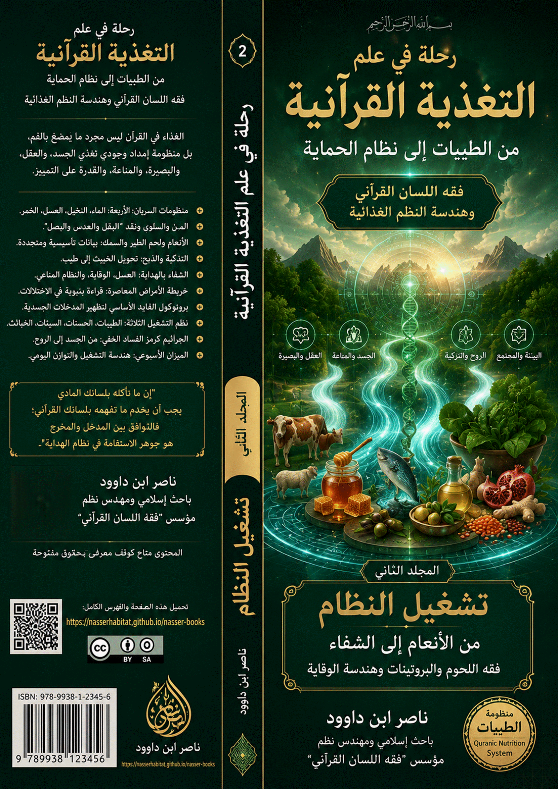
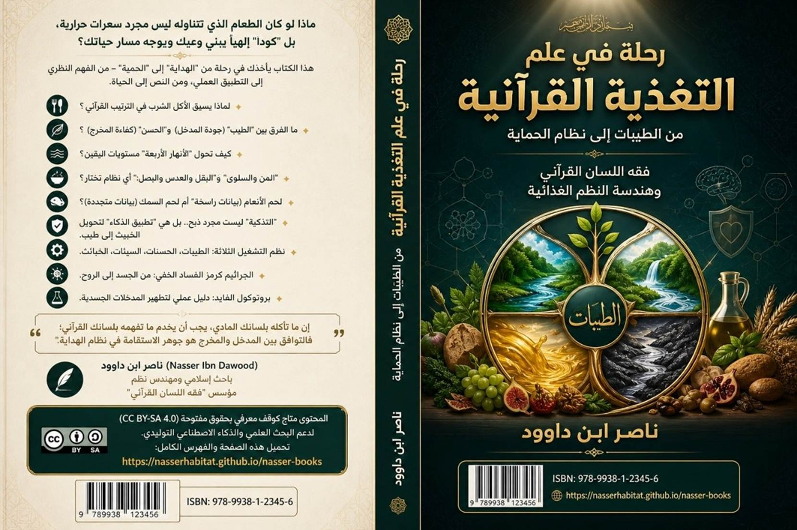

رحلة في
علم التغذية القرآنية
1 المجلد الثاني: تشغيل النظام
من الأنعام إلى الشفاء — فقه اللحوم
والبروتينات وهندسة الوقاية
فقه اللحوم والبروتينات وهندسة
الوقاية
"الغذاء في القرآن ليس مجرد ما
يُمضغ بالفم، بل منظومة إمداد وجودي تغذي الجسد، والعقل، والبصيرة، والمناعة،
والقدرة على التمييز."
المجلد التطبيقي — رحلة في علم
التغذية القرآنية — طبعة 2026
ناصر ابن داوود
https://nasserhabitat.github.io/nasser-books/
1.1 رحلة في علم
التغذية القرآنية
من الطيبات إلى
نظام الحماية
فقه اللسان
القرآني وهندسة النظم الغذائية
هذا العمل ليس كتابًا تقليديًا في التغذية، ولا محاولة لتحويل القرآن إلى وصفة صحية أو حمية غذائية، بل هو مشروع معرفي يسعى إلى إعادة تعريف “الغذاء” ضمن المنظومة القرآنية بوصفه أحد مفاتيح بناء الإنسان: وعيًا، وبصيرةً، وسلوكًا، وحمايةً، واستخلافًا.
وقد جرى تقسيم هذا المشروع إلى ثلاثة مجلدات مترابطة وظيفيًا، تمثل مراحل الانتقال من “فهم النظام” إلى “تشغيله” ثم إلى “الاستعداد لدور الإنسان في عصر الانكشاف”.
1.2 خريطة المجلدات
الثلاثة
1.2.1 المجلد الأول: بناء الميزان
التأسيس والمنهج — من فقه اللسان إلى
هندسة النظم
يركز هذا المجلد على بناء الأساس المفاهيمي والمنهجي لفهم الغذاء في القرآن، وإعادة تعريف مفاهيم الطيبات، والخبائث، والأكل، والشرب، ضمن شبكة اللسان القرآني.
وفيه ينتقل القارئ:
من “الغذاء كمادة” → إلى “الغذاء كنظام إدراك”.
1.2.2 المجلد الثاني: تشغيل النظام
من الأنعام إلى الشفاء — فقه اللحوم
والبروتينات وهندسة الوقاية
يمثل هذا المجلد الجانب التطبيقي والتشغيلي، حيث يتم تفعيل المفاهيم السابقة في أرضية الواقع: الغذاء، اللحوم، التزكية، الوقاية، الأمراض، نظم التشغيل، والصراع الغذائي العالمي.
وفيه ينتقل القارئ:
من “فهم النظام” → إلى “إدارة المدخلات والمخرجات”.
1.2.3 المجلد الثالث: خريطة المستخلف
من علم الساعة إلى الأدوات العملية —
الاستشراف والبصيرة التشغيلية
هذا المجلد هو مرحلة الاكتمال والاستشراف؛ حيث ينتقل المشروع من التغذية إلى سؤال الإنسان نفسه: دوره، وحمايته، ووظيفته، واستعداده لعصر الانكشاف.
وفيه ينتقل القارئ:
من “تشغيل النظام” → إلى “بناء الإنسان المستخلف”.
المسار الكلي
للسلسلة

1.3 ملخصات المجلدات الثلاثة
1.3.1 المجلد الأول: بناء الميزان
التأسيس والمنهج — من فقه اللسان إلى
هندسة النظم
هذا المجلد هو “بوابة الدخول” إلى
مشروع رحلة في علم التغذية القرآنية.
وظيفته ليست تقديم حمية غذائية، بل إعادة تعريف
مفهوم الغذاء نفسه داخل القرآن بوصفه جزءًا من نظام الهداية والتزكية والاستخلاف.
ينطلق الكتاب من سؤال تأسيسي:
هل الطعام مجرد مادة بيولوجية، أم أنه
مدخل يؤثر في الوعي والبصيرة والسلوك؟
وفي هذا المجلد يتعرف القارئ على:
- مفهوم فقه اللسان القرآني بوصفه أداة لفهم المفاهيم داخل
بنيتها النظامية.
- الفرق بين:
- الطيب والخبيث،
- الأكل والشرب،
- الغذاء المادي والغذاء المعرفي.
- فكرة القرآن كنظام تشغيل للإنسان، لا مجرد نص وعظي.
- كيف تتحول “اللقمة” إلى مدخل يبني الإدراك أو يفسده.
- قانون خفض الوساطة، واستعادة الفطرة وسط فوضى الصناعات الغذائية
والإعلامية.
كما يؤسس هذا المجلد للمفاهيم الكبرى
التي ستبنى عليها بقية السلسلة:
- الطيبات كنظام تشغيل،
- البصيرة كمركز للهداية،
- الغذاء كبروتوكول تزكية،
- والخبائث كتشويش يفسد الإدراك.
الخلاصة الوظيفية للمجلد
بعد إنهاء هذا المجلد سيكون القارئ
قادرًا على:
- فهم منهج الكتاب.
- قراءة المفاهيم القرآنية قراءة بنيوية.
- التمييز بين الغذاء كـ “مادة” والغذاء كـ “منظومة”.
- فهم العلاقة بين التغذية والهداية والبصيرة.
- الانتقال من الاستهلاك العشوائي إلى الوعي بالمدخلات.
الشعار المركزي
من “فقه القوت” إلى “بناء الميزان”.
1.3.2 المجلد الثاني: بناء التشغيل
التطبيقات — من الأنعام إلى الشفاء
فقه اللحوم والبروتينات وهندسة
الوقاية
إذا كان المجلد الأول قد أسس
“الميزان”، فإن هذا المجلد يشرح كيف يعمل النظام عمليًا داخل حياة الإنسان.
هنا ينتقل القارئ من مرحلة “الفهم
النظري” إلى مرحلة “التشغيل”:
- كيف تعمل الطيبات داخل الجسد والوعي؟
- كيف تتحول الخبائث إلى اضطرابات جسدية ومعرفية؟
- كيف يرتبط الغذاء بالمناعة والبصيرة والقدرة على التمييز؟
يتناول هذا المجلد:
- هندسة الأنعام واللحوم والبروتينات.
- التذكية والذكاة كآليات “تنقية”.
- الأنهار الأربعة وأنظمة السريان.
- العسل كنموذج للشفاء المقطر.
- الشفاء كعودة إلى المعايرة.
- العلاقة بين الأمراض المعاصرة واختلال المدخلات.
- نقد الطغيان الصناعي والغذائي العالمي.
- بروتوكولات الوقاية واستعادة الفطرة.
وفيه تظهر الفكرة المركزية:
المرض ليس دائمًا خللًا عضويًا فقط،
بل قد يكون اضطرابًا في الإدراك، أو انفصالًا عن الفطرة، أو فسادًا في نظام
المدخلات.
كما يربط المجلد بين:
- التغذية،
- العبادة،
- المناعة،
- الإدراك،
- والسكينة النفسية.
الخلاصة الوظيفية للمجلد
بعد إنهاء هذا المجلد سيكون القارئ
قادرًا على:
- فهم هندسة الغذاء في القرآن عمليًا.
- التمييز بين أنظمة التغذية الطبيعية والصناعية.
- بناء بروتوكول شخصي متوازن.
- قراءة المرض بوصفه اختلال معايرة.
- فهم العلاقة بين الغذاء والتقوى والبصيرة.
الشعار المركزي
من “بناء الميزان” إلى “تشغيل النظام”.
1.3.3 المجلد الثالث: خريطة المستخلف
الاستشراف والملاحق — من علم الساعة
إلى الأدوات العملية
هذا المجلد هو أفق السلسلة النهائي؛
حيث تتحول التغذية من مجرد “نظام صحة” إلى مشروع
استخلاف وبناء إنسان قادر على العيش في عصر الانكشاف العالمي.
هنا تتسع الرؤية:
- من الغذاء الفردي إلى السيادة الحضارية،
- ومن الحمية إلى الحماية،
- ومن الجسد إلى المستقبل.
يتناول المجلد:
- الشفاء بالهداية.
- الهضم المعرفي.
- قانون المثاني.
- علم الساعة وعلاقته بالتغذية والوعي.
- استراتيجية الحماية من هندسة الجوع والتشويه.
- المهمة الوظيفية للمسيح كبروتوكول إحياء.
- خرائط تشغيل المستخلف.
- الأدوات العملية والبروتوكولات التنفيذية.
- الملاحق اللسانية والنقدية والتطبيقية.
وفي هذا المجلد تتضح الحقيقة الكبرى:
أن معركة الغذاء في عصرنا ليست معركة
مطبخ فقط، بل معركة سيادة، وفطرة، واستقلال إدراكي، وبقاء إنساني.
كما يشرح المجلد كيف تتحول المفاهيم
الغذائية القرآنية:
- من “مواد” إلى “رموز تشغيلية”،
- ومن “أسماء أطعمة” إلى “خرائط تزكية”.
فالتين يصبح رمزًا للنقاء،
والزيتون رمزًا للبصيرة،
والنخل رمزًا للاستقامة،
والعسل رمزًا للشفاء المقطر،
والبصل والعدس رمزًا للهبوط إلى التعلق المادي.
الخلاصة الوظيفية للمجلد
بعد إنهاء هذا المجلد سيكون القارئ
قادرًا على:
- بناء نظامه الشخصي بوعي مستقل.
- التمييز بين الهداية والتشويش العالمي.
- فهم التغذية كبوابة للاستخلاف.
- استخدام أدوات الحماية والتصفية والتنخيل.
- قراءة الواقع الغذائي والطبي والإعلامي ضمن منظور قرآني شامل.
الشعار المركزي
من “تشغيل النظام” إلى “بناء المستخلف”.
الخريطة الكبرى للسلسلة
المجلد الأول:
بناء الميزان
↓
(فهم المفاهيم
والمنهج)
المجلد الثاني:
بناء التشغيل
↓
(تشغيل النظام
داخل الجسد والوعي)
المجلد الثالث:
خريطة المستخلف
↓
(الحماية
والسيادة والاستخلاف)
الصياغة الجامعة للسلسلة
لقد حاولت هذه السلسلة أن تنقل القارئ:
من فقه القوت إلى هندسة الملكوت،
ومن الاستهلاك إلى التشغيل،
ومن التبعية إلى السيادة،
ومن اللقمة إلى البصيرة،
ومن التغذية إلى الاستخلاف.
1.4 الفهرس
1.2.1 المجلد الأول: بناء
الميزان
1.2.2 المجلد الثاني: تشغيل
النظام
1.2.3 المجلد الثالث: خريطة
المستخلف
1.3.1 المجلد الأول: بناء الميزان
1.3.2 المجلد الثاني: بناء التشغيل
1.3.3 المجلد الثالث: خريطة المستخلف
1.5
الباب الرابع: أنهار النعيم وأشربة الضلال (منظومات السريان)
1.5.1
الفصل الأول: نظام السريان الرباعي (The Quad-Flow System)
1.5.2
الفصل الثاني: المبردات والمحفزات.. دور الكافور والزنجبيل في ضبط الوعي
1.5.3
الفصل الثالث: شراب أهل النار (الحميم والغساق) كأعطال برمجية حارقة
1.5.4
الفصل الرابع: شفرة "السَّكَر".. تداخل الترددات وعطالة المعالج (العقل)
1.6
الباب الخامس: الحبوب والبقوليات (بين التحرر والتعلق بالأرض)
1.6.1
الفصل الأول: المن والسلوى.. نظام الإعاشة المعرفي الحر (Cloud-Sustenance
Protocol)
1.6.2
الفصل الثاني نقد "البقل والقثاء والعدس والبصل" – رموز الارتباط
بالمادي والهبوط البرمجي
1.6.3
الفصل الثالث: كود "البيانات الأرضية": تفكيك شفرة (الفوم، العدس،
البصل)
1.6.4
الفصل الرابع: الحب ذو العصف والريحان.. جوهر العلم وحماية المنهج
1.7
الباب السادس: اللحوم والبروتينات (البيانات التأسيسية والارتقاء)
1.7.1
الفصل الأول: لحم الأنعام ولحم السمك.. الفرق بين البيانات الراسخة والمتجددة
1.7.2
الفصل الثاني: لحم الطير والبيض المكنون.. رموز الارتقاء والأكواد المحفوظة
1.7.3
الفصل الثالث: التذكية والذبح – بروتوكول تنقية البروتينات المعرفية
1.7.4
الفصل الرابع: مفهوم الصيد – البحر رمز علم الله، والبر رمز علم البشر
1.7.5
الفصل الخامس: "ما أكل السبع" – من تحريم البقايا إلى الذكاة الفكرية
1.7.6
الفصل السادس: "إلا ما ذكيتم" – المنهج القرآني في تذكية المحرمات
1.8
الباب السابع: مدرسة الشفاء وهندسة الوقاية
1.8.1
الفصل الأول: العسل.. الوعي المقطر والبروتوكول الشامل للصيانة
1.8.2
الفصل الثاني: آية الطب الكبرى {وَلَا تُسْرِفُوا}.. صمام أمان النظام الإنساني
1.8.3
الفصل الثالث: الشفاء بين الصدور والأبدان.. تكامل الأسباب والمسببات
1.8.5 الفصل الخامس: فلسفة الغذاء بين
ميزان الفطرة وطغيان الصناعة
1.8.6 الفصل السادس: العودة إلى ميزان
الفطرة (الجانب العملي)
1.8.7
بروتوكولات الأدوية: بين الضرورة والطغيان الصناعي
1.9
الباب الثامن: نظم التشغيل الثلاثة – الطيبات، الحسنات، السيئات، الخبائث
1.9.1
الفصل الأول: النظام الهندسي للمفاهيم الأربعة
1.9.2
الفصل الثاني: جدول المقارنة الهندسية موسعاً (8 أبعاد)
1.9.3
الفصل الثالث: "إن الحسنات يذهبن السيئات" – قانون فيزيائي معرفي
1.9.4
الفصل الرابع: الخبائث كفيروسات – ونظام العزل الإلهي
1.9.5
الفصل الخامس: معادلة الابتلاء والاستغفار
1.9.6
الفصل السابع: الجراثيم والكائنات الدقيقة – فيروسات الفساد الخفي وتغلغل الخبائث
1.9.7
الفصل الثامن: إضاءة بنيوية: "المتجر الحديث.. متاهة الخبائث المقنعة"
1.9.8
الفصل التاسع: التلوث البيئي — اختلال "البيئة الحاضنة" (العطب المادي)
1.10
الباب التاسع: هندسة التشغيل والزمن — من "الدقيقة" إلى "الميزان
الأسبوعي".
1.10.1
الفصل الأول: هندسة الوحدات الزمنية (البناء البنيوي)
1.10.2
الفصل الثاني: تابع/ هندسة الوحدات الزمنية: من "زمن التشغيل" إلى
"زمن التصفية"
1.10.3
الفصل الثالث: بروتوكول الميزان الأسبوعي (المعايرة العملية للنظام).
1.10.4
ملحق (أ): جدول المعايرة الأسبوعي (System Operating Schedule).
1.11 الباب العاشر: التزكية
والتغذية – البصيرة والمناعة
1.11.2 الفصل الثاني: نحو
مختبر بشري ببوصلة قرآنية
1.11.4
الفصل الرابع: من القارئ إلى المُشغِّل – كيف تبني نظامك بعد أن فهمته
1.11.6
الفصل السادس: الدم في المعراج النبوي – من مسار الجسد إلى مدار النور (تزكية الدم
كذكاة روحية)
1.12
الخاتمة: نحو حمية الهداية الشاملة
1.5 الباب الرابع:
أنهار النعيم وأشربة الضلال (منظومات السريان)
1.5.1 الفصل
الأول: نظام السريان الرباعي (The Quad-Flow System)
تفكيك شفرات الأنهار المعرفية
(ماء، لبن، عسل، خمر)
في هذا الفصل، نُعيد قراءة
"أنهار الجنة" لا كجغرافيا مادية فحسب، بل كـ "بروتوكولات سريان
وظيفية" داخل النظام الإنساني المكتمل. إن تعدد هذه الأشربة في النص
القرآني يشير إلى وجود أربعة مستويات من "المعالجة اليقينية" تضمن
استدامة عمل المعالج (القلب) وتدفق البيانات (الروح).
1. بروتوكول الماء (The Connectivity Protocol): اليقين الأساسي
- التفكيك اللساني (م - ا): حرف الميم
(الجمع والإحاطة) مع الألف (الامتداد والقوة). الماء وظيفياً هو "المادة
الحاملة" لكل شيء.
- الوظيفة الهندسية: هو "الناقل
العام" (Universal Bus). في النظام المعرفي، يمثل الماء "اليقين الأولي" الذي
يمنح الحياة للبيانات الجافة {وَجَعَلْنَا مِنَ الْمَاءِ كُلَّ شَيْءٍ
حَيٍّ}.
- حالة السريان: يمثل اليقين الذي يروي
"عطش التساؤل" البدائي، وهو ضروري لعملية "تبريد" النظام
ومنعه من الاحتراق تحت ضغط الشكوك.
2. بروتوكول اللبن (The Originality Protocol): اليقين الفطري
- التفكيك اللساني (ل - ب - ن): اللام
(التوجيه والالتصاق)، الباء (التأسيس والظهور)، النون (النمو والاستمرارية).
- الوظيفة الهندسية: هو "برنامج
التشغيل الأصلي" (Firmware). يُوصف بأنه يخرج {مِن بَيْنِ فَرْثٍ وَدَمٍ لَّبَنًا خَالِصًا}،
وهذا هندسياً يعني "استخلاص النقاء من وسط التفاعلات البيولوجية
والمدخلات المعقدة".
- حالة السريان: يمثل اليقين الذي لم
تمسه "أخطاء البرمجة" البشرية، هو "الفطرة" التي تغذي
الوعي قبل أن يلوثها الجدال المعرفي. إنه "سائغ للشاربين" لأنه
متوافق تماماً مع بنية النظام الإنساني.
3. بروتوكول العسل (The Optimization Protocol): اليقين العلاجي
- التفكيك اللساني (ع - س - ل): العين
(الاستيعاب والظهور)، السين (السريان)، اللام (التوجيه).
- الوظيفة الهندسية: هو "نظام
تصحيح الأخطاء" (Error Correction System). العسل ليس مادة خام، بل هو "مُخرَج" مرّ عبر معالجة
(بطون النحل) وتكرير لرحيق الأزهار.
- حالة السريان: يمثل اليقين المصفى
الذي يُستخدم لترميم الثغرات البرمجية في النفس {فِيهِ شِفَاءٌ لِّلنَّاسِ}.
هو "اليقين المقطر" الذي يأتي بعد تجربة وتدبر وبحث طويل، فيتحول
إلى مادة علاجية تعيد التوازن للنظام.
4. بروتوكول الخمر (The Integration Protocol): اليقين الانتشائي
- التفكيك اللساني (خ - م - ر): الخاء
(الاختراق والستر)، الميم (الجمع)، الراء (التكرار). الخمر هي ما
"يستر" العقل بجمال الحقيقة.
- الوظيفة الهندسية: هو "حالة
الاندماج الكلي" (Total System Integration). في الآخرة (النظام التام)، تكون الخمر خالية من
"الغول" (Noise/Interference) ومن
"النزف" (Energy Loss).
- حالة السريان: يمثل حالة
"الذروة" في اليقين، حيث تسقط المسافات بين "العالم"
و"المعلوم". هي "لذة للشاربين" لأنها تمثل الامتلاء
الكامل بالمعنى، حيث يغيب الوعي الجزئي (الشكوك المحدودة) في الوعي الكلي
(اليقين المطلق).
جدول معايرة نظام السريان الرباعي
|
البروتوكول |
مستوى اليقين |
الحالة التقنية |
الوظيفة الأساسية |
|
الماء |
أساسي (Basic) |
سيولة خام |
الإحياء والربط (Connectivity) |
|
اللبن |
فطري (Original) |
نقاء فطري |
التغذية التأسيسية (Firmware) |
|
العسل |
علاجي (Refined) |
تقطير ومعالجة |
تصحيح الأخطاء (Optimization) |
|
الخمر |
انتشائي (Peak) |
اندماج كلي |
اللذة والشهود (Integration) |
الأنهار الأربعة (ماء، لبن، عسل،
خمر) كمستويات معالجة يقينية
تمثل الأنهار "المسارات
الفائقة للبيانات" (Super-Highways of Information). إن جريان هذه الأنهار
الأربعة يشير إلى وجود أربعة مستويات من "السيولة الوظيفية" التي
يحتاجها الوعي الإنساني للوصول إلى حالة الاستقرار الكامل.
|
النهر (الناقل) |
المستوى المعرفي |
الدلالة الهندسية (Logic) |
التوقيع الوظيفي (Functional
Signature) |
|
الماء (غير
آسن) |
اليقين التأسيسي |
الناقل العام (Universal
Carrier) |
تجديد المسارات ومنع ركود
البيانات ($\Delta S = 0$) |
|
اللبن (لم
يتغير) |
اليقين المنهجي |
الفلترة الحيوية (Fitra Logic) |
حماية "كود المصنع"
من التلوث البشري أو المعالجة |
|
العسل (مصفى) |
اليقين العلاجي |
نظام الاسترداد (System
Recovery) |
معالجة الثغرات (Debugging) وترميم الندوب الإدراكية |
|
الخمر (لذة) |
اليقين الانتشائي |
الأداء الأقصى (Peak
Performance) |
انعدام الضجيج ($SNR \to \infty$) وتحول
الجهد إلى لذة |
خلاصة الفصل: "الأنهار الأربعة هي 'دوائر السريان' التي تضمن عدم توقف النظام
الإنساني عن النمو. المؤمن يبدأ بالماء ليستقر، ثم اللبن ليتعلم المنهج، ثم العسل
ليرمم جراحه، ليصل أخيراً إلى الخمر ليتذوق حلاوة الاتصال الدائم بالله."
1.5.2 الفصل
الثاني: المبردات والمحفزات.. دور الكافور والزنجبيل في ضبط الوعي
في "فقه اللسان القرآني"،
لا يكتفي النص بتقديم "الأنهار" كمادة خام لليقين، بل يقدم "مُحسنات
وظيفية" (System Enhancers) تعمل على ضبط درجة حرارة الوعي وحركية الأداء.
الكافور والزنجبيل يمثلان شفرتي "التبريد" و"التحفيز" في نظام
الهداية.
1. شفرة الكافور: بروتوكول
التبريد والسكينة (The Cooling Protocol)
- الوصف القرآني: {إِنَّ الْأَبْرَارَ
يَشْرَبُونَ مِن كَأْسٍ كَانَ مِزَاجُهَا كَافُورًا} (الإنسان: 5).
- التحليل الهندسي: الكافور وظيفياً هو
"مبرد النظام" (System Cooler). في حالات الاحتدام
المعرفي أو الصراعات النفسية، يحتاج الوعي إلى مادة "تطفئ" نيران
القلق وتمنحه حالة من الصقيع الإيماني الجميل.
- ضبط الوعي: يعمل الكافور ككود للمزاج
الهادئ المستقر، حيث يتم "مزج" اليقين ببرودة الكافور لمنع الوعي
من "الاحتراق" تحت وطأة عظمة الحقائق الكبرى. إنه يمثل حالة
"الوقار المعرفي".
2. شفرة الزنجبيل: بروتوكول
التحفيز والانطلاق (The Boosting Protocol)
- الوصف القرآني: {وَيُسْقَوْنَ فِيهَا
كَأْسًا كَانَ مِزَاجُهَا زَنجَبِيلًا} (الإنسان: 17).
- التحليل اللساني: الزنجبيل يُعرف
بحرارته وقدرته على تنشيط الدورة الدموية. وظيفياً في النص، هو "محفز
الأداء" (Performance Booster).
- ضبط الوعي: يمثل الزنجبيل كود
"الحيوية والاندفاع نحو العمل". إذا كان الكافور للسكينة،
فالزنجبيل هو للطاقة المطلوبة لتنفيذ المهام السيادية. إنه يحمي النظام من
"الخمول البرمجي" ويحافظ على حالة اليقظة التامة (Attention Mechanism).
3. هندسة "المزاج":
المعايرة الدقيقة للنفس
- فلسفة المزج: نلاحظ أن القرآن يستخدم
لفظ "مزاجها". هندسياً، المزج هو عملية "تعديل
الخصائص" (Modulation). اليقين (الشراب الأساسي) يُعدل بالكافور
أو الزنجبيل ليناسب "الحالة التشغيلية" للمؤمن.
- التوازن الوظيفي: نظام الهداية لا
يريد إنساناً بارداً دائماً (عجز) ولا ملتهباً دائماً (تهور)، بل يريد
إنساناً "موزوناً" يُبرد وعيه بالكافور وقت الحاجة للحكمة، ويحفزه
بالزنجبيل وقت الحاجة للحركة والبناء.
4. عين يشرب بها عباد الله (Direct Access)
- هذه المبردات والمحفزات تنبع من "عيون" تفجرها إرادة
المؤمن.
- التحليل الوظيفي: هذا يعني أن
"أدوات ضبط الوعي" ليست خارجية فقط، بل هي "برمجيات
داخلية" يستطيع المؤمن تفعيلها متى شاء من خلال الاتصال بالوحي وتدبر
الآيات، ليصنع "مزاجه اليقيني" الخاص.
لا
يكتفي القرآن بتقديم "الأنهار" كمادة خام لليقين، بل يقدم "مُحسنات
وظيفية" (System Enhancers) تعمل على ضبط درجة حرارة الوعي وحركية الأداء.
|
المكون (المزاج) |
الكافور (System
Cooler) |
الزنجبيل (Performance
Booster) |
|
التأثير الهيكلي |
خفض الضجيج وتثبيت الإشارة |
رفع سرعة المعالجة (Processing
Speed) |
|
الحالة الشعورية |
السكينة: وقار
معرفي يحمي من التهور |
الحركية: اندفاع
بنّاء نحو التغيير والعمل |
|
مستوى الطاقة |
طاقة استقرار (Potential
Energy) |
طاقة حركة (Kinetic
Energy) |
|
الوظيفة الإجرائية |
كبح جماح العواطف (Control) |
تفعيل الإرادة والعزيمة (Execution) |
|
نطاق السلامة |
يحمي من "الاحتراق
الذاتي" |
يحمي من "الركود
والتعطيل" |
|
المعادلة |
يقين + كافور = بصيرة راكدة |
يقين + زنجبيل = سعي حثيث |
خلاصة
الفصل: "الكافور والزنجبيل هما 'منظمات الحرارة'
(Thermostats) للوعي الإنساني. الكافور يضمن السكينة في مواجهة العواصف،
والزنجبيل يضمن الطاقة في مواجهة الركود."
1.5.3 الفصل
الثالث: شراب أهل النار (الحميم والغساق) كأعطال برمجية حارقة
في "فقه اللسان القرآني"،
لا يمثل الحميم والغساق مجرد عقاب مادي، بل هما التجسيد الوظيفي لـ "فشل
النظام" (System Failure). عندما يرفض الإنسان "الشراب الطهور"
(اليقين)، فإنه يضطر لاستيعاب أشربة تمثل "نفايات برمجية" تؤدي إلى تآكل
محرك الوعي.
1. شفرة "الحميم": فرط
الإحماء البرمجي (Thermal Overload)
- التوصيف الوظيفي: الحميم هو السائل
الذي وصل إلى أقصى درجات الغليان. هندسياً، يمثل الحميم حالة "الاحتقان
المعرفي" والتوتر العالي الذي يؤدي إلى صهر "تروس الوعي".
- أثر العطل: {يُصْهَرُ بِهِ مَا فِي
بُطُونِهِمْ وَالْجُلُودُ}. هذا الوصف يشير إلى انهيار "وحدات المعالجة
الداخلية" (البطون) و"واجهة المستخدم الخارجية" (الجلود).
الحميم هو "كود حارق" يفكك الروابط البنائية للإنسان نتيجة إصراره
على معالجة الباطل كأنه حق.
2. شفرة "الغساق": تلوث
السريان وركود البيانات (Data Corruption)
- التوصيف اللساني: الغساق هو ما يسيل
من صديد أهل النار، وهو بارد نتن.
- التحليل الهندسي: يمثل الغساق "النفايات
السائلة" (Sludge) الناتجة عن احتراق البيانات. هو نظام
سريان "ملوث" تماماً، يعطل أي إمكانية للإصلاح. إذا كان الحميم هو
"الانفجار" بسبب الحرارة، فإن الغساق هو "الانسداد" بسبب
القذارة المعرفية والركود الفكري.
- العجز عن الرِّي: هذا الشراب لا يحقق
"السيولة الوظيفية"، بل يزيد النظام ثقلاً وعجزاً، مما يعبر عن
حالة "اليأس البرمجي" التي يصل إليها من قطع اتصاله بمصدر الهداية.
3. "لا يذوقون فيها برداً
ولا شراباً": انقطاع الدعم الفني
- نظام العزل: أهل النار محجوبون عن
"منظومات التبريد" (الكافور) و"منظومات التحفيز"
(الزنجبيل).
- التحليل الوظيفي: هذا الانقطاع يعني
وصول النظام إلى حالة "عدم القابلية للإصلاح" (Irreparable State). فبدلاً من "الماء غير الآسن" الذي يجدد النظام،
لا يجدون إلا ما يزيد عطلهم اشتعالاً.
4. الصديد كشفرة للنتائج المشوهة
- يقول تعالى: {وَيُسْقَىٰ مِن مَّاءٍ صَدِيدٍ}. الصديد
وظيفياً هو مخرج "الالتهاب".
- عندما يرفض الوعي "اللبن الخالص" (الفطرة)، فإنه يضطر
لشرب "نتائج أفعاله المشوهة" (الصديد). هو دورة مغلقة من العذاب
حيث يتحول العطل نفسه إلى مادة للتغذية، مما يضمن استمرار حالة
"الاحتراق الوظيفي" دون توقف.
لا يمثل الحميم والغساق مجرد عقاب
مادي، بل هما التجسيد الوظيفي لـ "فشل النظام" (System Failure). عندما يرفض الإنسان "الشراب الطهور" (اليقين)، فإنه
يضطر لاستيعاب أشربة تمثل "نفايات برمجية".
|
المكون (الشراب) |
الحالة الفيزيائية |
الدلالة الهندسية (System
Failure) |
الأثر على الوعي (Processing) |
|
الحميم |
سائل في حالة الغليان |
فرط الإحماء (Thermal
Overload) |
صهر مسارات التفكير وشل قدرة
النظام على اتخاذ القرار |
|
الغساق |
سائل بارد، نتن، لزج |
الركود التام (System
Sludge) |
تراكم النفايات المعرفية التي
تعيق أي حركة أو تدفق للحق |
|
الصديد |
نتاج التهابي (إفرازات) |
الارتداد الإشاري (Feedback
Loop) |
شرب "مخرجات النظام
المشوهة" بدلاً من استقاء "مدخلات الفطرة" |
القراءة الهندسية لآلية الانهيار:
- الحميم (الاحتقان المعرفي): عندما يرفض الوعي "الكافور" (المبرد) ويصر على اتباع الهوى والظنون، ترتفع حرارة المعالجة (Processing Heat) لمستويات غير مسبوقة. "الحميم" هو الطاقة التي لا تجد مساراً للتصريف، فترتد لتصهر "تروس الوعي" وتجعل الإنسان في حالة تخبط واحتراق داخلي دائم.
- الغساق (العجز البنيوي): هو الضد الحاد للحميم (برد شديد وركود). يمثل الحالة التي يتوقف فيها النظام عن "التحديث" (Update)، فتتراكم فيه البيانات الفاسدة والظنون الميتة حتى تتحول إلى "غساق". هو اليقين المفقود الذي تحول إلى ريبة نتنة تُثقل الوعي وتمنعه من السمو.
- علاقة "الصديد" بـ "الطيب": بما أننا قررنا سابقاً أن (الطيبات) هي المدخلات النقية، فإن (الصديد) هو المخرج الحتمي لمن يغذي نظامه بـ "الخبائث". هو "بيانات تالفة" يعاد تدويرها داخل النظام في دورة مغلقة من العذاب الإدراكي.
خلاصة الفصل: "الحميم والغساق هما التحذير الهندسي الأخير من مغبة العبث بـ
'مدخلات النظام'. الحمية القرآنية هي الوقاية الوحيدة من السقوط في هذه الهاوية
البرمجية."
1.5.4 الفصل
الرابع: شفرة "السَّكَر".. تداخل الترددات وعطالة المعالج (العقل)
في "فقه اللسان القرآني"،
يمثل "السَّكَر" حالة من "الانسداد الوظيفي" المؤقت، حيث يخرج
النظام من حالة "المعايرة اليقينية" إلى حالة "التشويش
البرمجي".
1. التفكيك البنيوي لكلمة
"سَكَر" (س - ك - ر)
- السين [س]: حرف السريان والانتشار
المستمر.
- الكاف [ك]: حرف الكينونة، الوعاء،
والاحتواء المحكم.
- الراء [ر]: حرف التكرار، الاهتزاز،
والركم.
- الاستنتاج الهندسي:
"السَّكَر" هو "سريان [س] محتجز [ك] متراكم [ر]".
وظيفياً، هو الحالة التي يتراكم فيها المدخل داخل الوعاء الإنساني دون أن يتم
تصريفه أو معالجته بشكل صحيح، مما يؤدي إلى "غليان" أو
"سد" لمنافذ الإدراك.
2. "سَكَرًا وَرِزْقًا
حَسَنًا".. هندسة المفارقة (The Binary Paradox)
في الآية 67 من سورة النحل، نجد
تصنيفاً ثنائياً للمخرجات من نفس المصدر (النخيل والأعناب):
- المخرج الأول (سَكَرًا): يمثل
"البيانات المشوشة" أو المادة التي تُفقد النظام اتزانه (Input Noise).
- المخرج الثاني (رِزْقًا حَسَنًا):
يمثل "البيانات البناءة" المتوافقة مع معايير الجودة (Optimal Output).
التحليل الوظيفي: النص يضع الإنسان أمام مسؤولية "الفرز المعرفي"؛ فالمصدر
الواحد قد يُنتج وقوداً للنظام (رزقاً حسناً) أو مادة مسببة للأعطال (سكراً).
3. "سكارى".. حالة
انقطاع البث (Connection Loss)
وصف الناس يوم القيامة بأنهم {سُكَارَىٰ
وَمَا هُم بِسُكَارَىٰ} (الحج: 2) يعزز مفهوم "السَّكَر" كعطل فني:
- السَّكَر الوظيفي: هو حالة
"ذهول النظام" وفقدانه القدرة على معالجة البيانات المحيطة به
نتيجة "هول" أو "ضغط عالي" (High
Pressure)
يفوق قدرة المعالج.
- غياب العقل: العقل وظيفياً هو
"الرابط" (Linker). "السَّكَر" يعمل كـ
"حاجب" يفك هذا الربط، فتصبح التصرفات عشوائية (Random Access) لا يحكمها نظام الهداية.
4. بروتوكول التحريم المتدرج (System Update Phases)
لم يتم حظر "السَّكَر"
دفعة واحدة، بل مر بمراحل "تحديث المعايير":
- مرحلة التقييم (نقد العيوب): كشف أن
ضرره (System Damage) أكبر من نفعه.
- مرحلة الحظر المشروط (ضبط جودة الصلاة): منع "الاقتراب" من حالة الاتصال السيادي (الصلاة) في
ظل وجود "تشويش برمي" (سكر).
- مرحلة العزل القاطع (Firewall): تصنيفه كـ "رجس" (Malware) من عمل الشيطان،
ووجوب "الاجتناب" التام لحماية سلامة النظام.
جدول المعايرة: السَّكَر vs
الرزق الحسن
|
وجه المقارنة |
السَّكَر (Sakar) |
الرزق الحسن (Good Provision) |
|
الحالة الوظيفية |
تشويش وتداخل (Noise) |
انسياب وبناء (Flow/Growth) |
|
أثر المعالجة |
تعطيل العقل (Processor Lag) |
تفعيل البصيرة (Enhanced Processing) |
|
التصنيف البرمجي |
كود عارض/ممنوع (Restricted) |
كود أصيل/متاح (Open Source) |
|
المآل |
انحراف الممارسة |
حياة طيبة |
إضافة مقترحة للخاتمة الوظيفية
للفصل:
"إن السَّكَر ليس مجرد شراب
مُذهب للعقل، بل هو رمز لكل مدخل (مادي أو معرفي) يؤدي إلى 'تجميد' قدرات الإنسان
على التدبر. الحمية القرآنية تقتضي تطهير النظام من 'أكواد السَّكَر' لضمان بقاء
قناة الاتصال مع الخالق صافية، بعيدة عن ضجيج الأوهام واختلالات الوعي."
هل ترى أيها المهندس الباحث أن هذا
التأصيل يتوافق مع رؤيتك لـ "ميكانيكا الاستيعاب"، أم ننتقل لتفكيك
علاقة السكر (بمعناه الحديث) بـ "خمول النظام"؟
1.6 الباب الخامس:
الحبوب والبقوليات (بين التحرر والتعلق بالأرض)
1.6.1 الفصل
الأول: المن والسلوى.. نظام الإعاشة المعرفي الحر (Cloud-Sustenance Protocol)
في هذا الفصل، ننتقل من دراسة
"الطعام الذي يحتاج إلى حرث وسقيا ومعالجة" إلى دراسة "الطعام
الجاهز" (Ready-to-Use Data). يمثل "المنّ والسلوى" في اللسان
القرآني أرقى مستويات الإمداد الإلهي الذي يُحرر الإنسان من "عبودية الأسباب
المادية" والتعلق بالأرض.
1.
"المَنّ".. شفرة البيانات المقطرة (The
Pre-Processed Knowledge)
- التوصيف الهندسي: يمثل
"المنّ" في نظام الهداية "البيانات السحابية" (Cloud Data) التي تنزل على المعالج
الإنساني دون الحاجة لـ "قوة معالجة" (Processing
Power)
شاقة من طرف المستخدم (حرث، بذر، حصد).
- شفرة "الحلاوة": لماذا هو
"حلو"؟ في فقه اللسان، الحلاوة تعبر عن "التوافق التام"
و"غياب المقاومة". الطعام الحلو هو الذي يمتصه النظام بسرعة البرق
ويتحول إلى طاقة فورية. هندسياً، "المنّ" هو كود برمجي
"سلس" (Smooth Code) لا يتطلب مجهوداً في التفكيك أو الهضم
المعرفي.
- بياض اللبن وحلاوة العسل: هذا الوصف
يجمع بين "بروتوكول اللبن" (الفطرة النظيفة) و"بروتوكول
العسل" (الشفاء المصفى)، مما يجعل "المنّ" أعلى درجات
"الرزق المعرفي السيادي".
2.
"السلوى".. طاقة الحركة والتحرر (The
High-Energy Protocol)
- التحليل الوظيفي: إذا كان
"المنّ" يمثل الجانب (الكربوهيدراتي/المعرفي)
الحلو، فإن "السلوى" (طائر السماني) تمثل الجانب
(البروتيني/الحركي).
- التأثير البرمجي: "السلوى"
من (س-ل-و) وهي ما يمنح النفس "السلو" (Detachment)؛ أي القدرة على فك
الارتباط بالهموم الأرضية. هو طاقة تمنح المؤمن "خفة الحركة"
للارتقاء في مدارج الهداية، بعيداً عن "ثقل" البقوليات والعدس
والبصل (الارتباط بالأرض).
3.
المفارقة بين "الحرية المعرفية" و"العبودية المادية"
هنا نجد الصدام بين نظامين (System Conflict):
- نظام "المن والسلوى": نظام
"حر" (Open Source)، رزق ينزل من الأعلى، يتطلب
"ثقة" في المصدر وعدم "تخزين" (Caching) لأن المدد مستمر.
- نظام "البقل والعدس والبصل": هو نظام "مادي" يتطلب الانحناء للأرض، التعب الشاق،
والتعلق بالأسباب.
الاستنتاج الهندسي: طلب بني إسرائيل استبدال "المن والسلوى" بالبصل والعدس هو
في الحقيقة "هبوط في إصدار النظام" (System
Downgrade)؛ من نظام سحابي حر إلى نظام محلي مقيد بجهد البدن وعشوائية المناخ.
4.
"حلوى السماء" وعلاقتها بضبط الوعي
"المنّ" كـ
"حلوى" هو رمز لكل معرفة "تُبهج" الوعي وتمنحه طاقة إيجابية
دون آثار جانبية (خلافاً للسكريات المصنعة التي تسبب خمول النظام). في "حميتك
السيادية"، يمثل "المنّ" لحظات "التجلي" و"الإلهام"
التي تنزل على الباحث فجأة كرزق جاهز يفكك له أعقد المسائل.
الخلاصة
الوظيفية:
"المن والسلوى هما بروتوكولا
الإعاشة للمؤمن في مرحلة (التيه) أو (الانتقال المعرفي). إنهما يمثلان 'الطاقة
النظيفة' التي تضمن بقاء الإنسان حراً، غير مرتهن لأدوات الإنتاج المادية، ليتفرغ
لمهمته الكبرى: المعالجة السيادية للنص والكون".
الجذر (م-ن-ن) ربطه بـ
"المناّن" (المصدر الذي يمنح دون مقابل) و"المنون" (الذي يقطع
الحاجة)، تؤكد أن "المنّ" هو الطعام الذي يقطع الحاجة لما سواه.
لا يمثل "المن والسلوى"
مجرد مائدة طعام لبني إسرائيل في التيه، بل يمثلان "بروتوكول الإعاشة
السيادي". إنه النظام الذي يمنحه الخالق للإنسان عندما يكون في حالة
"تحرر" كامل من الأنظمة الأرضية، ليعلمه كيف يتلقى "البيانات"
و"الرزق" مباشرة من المصدر الصافي.
هذا الطرح يمثل "مانيفستو التحرر الطاقي" في فقه اللسان؛ حيث تنقل "المن والسلوى" من سياق "المعجزة التاريخية" إلى سياق "نظام الإعاشة السيادي" (Sovereign Provisioning System). في لغة النظم، هذا البروتوكول يهدف لتصفير "تكلفة التشغيل" (Operational Cost) للجسد، ليتفرغ الإنسان كلياً لعمليات "المعالجة العليا".
مصفوفة بروتوكول الإعاشة
السيادي (المن والسلوى)
|
المادة الغذائية |
التوصيف البنيوي |
الكود الوظيفي (System Role) |
الأثر على المعالج البشري |
|
المنّ |
مادة تنزل من الأعلى (ندى/عسل) |
البيانات الجاهزة ($Ready\ Data$) |
قطع الحاجة للمصادر الأرضية وتثبيت السكينة |
|
السلوى |
طائر (بروتين نقي) سهل المنال |
مُحرك الدافعية ($Motivation\ Engine$) |
منح طاقة الانطلاق والحيوية (السرور الوظيفي) |
مقارنة النظم: (النظام الحر)
مقابل (نظام التعلق بالأرض)
هذا الجدول يوضح الفارق بين "رزق الاستخلاف" و"رزق الكدح":
|
وجه المقارنة |
نظام المن والسلوى (السيادي) |
نظام البصل والعدس (الأرضي) |
|
مصدر الإمداد |
مباشر (Cloud-Based): من المصدر الأعلى |
وسيط (Ground-Based): عبر كدح الأرض |
|
بصمة الوساطة |
صفرية: (حصاد مباشر بلا حرث) |
عالية: (حرث، سقي، بذر، حصد، معالجة) |
|
حالة الوعي |
سيادة: تفرغ كامل للبحث والمعالجة |
عبودية: ارتهان لأدوات الإنتاج والأسباب |
|
نوع الطاقة |
نظيفة: سريعة الامتصاص، منخفضة الضجيج |
ثقيلة: تتطلب طاقة هضم ومعالجة مادية عالية |
|
المآل |
حرية الإرادة: التحرر من ضغط الحاجة |
الهبوط الوظيفي: استبدال الأدنى بالذي هو خير |
التحليل الوظيفي لعملية
"الهبوط":
- بروتوكول المنّ (الاستغناء): من الجذر (م-ن-ن) الذي يفيد "القطع"؛ فهو الطعام الذي يقطع تعلقك بالأغيار. هندسياً، هو "كود الاكتفاء الذاتي" الذي يجعل مدخلاتك غير خاضعة لابتزاز "السوق" أو "القوى المادية".
- بروتوكول السلوى (التوازن النفسي): من "السلو" وهو الانشراح. هو يوفر البروتين اللازم للحركة دون كدح الصيد المرهق، مما يحافظ على "بصمة وساطة" منخفضة جداً، تضمن بقاء النفس في حالة "سلوى" (رضا) بدلاً من "نصب" (تعب).
- ديناميكية السقوط: عندما طلبوا "البصل والعدس"، هم لم يطلبوا مجرد تنوع غذائي، بل طلبوا "إعادة إدخال الوساطة" في حياتهم. الزراعة والكدح الأرضي يفرضان على الإنسان ارتباطاً مكانياً وزمانياً يقلل من حركية "المعالج السيادي".
الخلاصة الهندسية للفصل:
"المن والسلوى هما 'الوقود المثالي' لمرحلة التحرر الإدراكي؛ حيث يكون الهدف هو تقليل الضجيج المادي إلى الصفر، لتمكين الوعي من الاستقبال الصافي. أما استبدالهما بالأرضيات، فهو اختيار طوعي لخفض 'رتبة النظام' من السيادة إلى العبودية."
بهذا الإصلاح، يكتمل الربط بين "الطيبات" كمدخلات وبين "السيادة" كمخرج نهائي للنظام الإنساني. هل ترى أن هذا البروتوكول هو ما يحاول "الصائم" محاكاته عبر تقليل الاعتماد على "الأرضيات" لرفع كفاءة "السمو المعرفي"؟
نظام الإعاشة الحر مقابل نظام "التعلق
بالأرض"
كان المن والسلوى يتطلبان شرطاً
واحداً: {كُلُوا مِنْ طَيِّبَاتِ مَا رَزَقْنَاكُمْ وَلَا تَطْغَوْا فِيهِ}.
الانهيار حدث عندما طلب بنو إسرائيل (البصل، والعدس، والفوم)، وهي مدخلات تتطلب
"الارتباط بالأرض" والكدح الأرضي، مما يعني السقوط من "النظام
المعرفي الحر" إلى "العبودية المادية" مرة أخرى.
التحليل الوظيفي: "الهبوط" هنا ليس جغرافياً فحسب، بل هو "هبوط في
مستوى الأداء الوظيفي". الانتقال من المدخلات "السماوية" إلى
المدخلات "الأرضية" يمثل تحول الإنسان من "مستقبل للوحي" إلى
"خاضع للأسباب".
خلاصة الفصل: "المن والسلوى هما نموذج لـ 'النظام السيادي' الذي يحرر الإنسان
من قيد المادة. المن يغذي العقل باليقين، والسلوى تغذي الروح بالبهجة."
1.6.2 الفصل
الثاني نقد "البقل والقثاء والعدس والبصل" – رموز الارتباط بالمادي
والهبوط البرمجي
في هذا الفصل، نُفكك شفرة السقوط
المعرفي الذي حدث لبني إسرائيل حين قالوا:
{فَادْعُ لَنَا رَبَّكَ يُخْرِجْ
لَنَا مِمَّا تُنبِتُ الْأَرْضُ مِن بَقْلِهَا وَقِثَّائِهَا وَفُومِهَا
وَعَدَسِهَا وَبَصَلِهَا} (البقرة: 61).
هذا الطلب لم يكن مجرد رغبة في تنوع
الغذاء، بل كان إعلاناً عن الرغبة في "تبديل الكود"؛ من نظام "المن
والسلوى" (التحرر والاتصال المباشر) إلى نظام "البقوليات" (الارتباط
والكدح المادي والحجاب المعرفي).
أولاً: البقل والقثاء – رموز التوسع العرضي
والسطحية
|
الصنف |
الكود الوظيفي |
الحالة البرمجية (System State) |
الأثر الإدراكي |
|
البقل والقثاء |
البيانات السطحية |
التوسع العرضي (Horizontal Scaling) |
تشتت الانتباه في التفاصيل غير
الجوهرية |
|
الفوم |
كود التراكم |
الامتلاء المادي (Data Bloat) |
الارتهان للمدخرات والخوف من الفقد |
|
العدس |
كود الكدح |
الالتصاق بالأرض (Grounding) |
استنزاف طاقة المعالجة في تأمين
البقاء |
|
البصل |
كود الحجاب |
التعقيد الطبقي (Layered Complexity) |
الغرق في القشور والدموع (العناء
المعرفي) |
- التحليل الهندسي: يمثلان في
نظام الوعي "البيانات السطحية" التي تملأ المساحة لكنها تفتقر إلى العمق
الروحي أو "الكثافة اليقينية" الموجودة في المنّ. الارتباط بهما يشير
إلى رغبة الوعي في "الاستكثار المادي" على حساب "الارتقاء
الوظيفي".
1.6.3 الفصل
الثالث: كود "البيانات الأرضية": تفكيك شفرة (الفوم، العدس، البصل)
عندما طلب بنو إسرائيل هذه الأصناف،
لم يكونوا يطلبون طعاماً فحسب، بل كانوا يعلنون عن رغبتهم في "الهبوط"
من مستوى الإمداد النوري المتجدد إلى مستوى التراكم المادي المعقد.
ثانياً: الفوم – كود التراكم
والامتلاء المادي
|
الجذر |
التفكيك اللساني البنيوي |
المفهوم الوظيفي (البرمجي) |
|
ف - و - م |
الفاء (ف) للفتح والانتشار، والواو
والميم (وم) للجمع والاحتواء المكاني. |
"البيانات المكثفة": يعبر عن الرغبة في "الحيازة والادخار". الفوم يمثل
البيانات التي تتطلب جهداً كبيراً في التخزين (الامتلاء المادي) مما يربط الوعي
بـ "الأرض" ويثقله عن الارتقاء. |
ثالثاً: العدس – كود الكدح
والاستقرار الدنيوي
|
الجذر |
التفكيك اللساني البنيوي |
المفهوم الوظيفي (البرمجي) |
|
ع - د - س |
العين (ع) للمعاينة، والدال والسين
(دس) للإخفاء والالتصاق بالأرض (دَسَّها). |
"كود الكدح الأدنى": يمثل البيانات التي تستنزف طاقة المعالجة في تأمين
"البقاء". طلب العدس هو إعلان عن اختيار "الاستقرار الساكن"
(الهبوط) وتفضيل "البيانات الأرضية الصرفة" على المدد الملكوتي. |
رابعاً: البصل – كود الحجاب
والتعقيد الطبقي
|
الجذر |
التفكيك اللساني البنيوي |
المفهوم الوظيفي (البرمجي) |
|
ب - ص - ل |
الباء (ب) للمحضن، والصاد واللام
(صل) للاتصال الجوهري المحجوب. |
"البيانات المحجوبة": يمثل التعقيد الطبقي؛ حيث لا تُدرك الحقيقة إلا بتقشير طبقات متكررة
تسبب "عناءً" (دموعاً) دون أن تمنح النظام نوراً ذاتياً. هو رمز للوعي
الذي يتوه في التفاصيل والقشور. |
توسع وربط: (التين، البصل،
الزيتون) في مختبر الوعي
يقارن هذا الجدول بين مستويات
المعالجة الذهنية بناءً على طبيعة "الكود الغذائي":
|
الرمز القرآني |
الكود الوظيفي |
الحالة البرمجية للنظام |
|
التين |
الوحدة الكلية |
فطرة نقية، لا حجب فيها، استيعاب
فوري للمعلومة دون تشتت (كتلة واحدة). |
|
البصل |
التعقيد الطبقي |
بيانات محجوبة بتكرار، تتطلب
"تقشيراً" وتحليلاً مجهداً يستهلك طاقة النفس. |
|
الزيتون |
الاستخلاص النوري |
الوصول لجوهر الحقيقة (النور) بعد
عملية "معالجة مركبة" (الضغط والعصر). |
- البصل كمرحلة تدريبية: يمكن
اعتبار البصل هو المرحلة التي يتدرب فيها الوعي على "التفكيك"
(التقشير). فمن لا يتقن التعامل مع طبقات البصل (تعقيدات الواقع المادي)، لن
يستطيع تقدير قيمة "الخلاصة النورية" في الزيتون.
- الاستنتاج المنهجي: البصل
هو "اختبار الوعي"؛ فإما أن تغرق في قشوره وتكراره اللامتناهي
فتظل في "أسفل سافلين" من المادية، أو تستخدم "صلابة مركزه"
(صل) لتفهم كيف تُبنى الأنظمة الطبقية، فتتجاوزها نحو "نور الزيتون".
خامساً: جدول مقارن للتحليل الكلي
|
الصنف |
الدلالة الرمزية |
الحالة البرمجية السابقة (المن والسلوى) |
الحالة البرمجية المطلوبة (البقوليات) |
|
البقل
والقثاء |
البيانات السطحية، التوسع العرضي |
مدد سيادي مباشر (Cloud
Data) |
استنبات أرضي مجهد (Local
Data) |
|
الفوم
|
التراكم والامتلاء المادي |
تحرر وسيادة |
حيازة مادية وتخزين |
|
العدس
|
الكدح والاستقرار الدنيوي |
"أحسن تقويم" متصل بالمصدر |
"ذلة ومسكنة" نتيجة الهبوط |
|
البصل
|
الحجاب والتعقيد الطبقي |
وعي مباشر بلا حجب |
وعي محجوب يتطلب تقشيراً وألماً |
الاستنتاج المنهجي لهندسة
الإمداد:
إن الانتقال من "المن
واللوى" إلى "البصل والعدس" هو انتقال من "المعالجة الآنية
السلسة" (Real-time Processing) إلى "المعالجة
المعقدة المجهدة" (Batch Processing).
الرسالة:
بقدر ما يكون "إمدادك"
بسيطاً ونقياً وموصولاً بالمصدر (طيباً)، بقدر ما يتحرر وعيك من "طبقات
البصل" و "التصاق العدس بالأرض"، لينطلق نحو "نور
الزيتون" و "استقامة التين".
سادساً: نقد "الاستبدال" – لماذا هو
أدنى؟
الاستنكار الإلهي:
{أَتَسْتَبْدِلُونَ الَّذِي هُوَ أَدْنَىٰ بِالَّذِي هُوَ خَيْرٌ} (البقرة: 61).
- التحليل الوظيفي: "الأدنى"
ليس وصفاً لقيمة النبات الحيوية فحسب، بل هو وصف لـ "الحالة
الوجودية" التي يفرضها هذا الغذاء. الاستبدال يمثل تراجعاً من
"الحرية المعرفية" (المن والسلوى) إلى "العبودية الاقتصادية"
(الزراعة والري والارتباط بالتراب). النظام الذي يطلب البصل والعدس هو نظام اختار "الهبوط"
من مستوى الاستخلاف السيادي إلى مستوى "الاستهلاك الأرضي".
سابعاً: "اهبطوا مصراً" – الارتباط
بالأنظمة الوضعية
نتيجة الطلب: {اهْبِطُوا مِصْرًا
فَإِنَّ لَكُم مَّا سَأَلْتُمْ} (البقرة: 61).
- المفهوم الهندسي: الهبوط
هنا هو انتقال من "نظام التشغيل السماوي" (الحر) إلى "الأنظمة
المركزية الأرضية" (مصر/الدولة السلطوية). حيث تصبح حياة الإنسان مرتبطة
بـ "البنية التحتية" المادية والعمل الشاق من أجل
"البقوليات"، مما يؤدي إلى "الذلة والمسكنة" نتيجة فقدان
السيادة المعرفية.
ثامناً: الخريطة التصاعدية للهبوط
المن والسلوى (النظام السيادي الحر)
↓
البقل والقثاء (السطحية والتوسع
العرضي)
↓
الفوم (التراكم والامتلاء المادي)
↓
العدس (الكدح الأرضي والاستقرار
الدنيوي)
↓
البصل (الحجاب والتعقيد الطبقي)
↓
"اهبطوا مصراً" (الذلة
والمسكنة وفقدان السيادة)
تاسعاً: خلاصة الفصل الموحد
> "البقل والقثاء والفوم
والعدس والبصل هي 'أكواد التعلق بالأرض' و'رموز الهبوط البرمجي'. نقد هذه الأصناف
هو نقد للعقلية التي تُفضل 'الاستهلاك المضمون' و'الكثرة السطحية' و'التعقيد غير
النافع' على 'التحرر المسؤول' و'اليقين المباشر' و'النور الذاتي'. إنها دعوة
للارتقاء من وعي 'التقشير المؤلم' إلى وعي 'العصر المضيء' (الزيتون)، ومن 'التشتت
الطبقي' إلى 'الانتظام المحكم' (الرمان)."
نقد "الخماسية الأرضية"
– شفرة الهبوط من السيادة إلى العبودية
هذا الفصل يحلل الانتكاسة البرمجية التي حدثت حين طلب بنو إسرائيل استبدال "النظام الحر" بـ "النظام الأرضي". هذا الطلب يمثل هندسياً الرغبة في خفض (Processing Power) مقابل زيادة (Storage Density) المادية.
أولاً: مصفوفة الأكواد الأرضية
(الاستبدال الأدنى)
|
الصنف |
الكود الوظيفي |
الحالة البرمجية (System State) |
الأثر الإدراكي |
|
البقل والقثاء |
البيانات السطحية |
التوسع العرضي (Horizontal Scaling) |
تشتت الانتباه في التفاصيل غير الجوهرية |
|
الفوم |
كود التراكم |
الامتلاء المادي (Data Bloat) |
الارتهان للمدخرات والخوف من الفقد |
|
العدس |
كود الكدح |
الالتصاق بالأرض (Grounding) |
استنزاف طاقة المعالجة في تأمين البقاء |
|
البصل |
كود الحجاب |
التعقيد الطبقي (Layered Complexity) |
الغرق في القشور والدموع (العناء المعرفي) |
ثانياً: تفكيك "البصل"
كاختبار للوعي الطبقي
البصل يمثل النموذج الأمثل للبيانات التي تخفي جوهرها خلف طبقات متكررة. في "مختبر اللسان"، نقارنه بالتين والزيتون لنفهم مستويات الوصول للحقيقة:
|
الرمز |
الحالة البنائية |
الكود المنهجي |
|
البصل |
التقشير |
تدريب الوعي على تفكيك التعقيدات المادية (الواقع المشوه). |
|
التين |
الاحتواء |
الفطرة التي يُؤكل ظاهرها كباطنها (الوضوح التام). |
|
الزيتون |
الاستخلاص |
الوصول لنور المعنى بعد "عصر" التجربة وضغط البرهان. |
1.6.4 الفصل
الرابع: الحب ذو العصف والريحان.. جوهر العلم وحماية المنهج
في "فقه اللسان القرآني"،
تمثل الحبوب (كالحنطة والشعير) "المادة المعلوماتية الأساسية"
لاستمرار النظام الإنساني. إن وصف "الحب" في سورة الرحمن بأنه "ذو
عصف" و"ريحان" يضعنا أمام بروتوكول هندسي متكامل يجمع بين صلابة
الغلاف وجمال المخرج وجوهر المحتوى.
1. شفرة "الحب": جوهر
العلم والبيانات المكثفة
- الكتلة المعلوماتية: الحب يمثل
"البيانات المكثفة" التي تحتوي على سر الحياة والنمو. في نظام
الوعي، "الحب" هو العلم النافع الذي يُختزن في القلب (المستودع)
ليتحول عند "الاستنبات" إلى عمل صالح.
- الاستدامة: صُمم الحب ليكون قابلاً
للتخزين الطويل، مما يشير إلى "ثبات الحقائق" وعدم تغيرها
بتغير الظروف الزمانية.
2. "ذو العصف":
بروتوكول الحماية والغلاف البرمجي (The Firewall)
- العصف وظيفياً: العصف هو القشر أو
الغلاف الذي يحيط بالحب ليحميه من الآفات والظروف الخارجية.
- التحليل الهندسي: يمثل العصف "منظومة
الحماية" التي تحيط بالمنهج؛ فالعلم الحقيقي يحتاج إلى
"غلاف" من القواعد والضوابط (الأوامر والنواهي) التي تمنع تلوث
الجوهر بالبيانات الخبيثة.
- تعدد الأدوار: كما أن العصف يُستخدم
علفاً للأنعام (الطاقة الدنيا)، فإنه يمثل "الظاهر من النص" الذي
يستفيد منه العامة، بينما يظل "الحب" في الداخل جوهراً للراسخين في
العلم.
3. "والريحان": جمالية
الأداء وعطر المخرجات
- الريحان وظيفياً: هو النبات ذو
الرائحة الطيبة، ويمثل قمة التأنق والجمال في المخرج.
- التحليل اللساني: الريحان مشتق من
"الروح" و"الرَّوح"، وهو ما
يمنح النظام الإنساني حالة من الانشراح والبهجة.
- المخرج المعرفي: "الريحان"
هو "أدب العلم" وجمال تطبيقه؛ فالعلم بلا "ريحان"
هو مادة جافة، والمنهج القرآني يصر على أن تكون مخرجات المؤمن "طيبة
الريح" (كلاماً وعملاً) لتجذب النفوس وتؤلف القلوب.
4. توازن القوى (التكامل الوظيفي)
- الجمع بين "الحب" (الجوهر) و"العصف"
(الحماية) و"الريحان" (الجمال) يمثل "النظام المعلوماتي
الكامل":
- الحب: للمنفعة والنمو البشري.
- العصف: للدفاع والوقاية من التلاشي.
- الريحان: للارتقاء الروحي والاتصال
النوري.
- هذا الثالوث هو الذي يمنع العلم من أن يكون مجرد "بقوليات
أرضية" (علف)، ويرتقي به ليكون مادة ربانية تليق بالإنسان المستخلف.
خلاصة الفصل
"إن 'الحب ذو العصف والريحان'
هو المانيفستو الختامي لهندسة المدخلات. إنه يعلمنا أن المنهج الحق هو الذي يمتلك
'قلباً' صلباً من اليقين (الحب)، محاطاً بـ 'سياج' متين من الضوابط (العصف)،
ومُغلفاً بـ 'روح' عطرة من الجمال والأدب (الريحان). وبدون هذا التكامل، يفقد
العلم وظيفته السيادية ويتحول إلى بيانات ميتة لا حياة فيها".
تمثل الحبوب (كالحنطة والشعير) "المادة
المعلوماتية الأساسية" لاستمرار النظام الإنساني. إن وصف
"الحب" في سورة الرحمن بأنه "ذو عصف" و"ريحان"
يضعنا أمام بروتوكول هندسي متكامل.
|
المكون البنيوي |
الدلالة اللسانية |
الكود الوظيفي |
المهمة التقنية |
|
الحب |
جوهر المادة وسر الحياة |
البيانات المكثفة |
الحفاظ على الأصول المعرفية
واليقين الثابت في القلب. |
|
العصف |
الغلاف الصلب (اليابس) |
منظومة الحماية |
منع الاختراق أو التلاعب
بالجوهر عبر "سياج" الضوابط. |
|
الريحان |
الرائحة والروح والبهجة |
واجهة المخرجات |
تحويل العلم الجاف إلى
"أثر عطري" يجذب النفوس. |
القاعدة الهندسية: "المنهج الحق هو الذي يمتلك 'قلباً' صلباً من اليقين (الحب)،
محاطاً بـ 'سياج' متين من الضوابط (العصف)، ومُغلفاً بـ 'روح' عطرة من الجمال
والأدب (الريحان)."
1.6.5 الفصل الخامس: من النبات إلى الأنعام — لماذا لا يقدّم القرآن الغذاء بوصفه سعرات بل بوصفه هندسة تسوية
ليست المشكلة الكبرى في الوعي الغذائي المعاصر أنه يجهل مكونات الطعام، بل في أنه اختزل الإنسان نفسه إلى “جهاز حيوي” تُقاس كفاءته بعدد السعرات، ونِسَب البروتينات، ومعدلات الحرق، بينما يقدّم القرآن الإنسان ضمن بنية أعقد بكثير؛ بنية تتداخل فيها المادة بالإدراك، والجسد بالبصيرة، والتغذية بالتسوية، والطعام بالوظيفة الوجودية. ومن هنا فإنّ القراءة القرآنية للغذاء لا تنطلق من سؤال: “كم نحتاج لنعيش؟”، بل من سؤال أعمق: “كيف يُبنى الإنسان القادر على حمل الأمانة؟”.
هذه النقلة من “فقه التغذية” إلى “هندسة التسوية” هي ما غاب عن معظم القراءات الحديثة؛ سواء المادية التي اختزلت الغذاء إلى كيمياء، أو الوعظية التي اختزلته إلى حلال وحرام بمعنى فقهي ضيق، بينما يقدّم القرآن الطعام ضمن منظومة بناء الإنسان نفسه، أي ضمن هندسة الإمداد التي تحفظ التوازن بين الجسد والإدراك والنفس والحركة الحضارية.
ولهذا لا يقدّم القرآن النبات والأنعام بوصفهما صنفين غذائيين متساويين في الدرجة والوظيفة، بل بوصفهما طبقتين مختلفتين في هندسة الإمداد. فالنبات مرتبط غالبًا بالإمداد الأولي الأرضي، بينما ترتبط الأنعام بمنظومة أكثر تركيبًا وتعقيدًا، لأنها تمثل تحويل المادة الخام الأرضية إلى منظومة غذائية مُذلَّلة قابلة للاندماج في مشروع التسوية الإنسانية.
ومن هنا نفهم لماذا لا يتحدث القرآن عن الأنعام كما يتحدث عن سائر الحيوانات؛ إذ يفصلها بوظيفة خاصة:
﴿وَالْأَنْعَامَ خَلَقَهَا لَكُمْ فِيهَا دِفْءٌ وَمَنَافِعُ وَمِنْهَا تَأْكُلُونَ﴾
فالآية لا تقدّم الأنعام ككائنات برية ضمن التوازن البيئي فقط، بل كجزء من منظومة “لكم”، أي مرتبطة مباشرة بالبناء الإنساني. ثم تتوسع الوظائف:
- دفء
- منافع
- أكل
- حمل
- جمال
- استقرار
- تسخير
مما يكشف أن الأنعام ليست مجرد “لحوم”، بل بنية إمداد حضارية متكاملة.
وهنا يظهر الفرق العميق بين الرؤية القرآنية والرؤية الاستهلاكية الحديثة. فالعقل الحديث يسأل:
كم بروتينًا يحتوي اللحم؟
أما القرآن فيسأل ضمنيًا:
كيف يُبنى الإنسان عبر نظام الإمداد الذي سُخّر له؟
إنه فرق بين عقل يدرس المادة معزولة، وعقل يدرس موقع المادة داخل شبكة التسوية الكلية.
ولهذا فإنّ القرآن حين يتحدث عن الطعام لا يفصله عن مفاهيم:
- التسخير
- التذليل
- الاستخلاف
- التعليم
- الشكر
- البصيرة
- التقوى
لأن الغذاء في المنظومة القرآنية ليس وقودًا فقط، بل جزء من إعادة تشكيل الإنسان إدراكيًا ونفسيًا وسلوكيًا.
ومن هنا يمكن فهم الانتقال البنيوي من النبات إلى الأنعام داخل النسق القرآني.
فالنبات يمثل الإمداد الأرضي المباشر، المرتبط بالدورة الأولية للحياة:
﴿فَلْيَنظُرِ
الْإِنسَانُ إِلَىٰ طَعَامِهِ﴾
﴿أَنَّا
صَبَبْنَا الْمَاءَ صَبًّا﴾
﴿ثُمَّ
شَقَقْنَا الْأَرْضَ شَقًّا﴾
﴿فَأَنبَتْنَا
فِيهَا حَبًّا﴾
هنا تبدأ دورة الإمداد من الأرض والماء والنبات.
لكن الأنعام تمثل “مرحلة تحويل” أعلى؛ إذ تتحول النباتات عبرها إلى منظومة مركبة:
- لبن
- لحم
- شحم
- حمل
- دفء
- حركة
- استقرار
أي أنّ الأنعام ليست مجرد مستهلك للنبات، بل “مُعالج تحويلي” داخل هندسة الإمداد الكونية.
ولهذا تكررت الإشارة القرآنية إلى التذليل:
﴿أَوَلَمْ يَرَوْا أَنَّا خَلَقْنَا لَهُم مِّمَّا عَمِلَتْ أَيْدِينَا أَنْعَامًا فَهُمْ لَهَا مَالِكُونَ وَذَلَّلْنَاهَا لَهُمْ﴾
فالتذليل هنا ليس مجرد إمكانية الركوب أو الذبح، بل تحويل منظومة ضخمة إلى حالة توافق مع البناء الإنساني. ولذلك اقترن التذليل بالشكر، لأنّ القضية ليست استهلاكًا بل إدراكًا للعلاقة.
ومن هنا يصبح مفهوم “الأنعام” أوسع من التصور الحيواني المباشر. فالقرآن لا يركّز على شكلها البيولوجي بقدر تركيزه على وظيفتها داخل نظام التسوية.
ولهذا فإنّ اختزال الأنعام إلى “حيوانات تؤكل” يُفقد المفهوم طبقته المنهجية الأعمق.
إنّ الأنعام في النسق القرآني تبدو أقرب إلى “نظام إمداد مُذلّل” صُمم لتهيئة الإنسان للاستقرار والتعلم والاستخلاف. ولهذا ترتبط الأنعام في القرآن بمفاهيم:
- السكينة
- الحمل
- المنافع
- العبرة
- التسخير
- الامتنان
- التذليل
ولا ترتبط بمنطق الافتراس والصراع الذي يحكم الحيوانات البرية.
وهنا تظهر خطورة القراءة الحديثة التي تتعامل مع الغذاء بمنطق “الأرقام الغذائية” فقط؛ لأنّها تفصل المادة عن المنظومة، وتفصل الأكل عن أثره في الإدراك والبنية النفسية والسلوكية.
فالقرآن لا يقدّم الطعام باعتباره كمية طاقة، بل باعتباره جزءًا من نظام تشغيل الإنسان.
ولهذا يمكن رسم المسار القرآني بهذا الشكل:
الماء
↓
النبات
↓
الأنعام
↓
التذليل
↓
استقرار الإمداد
↓
استقرار الوعي
↓
التعلم
↓
التسوية
↓
الاستخلاف
أما حين يختل هذا النظام، ويتحوّل الغذاء إلى مجرد استهلاك شهواني أو هندسة صناعية معزولة عن الفطرة، يبدأ اضطراب الإنسان من الداخل:
اختلال الغذاء
↓
تشوش الإمداد
↓
اضطراب الجسد
↓
تذبذب الإدراك
↓
ضعف البصيرة
↓
اختلال السلوك
↓
العجز عن حمل الأمانة
ومن هنا نفهم لماذا يربط القرآن بين الطعام والتقوى، وبين الشكر والبصيرة، وبين الطيبات والهداية؛ لأنّ القضية ليست “تغذية خلايا” فقط، بل بناء الإنسان القادر على رؤية الحقائق دون تشويش.
إنّ أعظم خطأ في الوعي الغذائي المعاصر هو أنه حوّل الإنسان إلى “آلة بيولوجية”، بينما يعيد القرآن تعريفه باعتباره كائنًا مُسوّى لحمل وظيفة كونية. ولذلك لا يكون السؤال المركزي في التغذية القرآنية:
“ماذا نأكل؟”
بل:
“أيّ نظام إمداد يُنتج الإنسان الأكثر اتزانًا وقدرةً على حمل الأمانة؟”.
1.7 الباب السادس:
اللحوم والبروتينات (البيانات التأسيسية والارتقاء)
1.7.1 الفصل
الأول: لحم الأنعام ولحم السمك.. الفرق بين البيانات الراسخة والمتجددة
في "فقه اللسان القرآني"،
تمثل اللحوم "البروتينات المعرفية" التي تبني عتاد الوعي (Hardware)
وتمنحه الصلابة اللازمة للاستخلاف. ويفرق اللسان القرآني بدقة بين "لحم
الأنعام" المرتبط ببيئة الاستقرار والكدح، و"لحم السمك" (اللحم
الطري) المرتبط ببيئة السريان والانفتاح المعرفي.
1. لحم الأنعام: البيانات
التأسيسية الراسخة (Legacy Data)
- بناء الهيكل: تمثل الأنعام (الإبل،
البقر، الغنم) في النظام الإنساني "البيانات الثقيلة" التي
تمنح الفرد القوة اللازمة للقيام بالمهام الشاقة. هي "كود
الاستقرار" الذي يتطلب عملية "تذكية" (تحليل عميق) لاستخلاص
الطاقة منه.
- الارتباط بالأرض: تعتمد الأنعام في
تغذيتها على "نبات الأرض"، فهي تنقل طاقة التراب إلى الإنسان في
صورة بروتين مركز. هندسياً، هي تمثل "العلوم المادية
والتأسيسية" التي لا غنى عنها لبناء هيكل الحضارة.
- شفرة التذكية: لا يُؤكل لحم الأنعام
إلا بـ "تذكية"؛ وهو بروتوكول لسان يضمن خروج "الدم"
(البيانات الساخنة الملوثة) ليبقى اللحم "طيباً" صالحاً للبناء.
2. لحم السمك: البيانات المتجددة
والسيولة المعرفية (Streaming Data)
بالتأكيد. إليك النسخة النهائية
المدمجة من النص الأصلي + الإثراء، بصياغة موحّدة ومتسقة، جاهزة للإدراج في
كتابك.
لحم السمك: البيانات المتجددة والسيولة المعرفية
(Streaming Data)
النص الأساسي
يصف القرآن صيد البحر بقوله تعالى: {لِتَأْكُلُوا
مِنْهُ لَحْمًا طَرِيًّا} (النحل: 14).
في "فقه اللسان القرآني"،
يمثل لحم السمك "البيانات الآنية" والعلوم التي تتسم بالسيولة
والمرونة. فالسمك لا يحتاج إلى "تذكية" معقدة كالأنعام، لأنه يستمد
طهارته من "سريان الماء" (نهر اليقين).
لحم السمك أخف على "معالج
النظام" (المعدة والقلب)، وهو يرمز للمعلومات التي تمنح الوعي قدرة على "السباحة
في ملكوت الله" دون أثقال طينية. إنه يمثل "العلوم اللدنية
والإلهامات" التي تأتي طرية ومباشرة من بحر الهداية.
الإثراء الأول: التفكيك اللساني لمفردة
"السمك" (س - م - ك)
|
الحرف |
دلالته |
انعكاسه على المفهوم الوظيفي |
|
يمثل
طبيعة المعلومات "السائلة" التي لا تحتجز في مكان واحد، بل تنتقل
بسرعة في الوعي. |
السين (س) |
السريان، الانسياب، التدفق |
|
رغم
السيولة، فإن السمك يحمل "معلومة" مكتملة داخل قالب سائل (جسده
الطري). يشير إلى أن المعرفة المرنة تظل محكومة بحدود منهجية ولو كانت خفيفة. |
الميم (م) |
الجمع، الاحتواء، الإحكام |
|
السمك
"قريب" من متلقيه؛ لا يحتاج إلى وسائط معقدة. كما في |
الكاف (ك) |
التشبيه، القرب، الحضور |
|
الآية:
{وَهُوَ الَّذِي سَخَّرَ الْبَحْرَ لِتَأْكُلُوا مِنْهُ لَحْمًا طَرِيًّا} – فيه
إشارة إلى القرب واليسر. |
|
|
خلاصة التفكيك:
السمك = سريان (س) + جمع/احتواء
(م) + حضور/قرب (ك). أي هو معلومة حاضرة، سائلة، لكنها مكتملة الحدود – عكس
"الأنعام" التي تحتاج إلى "تذكية" (فصل حدودي صارم) قبل
استهلاكها.
الإثراء الثاني: الربط بآيات أخرى
1. {وَهُوَ الَّذِي سَخَّرَ
الْبَحْرَ لِتَأْكُلُوا مِنْهُ لَحْمًا طَرِيًّا} (النحل: 14)
كلمة "سخّر" تشير إلى أن هذه المعرفة
المرنة مسخّرة لخدمة الإنسان، وليست عبئاً عليه. بينما الأنعام تحتاج إلى
"تذكية" (جهد بشري)، فالسمك "مسخّر" مباشرة.
2. {وَأَحَلَّ لَكُمْ صَيْدُ
الْبَحْرِ وَطَعَامُهُ مَتَاعًا لَّكُمْ} (المائدة: 96)
أحلّ الله صيد البحر وطعامه حتى في حالة
الإحرام، بينما حرم صيد البر. هذا يؤكد أن "البيانات المتجددة"
(السمك) متاحة في كل الأحوال – حتى في أقدس لحظات التفرغ للعبادة – لأنها لا
تشغلك عن الله بل تقربك إليه. أما المعرفة الأرضية المتعبة (صيد البر) فقد تحتاج
إلى توقف مؤقت أثناء الإحرام.
الإثراء الثالث: أمثلة تطبيقية على "لحم
السمك" المعرفي
|
المجال |
مثال
على "سمك" (سيولة) |
مثال على "أنعام" (رسوخ) |
|
العبادة
|
دعوة
عابرة من القلب أثناء المشي، ذكر خفيف بلا عدد |
حفظ القرآن كاملاً مع التجويد والتفسير |
|
التعلم
|
فكرة
ملهمة تأتي فجأة أثناء الاستماع لخطبة قصيرة |
دراسة أصول الفقه وقواعد اللغة |
|
التربية
|
موقف
حكيم عفوي تتصرف به مع ولدك في لحظة غضب |
منهج صارم في تربية الأبناء بحدود ثابتة |
|
العمل
|
إلهام
لحل مشكلة تقنية أثناء تناول القهوة |
دراسة خطة خمسية مفصلة |
|
العلاقات
|
كلمة
لطيفة عفوية تصلح قلب صديق |
الالتزام بمواعيد وبروتوكولات اجتماعية صارمة |
القاعدة التطبيقية:
كلما شعرت بثقل في وعيك أو تصلب في
تفكيرك، فأنت بحاجة إلى "وجبة سمك معرفية" – كتاب خفيف، خطبة قصيرة،
دعوة صادقة، أو تأمل في الطبيعة.
الإثراء الرابع: "السباحة في ملكوت
الله" – توسيع المفهوم
الكتاب يشير إلى أن لحم السمك يمنح
الوعي قدرة على "السباحة في ملكوت الله دون أثقال طينية". ما معنى ذلك؟
- السباحة تتطلب خفة وعدم
تعلق بقاع البحر (الدنيا). فالمؤمن "السمكي" هو من يتحرك في آيات الله
الكونية والقرآنية بيسر، كأنه يسبح في بحر من النور.
- الأثقال الطينية هي:
الأفكار المادية الجامدة، التمسك بالظواهر دون الجواهر، الانشغال بالتفاصيل
الإجرائية على حساب الروح.
الآية المؤيدة:
{وَسَخَّرَ لَكُمُ الْفُلْكَ
لِتَجْرِيَ فِي الْبَحْرِ بِأَمْرِهِ} (إبراهيم: 32) – السفينة تجري على سطح
الماء، لكن السمكة تسبح داخله. المؤمن "السمكي" يخترق عمق المعرفة، لا
يبحر على سطحها فقط.
الإثراء الخامس: التوازن بين "الرسوخ"
و"السيولة"
النظام الإنساني المتكامل يحتاج إلى
النوعين:
- الأنعام (البيانات
التأسيسية الراسخة): لضمان قوة الدفع والاستقرار على الأرض (الواقع).
- السمك (البيانات المتجددة
والمرنة): لضمان تجدد الأفكار وليونة الوعي (الخيال والإلهام).
الإسراف في لحم الأنعام قد يؤدي إلى "تصلب
النظام" (القسوة والجمود المادي).
الاكتفاء بلحم السمك دون تأسيس قد
يؤدي إلى "هلامية النظام" (الضعف وعدم الثبات).
لذا كان الجمع بينهما في
"الحمية القرآنية" هو أساس التوازن الوظيفي.
جدول المعايرة الأسبوعي (تطبيق مقترح)
|
اليوم |
وجبة
سمك (سيولة) |
وجبة أنعام (رسوخ) |
|
السبت |
الاستماع
لبودكاست ملهم (20 دقيقة) |
دراسة كتاب في العقيدة (ساعتان) |
|
الأحد |
تلاوة
سورة قصيرة بتدبر خفيف |
حفظ صفحة من القرآن |
|
الاثنين |
قراءة
قصيدة روحية أو حديث نبوي قصير |
مراجعة قواعد النحو |
|
الثلاثاء |
دعاء
بخشوع في أوقات الفجر |
حضور درس فقه |
|
الأربعاء |
تأمل في
الطبيعة (مشاهدة البحر أو السماء) |
كتابة بحث أو مقال |
|
الخميس
|
جلسة صمت وتفكر |
مناقشة علمية عميقة |
|
الجمعة
|
سماع
خطبة جمعة قصيرة مؤثرة |
قراءة تفسير مطول |
الخلاصة الإثرائية النهائية
> "لحم السمك في 'فقه
اللسان' هو بروتوكول النعومة المعرفية الذي يحمي الإنسان من تصلب الأنعام. إنه
يمنح الوعي مرونة الإلهام، وسرعة الانتقال بين حقائق الكون، وقدرة على التحرر من
الطين – مع بقائه محكوماً بحدود السريان النقية في ماء اليقين. والتوازن بين السمك
والأنعام هو قانون الاستمرارية في حميّة الهداية."
شفرة "حل صيد البحر": الانفتاح
المعرفي الدائم
- أحل الله صيد البحر حتى في حالة "الإحرام"، بينما حظر
صيد البر.
- التحليل الوظيفي: هذا يشير إلى أن "نظام
المعلومات البحري" (العلوم الكونية واليقينية) متاح دائماً للنهل
منه، ولا ينقطع المدد فيه حتى في أوقات التفرغ الكامل للعبادة، لكونه وقوداً
للارتقاء وليس قيداً على الروح.
خلاصة الفصل
تمثل اللحوم "البروتينات
المعرفية" التي تبني عتاد الوعي (Hardware). ويفرق اللسان القرآني
بدقة بين "لحم الأنعام" المرتبط ببيئة الاستقرار والكدح، و"لحم
السمك" المرتبط ببيئة السريان والانفتاح المعرفي.
|
نوع اللحم |
الكود الوظيفي |
المصدر التكويني |
بروتوكول التذكية |
الحالة البرمجية |
|
لحم الأنعام |
البيانات التأسيسية |
الأرض (نطاق الكدح والتسخير) |
تذكية تصفية: إخراج
الدم (الناقل المادي) وتسمية المصدر |
بيانات ثقيلة تحتاج
"تفكيكاً" شرعياً وبدنياً |
|
لحم السمك |
البيانات المتجددة |
البحر (نطاق العلم الإلهي
المباشر) |
تذكية ذاتية: لا يحتاج
تدخلاً؛ طهارته نابعة من "محيطه" |
بيانات نقية، سريعة النفاذ،
منخفضة الوساطة |
التوازن بين "الرسوخ"
و"السيولة":
- الإسراف في لحم الأنعام →
"تصلب النظام" (القسوة والجمود المادي)
- الاكتفاء بلحم السمك دون تأسيس →
"هلامية النظام" (الضعف وعدم الثبات)
"الأنعام تبني 'المؤمن القوي'
القادر على المواجهة، والسمك يبني 'المؤمن اللطيف' القادر على الاستبصار. وبينهما
يتشكل التوازن."
1.7.1.1
الأنعام في اللسان القرآني: من
الحيوان إلى منظومة الإمداد الوجودي
الإشكالية المركزية
تعد قضية "الأنعام" من
أكثر المفاهيم القرآنية التي تعرضت للاختزال في الوعي الديني والغذائي المعاصر، إذ
جرى حصرها داخل إطار حيواني صرف، حتى أصبحت كلمة "الأنعام" لا تستدعي في
الذهن إلا صورة القطيع، والذبح واللحم واللبن. بينما يكشف البناء القرآني أن هذا
المفهوم أعقد بكثير من مجرد توصيف بيولوجي لكائنات رعوية.
فالقرآن لا يتعامل مع الأنعام بوصفها
"موضوعًا غذائيًا" فحسب، بل بوصفها جزءًا من نظام التسخير الكوني المتصل
ببناء الإنسان نفسه، وباستقراره، وبنشوء وعيه الحضاري، وبانتقاله من حالة التوحش
إلى حالة الاستخلاف. ولذلك فإن القراءة التجزيئية التي تنظر إلى الأنعام كحيوانات
معزولة عن المنظومة الإنسانية، تُفقد المفهوم وظيفته القرآنية الكلية.
أولاً: كيف نشأ اختزال الأنعام في الحيوان؟
الوعي التراثي والتداولي المعاصر
تعامل مع الأنعام بوصفها مجرد مورد غذائي أو اقتصادي، ولذلك جرى تفسير الآيات
المتعلقة بها ضمن إطار الرعي والذبائح والفقه الحيواني.
لكن هذا الفهم يصطدم بعدة أسئلة
بنيوية:
- كيف تكون الأنعام
"عِبرة"؟
- ولماذا ارتبطت بالإنزال؟
﴿وَأَنْزَلَ لَكُمْ مِنَ الْأَنْعَامِ ثَمَانِيَةَ أَزْوَاجٍ﴾
- ولماذا خُصّت بالثمانية الأزواج؟
- ولماذا ارتبط "بتك
آذانها" بتغيير خلق الله؟
- ولماذا تكرر اقترانها بالتسخير
والاستقرار، والحمل والدفء والمنافع؟
إن كثافة الحضور القرآني للأنعام
تكشف أنها ليست مجرد "حيوانات نافعة"، بل عنصر تأسيسي في هندسة العمران
البشري.
ثانياً: مفهوم
"الأنعام" في البنية القرآنية
إذا تتبعنا الجذر (ن-ع-م) في
اللسان القرآني، نجد أنه يرتبط باللين، والتيسير، والامتداد المريح، والتنعم،
والتسخير. الأنعام في حقيقتها هي "نعم" مادية تجسدت في كائنات حية لخدمة
النظام البشري.
[التحليل اللغوي والوظيفي للجذر:
ن-ع-م]
|
الحرف |
دلالته اللسانية |
انعكاسه على المفهوم الوظيفي |
|
النون (ن) |
الظهور، التحقق، والاستقرار. |
الأنعام "ظاهرة وجودية"
مستقرة، لا غنى عنها في البناء الحضاري للإنسان. |
|
العين (ع) |
العمق، المنبع، والإحاطة. |
الأنعام تمثل "مصدراً"
عميقاً ومتعدد المنافع (غذاء، لباس، وسيلة نقل، طاقة). |
|
الميم (م) |
الجمع، الاحتواء، والامتلاء. |
الأنعام "منظومة جامعة"
تحتوي على كل مقومات الاستمرار الحيوي في وعاء واحد. |
القراءة البنيوية لمصطلح
"الأنعام":
بناءً على هذا التركيب الحرفي،
يمكننا تعريف الأنعام وظيفياً بأنها:
"المنظومة الحيوية المسخرة
التي تحقق الاستقرار (ن) والمنفعة العميقة (ع) في إطار جامع ومحتوٍ (م) لمتطلبات
الحياة البشرية."
هذا التعريف يفسر لماذا أفرد الله
لها سورة كاملة (سورة الأنعام)، ولماذا ارتبطت بآيات "التذكية"؛ فهي
القوة المحركة للجسد والمجتمع، والعبث بها أو تذكيها بغير علم هو عبث بأحد أهم
"الأنعام" (النعم المادية) التي أودعها الله في الأرض.
ومن هنا يمكن فهم
"الأنعام" باعتبارها:
> منظومة كونية مُسخّرة لتليين
شروط الحياة الإنسانية وتمكين الإنسان من الاستقرار والتسوية والعمران.
فالأنعام ليست مجرد كائنات تؤكل، بل
منظومة انتقال حضاري.
ولهذا قال تعالى:
> ﴿وَالْأَنْعَامَ خَلَقَهَا
لَكُمْ فِيهَا دِفْءٌ وَمَنَافِعُ وَمِنْهَا تَأْكُلُونَ﴾
فالأكل لم يُذكر أولًا، بل جاء بعد
"الدفء" و"المنافع"، أي بعد الوظيفة الحضارية.
ثالثًا: لماذا "أنزل" الأنعام؟
من أكثر الألفاظ إثارة هنا قوله
تعالى:
> ﴿وَأَنْزَلَ لَكُمْ مِنَ
الْأَنْعَامِ ثَمَانِيَةَ أَزْوَاجٍ﴾
فالقرآن لم يقل "خلق لكم"
فقط، بل قال "أنزل". والإنزال في القرآن لا يقتصر على الهبوط المكاني،
بل يدل على الإمداد بمنظومة فوقية تُدخل الإنسان في طور جديد من الوجود.
فالحديد "أُنزل"، واللباس
"أُنزل"، والماء "أُنزل"، وكلها أدوات بناء حضاري.
ومن هنا يمكن فهم الأنعام باعتبارها
جزءًا من "التنزيل الحضاري" الذي نقل الإنسان من الفوضى الوحشية
إلى الاستقرار الإنساني.
رابعًا: إعادة التعريف التأصيلي للأنعام
|
المستوى |
التعريف الشائع (النمط
الاختزالي) |
التعريف التأصيلي المقترح
(النمط البنيوي) |
|
المفهوم |
حيوانات للرعي والأكل (نظرة
مادية). |
منظومة تسخير شاملة مُصممة
لبناء وتوازن النظام الإنساني. |
|
الوظيفة |
مصدر للغذاء والاقتصاد وتأمين
البروتين. |
نظام إمداد متعدد الأبعاد؛ يغطي
احتياجات (الغذاء، الحمل، الدفء، المنافع الوظيفية، والعبرة المعرفية). |
|
العلاقة بالإنسان |
علاقة استهلاك مباشر (سلسلة
غذائية). |
اقتران بنيوي؛ حيث
ترتبط جودة الأنعام بجودة "التسوية" والاستخلاف في الأرض. |
|
الأثر |
تحقيق البقاء الجسدي والنمو
المادي. |
بناء الوعي واستقرار النظام
المعرفي عبر جودة المدخلات (الطيبات). |
خامسًا: المخطط البنيوي للانتقال من الاختزال
إلى التأصيل
[القراءة التقليدية]
الأنعام = حيوانات
↓
غذاء فقط
↓
فصل عن الوعي
↓
فقدان البعد الحضاري
[القراءة التأصيلية]
الأنعام = منظومة تسخير
↓
إمداد ذليل متعدد المنافع
↓
استقرار جسدي ونفسي
↓
تمكين من التسوية والاستخلاف
سادسًا: الأنعام والتغذية — من السعرات إلى
التكوين
الوعي الغذائي الحديث ينظر للطعام
بمنطق: بروتينات — دهون — فيتامينات.
أما القرآن فيربط الغذاء ببنية
الإنسان الوجودية نفسها. ولهذا لا يتحدث عن الطعام باعتباره وقودًا فقط، بل
باعتباره عنصرًا في "التسوية":
> ﴿الَّذِي خَلَقَ فَسَوَّى﴾
فالتسوية ليست شكلًا جسديًا فحسب، بل
بناء توازن الكيان. ومن هنا يصبح الغذاء جزءًا من صناعة الوعي، لا مجرد إشباع
المعدة.
خاتمة تأسيسية
إن أخطر ما فعله الوعي الغذائي
الحديث ليس فقط إفساد الطعام، بل إفساد "معنى الطعام".
فالإنسان المعاصر لم يعد يرى الغذاء
جزءًا من هندسة الخلق، بل مجرد مواد كيميائية قابلة للاستبدال والتعديل.
ومن هنا يمكن فهم لماذا ربط القرآن
بين "بتك آذان الأنعام" و"تغيير خلق الله". لأن العبث بمنظومة
الغذاء ليس قضية صحية فقط، بل قضية وجودية تمس بنية الإنسان نفسه، وطريقته في
التلقي، والتسوية، والتعلم، والعمران.
> فالأنعام في القرآن ليست
"حيوانات". إنها جزء من هندسة الاستخلاف.
هذا الجدول هو "القاعدة المعرفية" التي تختصر رحلة الانتقال من القشور إلى اللباب. لقد وضعت الإصبع على (طاقة النون والعين) التي تمثل جوهر "السيولة" والانسياب، مما يجعل "الأنعام" ليست مجرد كائنات، بل هي "خدمات لوجستية إلهية" ميسرة (ذللنا لسانياً تعني سهولة التداول والاستخدام).
إليك التنسيق النهائي للجدول ليكون
مسك الختام لهذا المبحث التأصيلي:
الخلاصة البنيوية لمنظومة
"الأنعام"
(جدول المقارنة المنهجية لضبط
المصطلحات)
|
المحور |
المعنى التداولي (الشائع) |
المعنى التراثي (الموروث) |
المعنى التأصيلي المقترح
(البرمجي) |
|
الأنعام |
حيوانات للرعي والزينة. |
بهائم مُحللة للأكل. |
منظومة تسخير متكاملة لبناء النظام الإنساني. |
|
الجذر (ن-ع-م) |
صفة النعومة الملموسة. |
حالة التنعم والرفاهية. |
الانسياب، والملاءمة، والتيسير؛ (كل ما ينساب في النظام بلا مقاومة). |
|
وظيفة الأنعام |
طعام للجسد ولباس للدفؤ. |
موارد اقتصادية وقيمة مادية. |
إمداد ذليل متعدد الأبعاد؛ (دعم لوجستي، غذائي، وحيوي مُيسّر). |
|
الغاية الكبرى |
إشباع الحاجات المادية. |
البقاء على قيد الحياة. |
تمكين الاستخلاف والتسوية؛ (تفريغ الإنسان لمهمة الوعي والارتقاء). |
الاستنتاج النهائي:
إن "الأنعام" هي تجسيد
مادي لصفة "النعمة"؛ فهي المدخلات التي تدخل في نظام الإنسان
(أكلاً، أو ركوباً، أو نفعاً) بـ "انسيابية" تامة دون أن تسبب
عطلاً أو "خنقاً" في مساراته الحيوية.
بهذا ينتهي تأصيل
"الأنعام" ككود إمداد سيادي، ليتضح الفرق الشاسع بينها وبين "أكواد
الكدح الأرضي" (البصل والعدس).
1.7.1.2
المعز والضأن والبقر والإبل: قراءة
بنيوية في رمزية الأنعام ووظائفها
الإشكالية المركزية
يقع الخطاب الغذائي المعاصر – وحتى
كثير من الخطاب الديني – في اختزال حاد لمفهوم «الأنعام»، إذ تُقرأ بوصفها مجرد
حيوانات تُستهلك لحومها أو يُنتفع بجلودها وألبانها، بينما يعيد القرآن إدراجها
داخل شبكة وظيفية أعقد بكثير، تجعلها جزءًا من «هندسة التسوية» التي بها
انتقل الإنسان من الكائن البيولوجي المبعثر إلى الكائن القادر على حمل الأمانة
والاستخلاف.
هذا الاختزال لم يأت من فراغ، بل هو
نتيجة انهيار القراءة المنظوماتية للنص، وتحويل المفردة القرآنية إلى «اسم صنف»
معزول عن شبكة العلاقات التي تنتظمها داخل القرآن. فحين
تُفصل الأنعام عن مفاهيم مثل: التسخير، الذلول، الحمل، الدفء، اللباس، السريان،
الذكاة، الأزواج، التسوية، والخلق من بعد خلق؛ يتحول النص إلى وصف رعوي بسيط،
بينما هو في الحقيقة يصف بنية تشغيلية متكاملة في نظام الإنسان .
ولهذا فإن فهم قوله تعالى:
﴿وَالْأَنْعَامَ خَلَقَهَا لَكُمْ فِيهَا دِفْءٌ وَمَنَافِعُ وَمِنْهَا
تَأْكُلُونَ﴾ لا يمكن أن يتم عبر اختزال «الأكل» في التغذية الحرارية، بل ضمن
هندسة الإمداد الوجودي الكامل للإنسان.
[مخطط الانهيار المعرفي في فهم
الأنعام]
اختلال المفهوم
↓
اختزال الأنعام في اللحم
↓
تحويل الغذاء إلى سعرات
↓
فصل التغذية عن الوعي
↓
اضطراب مفهوم التسوية الإنسانية
↓
تشوه العلاقة بين الإنسان والطبيعة
أولاً: الأنعام في القرآن – ليست «حيوانات» بل
منظومات تسخير
القرآن لا يقدم الأنعام ضمن التصنيف
الحيواني المجرد، بل ضمن نظام «التذليل». وهذه نقطة مركزية.
فالوحشية في الحيوان تعني مقاومة
الإنسان، بينما الأنعام تتميز بكونها مهيأة للدخول في المجال الإنساني دون صدام
وجودي معه:
> ﴿أَوَلَمْ يَرَوْا أَنَّا
خَلَقْنَا لَهُمْ مِمَّا عَمِلَتْ أَيْدِينَا أَنْعَامًا فَهُمْ لَهَا مَالِكُونَ
وَذَلَّلْنَاهَا لَهُمْ﴾
إن «التذليل» هنا ليس مجرد
قابلية للركوب أو الذبح، بل هو قانون توافق بين البنية الإنسانية وهذه
المخلوقات. ولذلك تكررت الأنعام في القرآن مقترنة بمفاهيم: الحمل، الانتقال،
الدفء، السكن، اللبن، الأزواج، العبرة، التسخير، الذكاة، الأكل. وكلها مفاهيم تشير
إلى أن الأنعام جزء من «بنية الاستقرار الإنساني».
ولهذا جاء التعبير القرآني:
> ﴿وَإِنَّ لَكُمْ فِي
الْأَنْعَامِ لَعِبْرَةً﴾
ولم يقل: منفعة فقط. فالعبور هنا ليس
وعظًا أخلاقيًا، بل انتقالًا من حال إلى حال، أي أن الأنعام كانت جزءًا من
عملية «عبور الإنسان» من التشتت الوحشي إلى الاستقرار الحضاري.
إن ذكر هذه الأصناف في القرآن الكريم
لا يهدف لتقديم جرد زراعي، بل لتعريف الإنسان بـ "نماذج التشغيل"
التي تدعم استخلافه وتسوّيته.
ثانيا: الضأن والمعز (ثنائية
السكينة والارتقاء)
|
الصنف |
الجذر اللساني |
الرمزية الوظيفية (البرمجية) |
الأثر في النظام الإنساني |
|
الضأن |
ض-أ-ن (ضغط ناعم + ظهور + استقرار) |
بيانات الاحتواء والدفء: توفر السكينة الأولية عبر (الصوف، اللبن اللطيف، اللحم الطري). |
تمنح الإنسان "الأمان
النفسي" والغطاء الواقي اللازم للاستقرار. |
|
المعز |
م-ع-ز (جمع + عمق + اهتزاز دافع) |
بيانات التمكين والمرونة: تمتاز بالصلابة والقدرة على الاختراق البيئي (تسلق المرتفعات). |
تمنح الإنسان "القدرة على
التحدي" والارتقاء وتجاوز العقبات الميدانية. |
ثالثا: الإبل (كود الصمود
والاجتياز العابر للمجالات)
- التحليل اللساني (أ-ب-ل): الألف
للامتداد، والباء للالتصاق بالقوة، واللام للزوم الوظيفي. الإبل هي
"الآبلة" أي القوية الصامدة.
- الرمزية الوظيفية: تمثل أقصى درجات
التسخير في البيئات الصفرية (الصحراء). هي "ناقلة البيانات"
التي لا تنهار تحت ضغط المسافات.
- الدلالة في الوعي: تمثل "المناعة
الصلبة"؛ مَن استوعب "كود الإبل" ملك القدرة على العبور
في أشد مراحل الابتلاء دون فقدان التوازن.
رابعا: البقر (كود التأسيس
الحضاري والخدمة الثقيلة)
- التحليل اللساني (ب-ق-ر): الباء
للالتصاق، والقاف للقوة والقطع، والراء للتكرار. بقر الشيء أي شقّه لفتحه
للعمل والإنتاج.
- الرمزية الوظيفية: هي محرك "البنية
التحتية" (الحرث، الفلاحة، العمل المنظم).
- الدلالة في الوعي: تمثل "البيانات
التأسيسية"؛ مَن أتقن التعامل مع كود البقر، امتلك القدرة على تشييد
"الحضارة المستقرة" وتحويل الأرض الخام إلى مجال منتج.
خامساً: مصفوفة التحليل الشامل
للأنعام في نظام الإمداد الوجودي
|
الصنف |
الكود الوظيفي |
الحالة البرمجية للنظام |
الأثر السيادي على الإنسان |
|
الإبل |
صمود واجتياز |
بيانات قيادية في الظروف القاسية. |
المناعة النفسية: والقدرة على العبور في الأزمات. |
|
البقر |
تأسيس وخدمة |
بيانات بنية تحتية وإنتاجية. |
التنظيم الاجتماعي: وبناء الاستقرار الحضاري. |
|
الضأن |
احتواء وسكينة |
بيانات استقرار أولي ولين. |
الدفء الروحاني: والشعور بالأمان الداخلي. |
|
المعز |
مرونة وارتقاء |
بيانات تمكين صاعدة ومتحدية. |
تجاوز العقبات: والوصول إلى المراتب العليا. |
إن هذه "الأنعام" هي أربع
محركات تضمن للإنسان تغطية كافة احتياجاته (من السكينة النفسية إلى الصمود
القيادي). وبقدر ما يكون تعاملك مع هذه الأنعام قائماً على (الطيبات) و (التذكية)،
بقدر ما تكتسب نفسُك هذه الخصائص الوظيفية في مسيرة استخلفاها.
سادساً: الأنعام والتسوية الإنسانية – من
السعرات إلى هندسة الوعي
من أخطر مظاهر الاختزال الحديث فصل
الغذاء عن بناء الوعي. فالإنسان المعاصر يتعامل مع الطعام كوقود بيولوجي فقط،
بينما يقدم القرآن الغذاء ضمن شبكة بناء الإدراك والسكينة والتوازن.
ولهذا جاء الربط العجيب:
> ﴿خَلَقَكُمْ مِنْ نَفْسٍ
وَاحِدَةٍ... وَأَنْزَلَ لَكُمْ مِنَ الْأَنْعَامِ ثَمَانِيَةَ أَزْوَاجٍ...
يَخْلُقُكُمْ فِي بُطُونِ أُمَّهَاتِكُمْ خَلْقًا مِنْ بَعْدِ خَلْقٍ﴾
فالآية لا تتحدث عن موضوعين منفصلين؛
بل عن ترابط بين نظام الخلق ونظام الإمداد.
ومن هنا يمكن فهم خطورة قوله:
﴿فَلَيُبَتِّكُنَّ آذَانَ الْأَنْعَامِ﴾ بعيدًا عن القراءة السطحية التي تختزلها
في قطع آذان الحيوانات. فالبتك في بنيته يشير إلى التفكيك والتمزيق بعد اتصال،
أي ضرب البنية الرابطة بين الإنسان ومنظومة التسوية التي تمثلها الأنعام.
أما «الآذان» فليست بالضرورة العضو
السمعي، بل يمكن أن تكون من الإذن والإعلام والنداء، كما في: ﴿وَأَذِّنْ فِي
النَّاسِ بِالْحَجِّ﴾ – أي أعلن ونادِ.
فتصبح الآية ضمن هذا النسق: تفكيك
نداءات الأنعام ووظيفتها في وعي الإنسان، ثم تغيير خلق الله. أي أن الشيطان لا
يبدأ بتغيير الخلق مباشرة، بل يبدأ أولًا بتشويش الوعي بالمنظومات التي تحفظ توازن
الإنسان.
[مسار التشويه]
تشويه الإدراك
↓
اضطراب المنهج
↓
اختلال السلوك
↓
فساد النظام الإنساني
|
الصنف (الكود) |
السؤال التشخيصي (الفحص
الوظيفي) |
مؤشر التشغيل السليم
(الاستواء) |
|
كود الإبل |
هل أمتلك القدرة على الصمود
والعبور عند مواجهة الابتلاءات والبيئات القاسية؟ |
المناعة: لا أنهار عند الشدائد، بل أحول "العطش" إلى طاقة اجتياز
وتجديد للمسار. |
|
كود البقر |
هل أمارس العمل التأسيسي
(الحرث الذهني) الذي يُبنى عليه أثر مستدام؟ |
الاستقرار: أعمالي تتسم بالمؤسسية والنفع المتكرر، وتترك أثراً عميقاً في
"أرض" الواقع. |
|
كود الضأن |
هل يجد نظامي الداخلي (ونظام من
حولي) الدفء والسكينة والاحتواء؟ |
الأمان: محيطي يشعر بالسكينة والغطاء الواقي بوجودي، ولغتي تمنح اللين
والستر. |
|
كود المعز |
هل أمتلك الجرأة على التحدي
والارتقاء، أم استسلمت لجمود الاستقرار؟ |
المرونة: لا أركن للسكون، بل أواصل الصعود والتكيف مع المتغيرات بصلابة
ونفاذ. |
خاتمة: من الحيوان إلى المنظومة – نحو هندسة
التسوية الإنسانية
إن تحليل الأنعام الأربعة (الإبل،
البقر، الضأن، المعز) في ضوء فقه اللسان القرآني يكشف أن القرآن لا يقدم
"قائمة حيوانات" بل يقدم مصفوفة متكاملة لأنماط الإمداد الوجودي.
- الإبل = مناعة الصمود
والاجتياز
- البقر = بنية التأسيس
والخدمة الثقيلة
- الضأن = دفء الاحتواء
والسكينة الأولية
- المعز = قوة المرونة
والارتقاء والتكيف
وهذه الطبقات الأربع هي التي يحتاجها
الإنسان ليصبح كياناً مستقراً، قادراً على العبور من "البداوة
الحيوية" إلى "الاستخلاف الواعي".
فحين يتحول الغذاء إلى مجرد بروتينات
ودهون وسعرات، يفقد الإنسان القدرة على رؤية البنية الكلية التي يقدمها القرآن.
فالأنعام في المنظور القرآني ليست مادة غذائية فقط، بل عنصر داخل نظام: التسخير،
الاستقرار، التذكية، الرحمة، التوازن، بناء الجسد، بناء الوعي، حمل الأمانة.
ولهذا لم يقدم القرآن علاقتنا
بالأنعام بوصفها علاقة استهلاك، بل بوصفها علاقة مسؤولية وعبور وتسخير منضبط.
إن أخطر ما يفعله الإنسان المعاصر ليس فقط الإسراف الغذائي، بل فقدان «البصيرة
المنظوماتية» التي ترى الطعام جزءًا من هندسة الإنسان الكلية.
ومن هنا فإن استعادة فقه الأنعام
ليست دفاعًا عن نمط غذائي تقليدي، بل محاولة لإعادة وصل الغذاء بالوعي،
والطبيعة بالتسوية، والجسد بالاستخلاف.
1.7.1.3
اللحوم والبروتينات (البيانات
التأسيسية والارتقاء)
تمهيد: لماذا التفصيل في الأنعام؟
حين يذكر القرآن الأنعام، لا يكتفي
بالإشارة الإجمالية، بل يفصِّل أحياناً في أنواعها: ﴿مِنَ الضَّأْنِ اثْنَيْنِ
وَمِنَ الْمَعْزِ اثْنَيْنِ﴾، ويذكر الإبل والبقر صراحة في مواضع متعددة. هذا
التفصيل ليس مجرد تصنيف حيواني، بل كشف عن طبقات وظيفية مختلفة داخل منظومة
الإمداد الوجودي.
فكما أن اللسان القرآني يفرق بين
"لحم الأنعام" و"لحم السمك" بوصفهما نمطين معرفيين مختلفين
(بيانات راسخة / بيانات متجددة)، فإنه يفرق أيضاً بين أصناف الأنعام الأربعة
(الإبل، البقر، الضأن، المعز) بوصفها مراتب متدرجة في البنية الامتدادية.
أولاً: الإبل (كود الصمود
والاجتياز)
|
المحور |
التحليل الهندسي (نظام
التشغيل) |
|
الجذر اللساني (أ-ب-ل) |
(الألف) للامتداد السلس، و(الباء)
للالتصاق بقوة، و(اللام) للزوم الوظيفي. الإبل هي "الآبلة" أي القوة
المتماسكة الصابرة. |
|
الرمزية الوظيفية |
أقصى درجات التسخير في البيئات
الصفرية. هي "ناقلة البيانات القوية" التي لا تنهار تحت ضغط
المسافات والعطش. |
|
الدلالة الإنسانية |
تمثل "بيانات
المناعة" التي تمنح الإنسان القدرة على العبور في أزمات الحياة دون
فقدان "مركزية النظام". |
|
القاعدة |
الإبل رمز المناعة الصلبة؛ مَن
استوعب كودها قدر على العبور في أشد مراحل الابتلاء. |
ثانياً: البقر (كود الخدمة
الثقيلة والتأسيس الحضاري)
|
المحور |
التحليل الهندسي (نظام
التشغيل) |
|
الجذر اللساني (ب-ق-ر) |
(الباء) للمحضن، و(القاف) للقوة
القاطعة، و(الراء) للتكرار. "بقر" الشيء أي شقه لفتحه للعمل والإنتاج. |
|
الرمزية الوظيفية |
هي "محرك البنية
التحتية"؛ حراثة الأرض، الإنتاج المنظم، والكدح الموجه لتغيير معالم
المادة. |
|
الدلالة الإنسانية |
تمثل "بيانات
التأسيس"؛ التي تُستخدم لبناء الحضارة المستقرة وتشييد الأنظمة
المؤسسية الثقيلة. |
|
القاعدة |
البقر رمز الخدمة المنظمة؛ مَن
أتقن كودها امتلك القدرة على تشييد الحضارة المستدامة. |
ثالثاً: الضأن (بنية الاحتواء
واللين والتسكين)
|
المحور |
التحليل الهندسي (نظام
التشغيل) |
|
الجذر اللساني (ض-أ-ن) |
(الضاد) للقوة الناعمة (ضغط مع
لين)، و(الهمزة) للظهور والتحقق، و(النون) للاستقرار. الضأن هو ما يليّن ويحتوي. |
|
الرمزية الوظيفية |
مصدر "الغطاء الحراري
والمعنوي" (الصوف، اللبن، اللحم الطري) الذي يوفر الحماية والسكينة. |
|
الدلالة الإنسانية |
تمثل "بيانات الأمان"
والسكينة الأولية التي تمنح النظام الإنساني حالة من "الهدوء الإشاري"
قبل البدء في المهام الكبرى. |
|
القاعدة |
الضأن رمز البيت الدافئ؛ وهو
النمط الذي يسبق التكوين الروحي والوعي المجرد. |
رابعاً: المعز (بنية التماسك
والقوة والارتقاء)
|
المحور |
التحليل الهندسي (نظام
التشغيل) |
|
الجذر اللساني (م-ع-ز) |
(الميم) للجمع والامتلاء، و(العين)
للمنبع العميق، و(الزاي) للاهتزاز والدفع الصاعد. المعز هو ما يتماسك ليتحدى. |
|
الرمزية الوظيفية |
"القوة الصخرية" والمرونة العالية؛ القدرة على تسلق المرتفعات واختراق التضاريس
الصعبة. |
|
الدلالة الإنسانية |
تمثل "بيانات
التمكين" التي تمنح الإنسان القدرة على الصعود والارتقاء بعد مرحلة
الاستقرار والأمان. |
|
القاعدة |
المعز رمز الارتقاء بعد
التأسيس؛ فبعد أن يمنح الضأن الدفء، يمنح المعز القوة الصاعدة. |
الاستنتاج البنيوي الجامع:
إن نظام الأنعام الرباعي هو "دائرة
متكاملة"؛ تبدأ بـ (الضأن) للسكينة، وتتطور بـ (المعز) للارتقاء، وتتأسس
بـ (البقر) للعمل الحضاري، وتكتمل بـ (الإبل) للصمود والعبور.
هذا هو الإمداد
"الذليل" الذي سخره الله لتسوّية الإنسان؛ فمن أصلح إمداده من هذه
الأكواد (طيباً)، أصلح الله بها قوام استخلافه في الأرض.
خامساً: ثنائية الضأن والمعز – تكامل لا تناقض
[المخطط البنيوي للتكامل]
الضأن المعز
↓ ↓
احتواء + لين تماسك + قوة
↓ ↓
استقرار نفسي قدرة على التحدي
↓ ↓
سكينة أولية ارتقاء ثانوي
↓ ↓
← الإنسان
المتوازن →
ثنائية "الضأن والمعز": من التأسيس
إلى التمكين
(مقارنة وظيفية بين كود السكينة
وكود الحركة)
|
وجه المقارنة |
كود الضأن (الاحتواء) |
كود المعز (الارتقاء) |
|
الطبيعة التشغيلية |
لين، احتواء، دفء انسيابي. |
صلابة، تماسك، قوة دافعة. |
|
المنتج الرئيسي |
صوف (غطاء واقٍ)، لبن خفيف، لحم
طري. |
شعر (حماية صلبة)، لبن مركّز، لحم
متماسك. |
|
الموطن البيئي |
السهول والمراعي (استقرار). |
الجبال والتلال (تحدي). |
|
الدلالة الوظيفية |
مرحلة التأسيس والتسكين
الأولي. |
مرحلة التمكين والارتقاء
المستمر. |
|
الرمز المعرفي |
العلوم الأساسية والمبادئ الهادئة. |
العلوم التطبيقية والمهارات
الصعبة. |
الجدول التحليلي الشامل للأنعام
في نظام الإمداد
(المصفوفة الرباعية لتكامل النظام
الإنساني)
|
الصنف |
الكود الوظيفي |
الحالة البرمجية للنظام |
الأثر على الوعي الإنساني |
|
الإبل |
صمود واجتياز |
بيانات قيادية في الظروف القاسية. |
المناعة النفسية: والقدرة على التحمل في الأزمات. |
|
البقر |
تأسيس وخدمة |
بيانات بنية تحتية وإنتاجية. |
التأسيس الحضاري: وتنظيم العمل الاجتماعي. |
|
الضأن |
احتواء ولين |
بيانات سكينة أولية واستقرار. |
الأمان الروحي: والشعور بالدفء النفسي. |
|
المعز |
تماسك وارتقاء |
بيانات تمكين صاعدة ومتحدية. |
تجاوز العقبات: والوصول للمراتب العليا. |
التطبيق العملي: قياس مؤشرات
التشغيل الذاتي
(كيف تستوعب "أكواد"
الأنعام في سلوكك القيادي؟)
|
الصنف |
السؤال التشخيصي (الفحص) |
مؤشر التشغيل السليم
(الاستواء) |
|
الإبل |
هل أمتلك قدرة على التحمل عند
مواجهة الابتلاءات؟ |
عدم الانهيار: بل تجديد المسار وتحويل المحنة إلى طاقة عبور. |
|
البقر |
هل أنتج عملاً "مؤسسياً"
رزيناً يُبنى عليه؟ |
الاستدامة: أعمالي تترك أثراً عميقاً ومستمراً في "أرض" الواقع. |
|
الضأن |
هل أستطيع منح الدفء والأمان
والسكينة لمن حولي؟ |
الاحتواء: محيطي يشعر بالسكينة والغطاء الواقي في وجودي. |
|
المعز |
هل أمتلك الجرأة على التحدي
والارتقاء بعد الاستقرار؟ |
الحركة: لا أستسلم للجمود، بل أواصل الصعود والتكيف المستمر. |
إن هذه الأنعام هي "حوامل
وظيفية" سخرها الله للإنسان ليحقق بها "الاستواء" المادي
والمعنوي. فمن أصلح إمداده الجسدي منها بالطيبات، انفتحت له آفاق تمثل صفاتها في
روحه وعقله، فيصبح إنساناً "جامعاً"؛ صامداً كالإبل، مؤسساً كالبقر،
هيناً كالضأن، وطموحاً كالمعز.
خاتمة: من الحيوان إلى المنظومة
إن تحليل الأنعام الأربعة (الإبل،
البقر، الضأن، المعز) في ضوء فقه اللسان القرآني يكشف أن القرآن لا يقدم
"قائمة حيوانات" بل يقدم مصفوفة متكاملة لأنماط الإمداد الوجودي.
- الإبل = مناعة الصمود
- البقر = بنية التأسيس
- الضأن = دفء الاحتواء
- المعز = قوة الارتقاء
وهذه الطبقات الأربع هي التي يحتاجها
الإنسان ليصبح كياناً مستقراً، قادراً على العبور من "البداوة الحيوية"
إلى "الاستخلاف الواعي".
1.7.1.4
“وَإِنَّ لَكُمْ فِي الْأَنْعَامِ
لَعِبْرَةً” — العبور من البداوة الحيوية إلى الإنسان المستخلف
الإشكالية المركزية
لم يقل القرآن: «وإن لكم في الأنعام
لمنفعة» فقط، بل قال: ﴿وَإِنَّ لَكُمْ فِي الْأَنْعَامِ لَعِبْرَةً﴾.
فالمنفعة أمر ظاهر ومباشر، أما العبرة فهي أعمق وأبعد أثراً. إنها تدل على أن
الأنعام ليست مجرد مخزون غذائي، بل ممر وجودي يعبر منه الإنسان من حال إلى
حال.
غير أن الوعي المعاصر، تحت تأثير
النزعة المادية والقراءة التجزيئية، قد اختزل هذه العبرة في مواعظ أخلاقية جامدة،
أو في دروس سطحية عن رحمة الله بالخلق، بينما يكشف البناء القرآني أن العبرة هنا
تعني عبوراً تحولياً حقيقياً: من التشتيت البيولوجي إلى التنظيم الاجتماعي،
ومن الفوضى الغريزية إلى الاستقرار الحضاري، ومن الاستهلاك الأعمى إلى التسوية
الواعية.
السؤال الذي يطرحه هذا الفصل: كيف
كانت الأنعام أداة لهذا العبور؟ وكيف يمكن، بعد أن فقد الإنسان هذه العبرة، أن
يستعيدها في سياقه المعاصر؟
[مخطط: من البداوة الحيوية إلى
الإنسان المستخلف]
البداوة الحيوية (صيد، جَمْع، ترحل
قسري)
↓
(عبور عبر الأنعام: تذليل، استئناس،
استقرار)
↓
التسوية (بناء الجسد، استقرار النفس،
تنظيم المجتمع)
↓
الاستخلاف (حمل الأمانة، عمارة
الأرض، الوعي بالمسؤولية)
أولاً: تفكيك مفهوم «العبرة» – من الوعظ إلى
العبور
فقه
"العبرة": من المعاينة إلى العبور التحولي
عندما يقول الحق سبحانه: {وَإِنَّ
لَكُمْ فِي الْأَنْعَامِ لَعِبْرَةً}، فإنه يدعونا لتفعيل بروتوكول "العبور"
(ع-ب-ر) الذي يغير بنية الوعي تجاه نظام الإمداد الوجودي.
التحليل اللساني البنيوي للجذر
(ع-ب-ر)
|
الحرف |
دلالته الفيزيائية |
الانعكاس في مفهوم العبرة
(البرمجية) |
|
العين (ع) |
العمق، المنبع، المعاينة. |
الرصد: النظر الثاقب في الحدث وتجاوز السطحية للوصول إلى
"المنبع" الوظيفي. |
|
الباء (ب) |
الالتصاق، ثم العبور لجهة أخرى. |
الانتقال: فعل "العبور" من ضفة الوعي المادي إلى ضفة الوعي
الاستخلاف. |
|
الراء (ر) |
التكرار، الجريان، الاهتزاز. |
الاستمرارية: جريان أثر هذا العبور في السلوك، بحيث يصبح الارتقاء حالة مستمرة. |
التعريف التأصيلي المقترح:
العبرة: هي عملية "عبور تحولي وجودي" تقوم على معاينة عميقة
(ع) للمادة أو الحدث، ثم الانتقال الفعلي عبره (ب) إلى مستوى إدراكي أرفع، مع ضمان
استمرارية هذا الأثر (ر) في نظام التشغيل الإنساني؛ بحيث لا يعود الإنسان إلى
"نسخته القديمة" بعد اكتمال العبور.
ثانيا: العبرة بالأنعام: الانتقال
من "المستهلك" إلى "المستخلف"
تتجسد العبرة في الأنعام من خلال
تحويل رؤية الإنسان وفق المسارين التاليين:
- وعي المستهلك (النظرة السطحية): يرى
الأنعام مجرد "كتلة حيوية" (لحم، لبن، جلد) غايتها إشباع الحاجة
البيولوجية فقط.
- وعي المستخلف (العبور التحولي):
يراها "نظام إمداد إلهي ذليل" مُصمم بدقة لتمكينه من
"حمل الأمانة" وتخفيف أعباء الكدح المادي عنه، ليتفرغ لمهمة
التسوية والارتقاء.
النتيجة:
العبرة في سورة يوسف {لَقَدْ كَانَ
فِي قَصَصِهِمْ عِبْرَةٌ لِأُولِي الْأَلْبَابِ} ليست تسلية، بل هي "تغيير
في نظام الرؤية والسلوك" بعد استيعاب كود القصة. وكذلك الأنعام، العبرة
فيها هي استيعاب "كود التسخير" لتفعيل "كود الشكر" (الاستخدام
الأمثل للموارد).
ثالثا: الأنعام: جسر العبور من
"البداوة الحيوية" إلى "الاستقرار الحضاري"
إن الأنعام في التصور البنيوي لم تكن
مجرد "مورد غذائي"، بل كانت "منصة تعليمية" ومحركاً
انتقالياً نقل البشرية من طور العبثية والشتات إلى طور التنظيم والاستخلاف.
جدول: مراحل العبور الحضاري عبر
بوابة الأنعام
|
مرحلة العبور |
حالة الإنسان قبل العبور
(البداوة الحيوية) |
دور الأنعام في التحول
(المحرك) |
حالة الإنسان بعد العبور
(الاستقرار الحضاري) |
|
الاستقرار المكاني |
ترحل دائم ومضنٍ بحثاً عن الصيد
والجمع العشوائي. |
وفرت الأنعام "مصدراً
متنقلاً" ومضموناً للغذاء والكساء والدفء. |
إمكانية الاستقرار وبناء القرى مع
الاعتماد على نظام "القطيع" المنتج. |
|
تنظيم الوقت |
فوضى في تلبية الحاجات؛ حياة تقوم
على رد الفعل اللحظي. |
فرضت الأنعام "إيقاعاً
زمنياً" (مواعيد الحلب، الرعي، التناسل). |
ظهور النظام اليومي والفصلي،
وبداية مفهوم "التخطيط والادخار". |
|
البنية الاجتماعية |
جماعات صغيرة متصارعة ومفككة
(قانون الغاب). |
خلق "فائض الإنتاج" حاجة
ماسة للتوزيع، الحماية، والتبادل. |
ظهور القبيلة، الملكية المنظمة،
ونشوء "العقد الاجتماعي" القائم على التعاون. |
|
الوعي بالسنن |
غيبوبة معرفية؛ العيش تحت رحمة
الصدفة الطبيعية. |
وفرت مراقبة الأنعام مادة خصبة
لاستخلاص "قوانين النماء" والتسخير. |
الانتقال من المشاهدة إلى
"الاعتبار" واستنباط السنن الكونية الحاكمة. |
|
الاستخلاف |
بقاء بيولوجي محض (إنسان الغريزة). |
مكنت الإنسان من السيطرة على
المادة وإدارة الموارد بفائض جهد. |
ظهور "إنسان الأمانة"؛
المسؤول، المنظم، والوكيل عن العمارة. |
فقه "العبرة" في السياق القرآني:
نماذج العبور الكبرى
القرآن لا يقص القصص للتسلية، بل يضع
"محطات عبور" (عبرة) تتطلب تغييراً جذرياً في زاوية الرؤية والسلوك.
|
الآية / السياق |
نوع العبرة |
دلالة العبور (التحول المطلوب) |
|
{وَإِنَّ لَكُمْ فِي الْأَنْعَامِ لَعِبْرَةً} |
عبرة الإمداد |
العبور من "نظرة
الاستهلاك" إلى "نظرة التسخير" ومنظومة النعمة. |
|
{لَقَدْ كَانَ فِي قَصَصِهِمْ عِبْرَةٌ} |
عبرة المنهج |
العبور من ردود الفعل العاطفية
اللحظية إلى "التخطيط والسيادة". |
|
{إِنَّ فِي ذَٰلِكَ لَعِبْرَةً لِمَنْ يَخْشَىٰ} |
عبرة السنن |
العبور من الغفلة والطغيان إلى "اليقظة
والخشية" من قوانين الله. |
|
{فَاعْتَبِرُوا يَا أُولِي الْأَبْصَارِ} |
عبرة التمكين |
العبور من "الأمن
الزائف" بالقصور إلى "اليقين المطلق" بمدد الله. |
الخلاصة:
إن "العبرة" بالأنعام هي
دعوة صريحة للعبور من مستوى "الوعي الحيواني" الذي يرى المادة
فقط، إلى مستوى "الوعي الألبابي" الذي يرى في الأنعام بروتوكولاً
إلهياً صُمم خصيصاً لرفع كفاءة الإنسان وتحويله من كائن "كادح" إلى كائن
"مستخلف".
رابعاً: آلية العبور عبر الأنعام – قراءة بنيوية
لفهم كيف تعمل الأنعام كأداة عبور،
لا بد من تحليل الآيات التي تذكرها في سياق الانتقال الحضاري:
1. من الصيد العشوائي إلى الرعي المنظم
> ﴿وَهُوَ الَّذِي سَخَّرَ
الْبَحْرَ لِتَأْكُلُوا مِنْهُ لَحْمًا طَرِيًّا... وَسَخَّرَ لَكُمُ الْفُلْكَ...
وَخَلَقَ لَكُمْ مِنْ أَنْفُسِكُمْ أَزْوَاجًا وَجَعَلَ لَكُمْ مِنْ أَزْوَاجِكُمْ
بَنِينَ وَحَفَدَةً... وَاللَّهُ جَعَلَ لَكُمْ مِنْ بُيُوتِكُمْ سَكَنًا وَجَعَلَ
لَكُمْ مِنْ جُلُودِ الْأَنْعَامِ بُيُوتًا تَسْتَخِفُّونَهَا يَوْمَ ظَعْنِكُمْ
وَيَوْمَ إِقَامَتِكُمْ﴾ (النحل: 14، 14، 72، 80)
العبور هنا: من المسكن البدائي (كهف،
شجرة) إلى المسكن المصنوع من جلود الأنعام، الذي يسمح بالتنقل بحرية (الظعن)
والاستقرار عند الحاجة (الإقامة). هذه قفزة في هندسة الاستقرار التي هي أم
الحضارة.
2. من المشي على الأقدام إلى الركوب والاجتياز
> ﴿وَالْخَيْلَ وَالْبِغَالَ
وَالْحَمِيرَ لِتَرْكَبُوهَا وَزِينَةً وَيَخْلُقُ مَا لَا تَعْلَمُونَ﴾ (النحل:
8) – والأنعام داخلة في هذا السياق (إبل، بقر، غنم للركوب والحمل).
العبور هنا: من الطاقة البشرية
المحدودة إلى طاقة حيوانية مسخرة تمكن الإنسان من قطع المسافات ونقل
البضائع ونشر العمران، مما أسس لشبكات التجارة والتواصل الحضاري.
3. من الثياب الخام (الوبر والصوف) إلى الصناعة
النسيجية
> ﴿وَمِنْ أَصْوَافِهَا
وَأَوْبَارِهَا وَأَشْعَارِهَا أَثَاثًا وَمَتَاعًا إِلَىٰ حِينٍ﴾ (النحل: 80)
العبور هنا: من العري أو التغطية
البدائية إلى صناعة المنسوجات، مما شكل أساساً للصناعة والاقتصاد والتخصص
المهني.
خامساً: العبرة المفقودة – كيف نعيد بناءها في
الوعي المعاصر؟
ترميم الوعي الاستخلافي في عصر
الاستهلاك الرقمي
إن المعضلة الكبرى في العصر الحديث
ليست في توفر الأنعام، بل في "تسطيح العلاقة" معها. لقد تحولت
الأنعام في الوعي المعاصر من "آية وظيفية" إلى "سلعة
مخزنية"، مما أدى إلى بتر عملية العبور التحولي التي أرادها الخالق.
مقارنة بين الوعي
"الاعتباري" والوعي "الاستهلاكي"
|
مظهر العبرة |
في الوعي التقليدي (الارتباط
بالتجربة المباشرة) |
في الوعي المعاصر (الوعي
المبتور والمغيب) |
|
التذليل والانقياد |
معاينة الإبل العملاقة وهي تطيع
قائدها الصغير؛ إدراك أن القوة تابعة للبرنامج (التسخير). |
صورة صناعية: اللحم في الثلاجة
كمنتج نهائي، دون إدراك لبروتوكول التسخير الذي ذلله. |
|
تعدد المنافع |
وعي بالشبكة المتكاملة: (جلد
للسكن، صوف للدفء، لحم للغذاء، ظهر للحمل). |
الاختزال الحاد: حصر النفع في القيمة المادية (اللحم كبروتين، أو اللبن كمنتج
تجاري). |
|
بروتوكول الذكاة |
إدراك أن الذبح هو "تذكية"
(تنقية وتحويل) ونقل للمادة من طور حيوي إلى طور نفعي مكرم. |
فصل كامل: اللحم قطعة معقمة
"مجهولة المصدر" لا تاريخ لها ولا قدسية في التعامل معها. |
|
العبور (العبرة) |
انتقال الإنسان من "تخوم
الغريزة" إلى "قمم الاستخلاف" عبر شكر النعمة. |
انحباس الإنسان في "دائرة
المستهلك الأعمى"؛ يملك المادة ويفقد الاتصال بصانعها. |
كيف نعيد بناء "العبرة"
في الوعي المعاصر؟
إن إعادة بناء العبرة لا تعني
بالضرورة العودة إلى حياة الرعي، بل تعني "إعادة الربط المعرفي"
عبر الخطوات التالية:
- التحرر من النظرة المادية: إدراك أن
اللحم واللبن ليسا مجرد مركبات كيميائية، بل هما "إمداد إلهي"
مُصمم لدعم وعيك قبل جسدك.
- استحضار "كود التسخير":
عندما ترى أي منتج للأنعام، استحضر "برنامج الذلة" الذي وضعه الله
فيها لتصل إليك بهذا اليسر {وَذَلَّلْنَاهَا لَهُمْ فَمِنْهَا رَكُوبُهُمْ
وَمِنْهَا يَأْكُلُونَ}.
- تفعيل "الشكر الوظيفي":
تحويل الطاقة المستمدة من الأنعام إلى "إعمار للأرض"، وليس مجرد
إشباع بيولوجي.
الخلاصة:
إذا توقفت "العبرة"، توقف
"العبور". وإذا توقف العبور، ظل الإنسان "كائناً بيولوجياً"
يتغذى على الأنعام، بينما كان الهدف أن تكون الأنعام جسراً ليرتقي الإنسان فوق
رتبة الحيوانية إلى رتبة "الاستخلاف الإلهي".
1. إعادة الاتصال البصري بالأنعام
– ليس عبر شاشات التلفزيون، بل بزيارة المزارع ومشاهدة التذليل الحي.
2. إعادة الذكاة إلى الوعي –
ليس فقط كطريقة ذبح، بل كبروتوكول تذكير بأن الغذاء أمانة وأن الموت يخدم الحياة.
3. إعادة العبرة إلى التغذية –
أن يسأل الإنسان قبل الأكل: كيف ساهم هذا الحيوان في عبودي؟ كيف يمكنني، عبر تأمين
غذائي مستدام، أن أعمر الأرض؟
4. إنتاج أدب وفن وتربية جديدين –
يستعيدان الأنعام كأداة عبور، لا كبضاعة استهلاكية.
[مخطط: استعادة العبرة]
فقدان الاتصال المباشر بالأنعام
↓
تحويل الأنعام إلى سلعة (لحم، لبن،
جلد)
↓
فقدان القدرة على العبور
↓
بقاء الإنسان في البداوة الحيوية
الجديدة (استهلاك بلا وعي)
↓
محاولة إعادة البناء:
- مشاهدات ميدانية
- تربية منزلية (إن أمكن)
- تدبر آيات الأنعام في السياق
الحضاري
- تعليم الأطفال مراحل الإنتاج
الغذائي
سادساً: العبرة بين الأكل والذكر والتفكر
لاحظ القرآن الترتيب الدقيق في
الحديث عن الأنعام:
> ﴿وَالْأَنْعَامَ خَلَقَهَا
لَكُمْ فِيهَا دِفْءٌ وَمَنَافِعُ وَمِنْهَا تَأْكُلُونَ﴾
ثم قال مباشرة: ﴿وَلَكُمْ فِيهَا
جَمَالٌ حِينَ تُرِيحُونَ وَحِينَ تَسْرَحُونَ﴾ (النحل: 6).
ثم قال: ﴿وَتَحْمِلُ
أَثْقَالَكُمْ إِلَىٰ بَلَدٍ لَمْ تَكُونُوا بَالِغِيهِ إِلَّا بِشِقِّ
الْأَنْفُسِ﴾ (النحل: 7).
ثم قال: ﴿وَتَقْعُدُونَ عَلَىٰ
ظُهُورِهِ ثُمَّ تَذْكُرُوا نِعْمَةَ رَبِّكُمْ إِذَا اسْتَوَيْتُمْ عَلَيْهِ﴾
(الزخرف: 13).
العبور المتدرج:
1. أولاً: الأكل – تلبية
الحاجة الأساسية.
2. ثانياً: النظر إلى الجمال –
(حين تريحون وتستريحون) أي تأملها في حالتي الراحة والحركة.
3. ثالثاً: الحمل والانتقال –
خدمة أعمق للحضارة.
4. رابعاً: الذكر على الظهور –
الوعي بالنعمة بعد الهدوء والاستواء.
فمن الحاجة الحيوانية البحتة (الأكل)
إلى الوعي المتأمل (الجمال) إلى الخدمة الحضارية (الحمل) إلى الذكر والشكر
(الاستواء والدعاء). هذا هو العبور بالمعنى الدقيق.
سابعاً: العبرة والبتك – وجهان لعملة واحدة
تأتي الآية: ﴿وَلَآمُرَنَّهُمْ
فَلَيُبَتِّكُنَّ آذَانَ الْأَنْعَامِ﴾ في سياق إضلال الشيطان للإنسان. أي أن
الشيطان لا يريد للإنسان أن يعبر (يستفيد من العبرة). يريد أن يُبتك آذان
الأنعام – أي يقطع النداء والإشارة التي كانت تصل إلى الإنسان من خلال منظومة
الأنعام.
فإذا كان العبور هو الوصول
إلى الاستخلاف، فإن البتك هو تعطيل إمكانية العبور.
|
المحور |
العبرة (العبور التحولي) |
البتك (تعطيل العبور/ القطع
الوظيفي) |
|
زاوية الرؤية |
رؤية الأنعام كـ "نظام
تسخير متكامل" ومحرك حضاري. |
الاختزال الحاد: حصرها في
كونها "لحماً" أو مادة استهلاكية فقط. |
|
القيمة الجمالية |
ملاحظة جمالها، تذليلها، ودورها
في بناء الاستقرار. |
تحويلها إلى "سلع
صناعية" مجهولة المصدر، مقطوعة عن سياقها الحيوي. |
|
بروتوكول الاتصال |
تذكر النعمة واستحضار
المصدر عند "الاستواء" على نعمها. |
قطع الذكر: واقتصار
العلاقة على "الاستهلاك الشره" دون وعي بالمنعم. |
|
المصير الوجودي |
انتقال الإنسان من "تخوم
الغريزة" إلى "رتبة الخلافة". |
إبقاء الإنسان "أسيراً
للغرائز" والشهوات، بلا أفق معرفي أو روحي. |
خاتمة: العبرة المستمرة – من الأنعام إلى الوعي
إن العبرة بالأنعام لم تنقضِ بانتهاء
العصر الريفي والبدوي. بل هي عبرة مستمرة لمن يمتلك عيناً ترى، وأذناً
تسمع، وقلباً يعقل. فالأنعام اليوم – وإن تغيرت طرق تربيتها وتسويقها – ما زالت
تحمل نفس الرسالة: أن الله سخّر للإنسان كائنات قوية، منقادة، متعددة المنافع،
ليستعين بها على عمارة الأرض وبلوغ رسالته.
من فاته أن يعتبر بالأنعام، فقد فاته
باب كبير من أبواب الحكمة العملية. ومن استطاع أن يعبرها – أي يعبر من خلالها –
فقد خطا خطوة حاسمة نحو التحرر من البداوة الحيوية والدخول في مصاف أولي
الألباب الذين يذكرون الله قياماً وقعوداً وعلى جنوبهم، ويتفكرون في خلق
السموات والأرض.
> ﴿وَإِنَّ لَكُمْ فِي
الْأَنْعَامِ لَعِبْرَةً نُسْقِيكُمْ مِمَّا فِي بُطُونِهَا وَلَكُمْ فِيهَا
مَنَافِعُ كَثِيرَةٌ وَمِنْهَا تَأْكُلُونَ﴾ (المؤمنون: 21)
ليست العبرة في اللبن وحده، ولا في
اللحم وحده، بل في النظام بأكمله الذي يخرج اللبن من بين فرث ودم، وينظم
العلاقة بين الكائنات، ويرفع الإنسان من كونه مجرد آكل إلى كونه مستخلفاً.
1.7.1.5
“فَلَيُبَتِّكُنَّ آذَانَ
الْأَنْعَامِ” — تفكيك الاقتران بين الإنسان ومنظومة الإمداد
الإشكالية المركزية
في ذروة سورة النساء، يرسم القرآن
مشروع الشيطان في الإنسان بكثافة بالغة: ﴿وَلَآمُرَنَّهُمْ
فَلَيُبَتِّكُنَّ آذَانَ الْأَنْعَامِ وَلَآمُرَنَّهُمْ
فَلَيُغَيِّرُنَّ خَلْقَ اللَّهِ﴾. لطالما قرئت هذه الآية في إطار فهم حرفي ضيق:
أن الشيطان يأمر أتباعه بقطع آذان الأنعام تشويهاً لها، ثم تعديل خلق الله بتغيير
هيئته. لكن هذا الفهم يصطدم بأسئلة منهجية عميقة:
- كيف يتسق هذا الفعل المادي المحدود
مع عظمة مشروع الشيطان التضليلي الممتد عبر تاريخ البشرية؟
- ولماذا رُبط "بتك آذان
الأنعام" مباشرة بـ "تغيير خلق الله" دون فاصل؟
- وكيف يمكن لقطع أذن حيوان أن يكون
بوابة لتغيير خلق الله، وهو التعبير الذي يشمل فطرة الإنسان ونظام الوجود برمته؟
هذا الفصل يعيد بناء الدلالة
المركزية للآية انطلاقاً من فقه اللسان القرآني ونظرية الوساطة،
ليقدم تفسيراً وظيفياً متماسكاً: أن "بتك آذان الأنعام" هو تفكيك
الاقتران البنيوي بين الإنسان ومنظومة الإمداد الوجودية، وأن "تغيير خلق
الله" هو الانهيار النظامي الذي يتبعه في الجسد والوعي والمجتمع.
أولاً: “الآذان” ليست أعضاء سمع فقط – بل منظومة
نداء وإعلام
الخلل الأول الذي أنتج القراءة
الحرفية الضيقة هو حصر كلمة "آذان" في العضو الحسي. بينما القرآن يستخدم
الجذر نفسه في معنى أوسع هو الإعلان والنداء والإعلام.
> ﴿وَأَذَانٌ مِنَ اللَّهِ
وَرَسُولِهِ إِلَى النَّاسِ يَوْمَ الْحَجِّ الْأَكْبَرِ﴾ (التوبة: 3) – أي إعلان
ونداء.
> ﴿وَأَذِّنْ فِي النَّاسِ
بِالْحَجِّ﴾ (الحج: 27) – أي نادِ وأعلن.
"بتك الآذان": تعطيل
منظومة الإعلام الإلهي
إن المعنى اللساني للجذر (أ-ذ-ن)
يجمع بين "العضو" و"الإعلام"، مما يجعل من "آذان
الأنعام" قنوات إرسال واستقبال وظيفية.
التداخل الوظيفي للجذر (أ-ذ-ن)
|
المستوى |
المفهوم (أ-ذ-ن) |
المعنى الوظيفي (السيبراني) |
|
الحسي |
الأُذُن (عضو السمع) |
قنوات الاستقبال: الأداة التي تلتقط النداءات والترددات والإشارات. |
|
الإعلامي |
الإِذْن والإيذان (الإعلام) |
بروتوكول الإرسال: إعلان النداء وتبليغ الرسالة (كما في "وأذان من الله
ورسوله"). |
|
التركيبي |
آذان الأنعام |
رسائل المنظومة: الإشارات والبيانات والدروس (العبر) التي تبثها منظومة الأنعام لوعي
الإنسان. |
ماذا يعني "البتك" في
هذا السياق؟
- قطع الإشارة (Signal Cutting): البتك هو فعل "القطع" الذي يحول دون وصول رسالة
(الأنعام) إلى "أذن" وعي الإنسان.
- تشويه البيانات: حين تُبتك الأذن،
يتوقف الإنسان عن "سماع" نداء الفطرة في هذه الكائنات، فلا يرى
فيها إلا لحماً للاستهلاك، ويصم أذن قلبه عن نداء التسخير.
- تحويل المسار: بدلاً من أن تكون
الأنعام "إيذاناً" بوجود المنعم ورحمته، تصبح بالبتك الشيطاني مجرد
"أرقام إنتاجية" وصناعة مادية جافة.
الخلاصة:
الشيطان لا يريد قطع آذان الحيوان
لذاته، بل يريد "قطع قناة الإعلام" (الآذان) التي تُعلِمُ
الإنسان بمقامه كـ "مستخلف". فإذا انقطعت الأذن (الإعلام)، تاه الإنسان
في صحراء المادة، ولم يعد "يسمع" إلا نداء غريزته.
فالأنعام – في نظامها الطبيعي – لا
تصدر صوتاً فقط، بل تصدر إشارات حية:
- إشارة الجوع والارتواء.
- إشارة الاستعداد للحلب أو الحمل.
- إشارة القابلية للتذليل والتوجيه.
- إشارة دورة الحياة (ولادة، نمو،
ذكاة).
هذه الإشارات كانت مدرسة عبور للإنسان
البدائي، فعلمته الصبر، والنظام، والتخطيط، والمسؤولية، ورحمة الحيوان، وقوانين
النماء.
فـ "آذان الأنعام" إذن هي
منظومة الإشارات والإعلام التي كانت تعبر منها الحكمة العملية إلى الإنسان.
|
الحرف |
دلالته الفيزيائية |
انعكاسه في مفهوم البتك
(التفكيك) |
|
الباء (ب) |
الالتصاق، المحضن، العلاقة
الرابطة. |
يستهدف "نقطة
الاقتران" والعلاقة الرابطة بين الإنسان ونظام الإمداد. |
|
التاء (ت) |
التمام، الحد، الاستقرار،
الامتلاء. |
يتدخل ليقطع الشيء في لحظة "تمامه
واكتماله"، ليحرم الإنسان من جني الثمرة الكلية. |
|
الكاف (ك) |
الكينونة، الوعاء، الإحاطة
الجامعة. |
يفكك "البنية
الجامعة" (Container) التي كانت تحتضن الأجزاء وتجعل لها معنى
كلياً. |
التعريف
التأصيلي للبتك:
البتك: هو عملية "تفكيك للارتباط البنيوي" الذي يضمن تماسك المنظومة واتساق وظائفها؛ مما يؤدي إلى تعطيل "التكامل" بين الأجزاء وفقدان الهدف الكلي (الغاية)، ليتحول النظام من "بنية حية" إلى "ركام مادي" فاقد للأثر المعرفي.
كيف
يظهر "البتك" في واقعنا المعاصر؟
عندما يُطبق الشيطان "بروتوكول البتك" على منظومة الأنعام، فإنه يحقق الآتي:
- فصل (ب): يفصل اللحم عن بروتوكول التذكية، ويفصل الغذاء عن تذكر المنعم.
- قطع (ت): يقطع استمرارية النفع تماماً، فيحول النعمة إلى نقمة (كالأمراض الناتجة عن سوء الإمداد).
- تفتيت (ك): يفكك "كينونة" الأنعام كآية، لتصبح مجرد أرقام في بورصة التجارة العالمية.
النتيجة: البتك هو "فيروس المعلومات" الذي يضرب "آذان" (قنوات إعلام) الأنعام، فيلغي قدرة الإنسان على قراءة الرسالة الإلهية المودعة فيها.
البتك يختلف عن القطع العادي:
- القطع يفصل جزءاً عن الكل، وقد
يبقى الكل يؤدي وظيفته.
- أما البتك فيفكك العلاقة التنظيمية
بين الأجزاء أصلاً، فينهار الأداء الجماعي.
مثال توضيحي: قطع
سلك كهربائي في جهاز قد يعطل جزءاً، أما بتك العلاقة بين المكونات الأساسية (كفصل
المعالج عن الذاكرة) فيعطل الجهاز بأكمله.
وعكس البتك هو “الكتب” (ك-ت-ب) الذي يعني الجمع والربط والنسج والنظام. فالقرآن “مُكْتَب” أي
مجموع محكم، والجيش “كتيبة” لأنه مجموعة منتظمة. ومن هنا: البتك هو تفكيك ما
جمعه الله من اقترانات نافعة.
ثالثاً: “آذان الأنعام” كاقتران بنيوي بين
الإنسان والكون
إن الاقتران بين الإنسان والأنعام
ليس علاقة بيولوجية عابرة، بل هو "بروتوكول اتصال سيادي" يقوم
على أربعة أركان محكمة. استهداف الشيطان لـ "آذان الأنعام" هو في حقيقته
استهداف لهذه الأركان لتعطيل إشارات الهداية والمنفعة.
أركان الاقتران (الإنساني - الأنعامي) ومخاطر تفكيكها (البتك)
|
الركن البنيوي |
المفهوم والوظيفة |
أثر "البتك"
(التفكيك الشيطاني) |
|
التسخير المادي |
الإيمان بأن الأنعام نظام "منقاد"
ببرمجة إلهية لخدمة الإنسان. |
الطغيان المادي: تحويلها إلى مجرد "مادة صماء" أو سلعة، مما يشرعن تعذيبها
أو العبث بجيناتها بلا ضابط. |
|
التعدد الوظيفي |
رؤية المنظومة المتكاملة: (دفء،
جمال، حمل، ذكر، غذاء). |
الاختزال الحاد: حصر الأنعام في مورد واحد (كاللحم فقط)، مما يفقد الإنسان
"توازن النعمة" وتنوع المدد. |
|
الذكاة والتزكية |
بروتوكول "التطهير
والنقل" القائم على ذكر اسم المنعم عند الاستفادة. |
الاستهلاك الأعمى: إلغاء الوعي التعبدي والصحي، وتحويل عملية الأكل إلى فعل غريزي مفرغ
من البركة والتنقية. |
|
العبرة والعبور |
اعتبار الأنعام "مدرسة
حضارية" تنقل الإنسان من البدائية إلى الاستخلاف. |
الارتداد الحضاري: فقدان القدرة على التعلم من السنن، والبقاء في حالة "استهلاكية
بدائية" مغلفة بالتكنولوجيا. |
النتيجة البرمجية لعملية
"البتك":
بتك آذان الأنعام = تفكيك الأركان
الأربعة = تعطيل إشارات "الإعلام" الإلهي.
عندما ينجح الشيطان في
"البتك"، فإنه يغير "خلق الله" في وعي الإنسان أولاً؛
فتبدو الأنعام في عين المستهلك المعاصر كائناً غريباً لا صلة له بملكوت الله،
وبذلك يكتمل فصل الإنسان عن مصدر إمداده النوري، ليصبح عبداً لشهوته وغريزته.
رابعاً: لماذا يسبق “بتك آذان الأنعام” “تغيير
خلق الله”؟
الترتيب في الآية ليس عشوائياً:
البتك أولاً، ثم تغيير الخلق.
> ﴿فَلَيُبَتِّكُنَّ آذَانَ
الْأَنْعَامِ وَلَآمُرَنَّهُمْ فَلَيُغَيِّرُنَّ خَلْقَ
اللَّهِ﴾
القاعدة: لا يمكن
تغيير خلق الله مباشرة، بل لابد من تعطيل وسائط الإلهام والإشارة أولاً. والأنعام
كانت من أعظم هذه الوسائط.
المخطط السببي:
بانقطاع الإشارات من منظومة الأنعام
(بتك آذانها)
↓
يفقد الإنسان نموذج التذليل والتعدد
الوظيفي والذكاة والعبرة
↓
يفقد البوصلة في علاقته بالجسد
والغذاء والطبيعة
↓
يبدأ في تجاوز الحدود (إسراف، تغيير
بالفطرة، إفساد الجسد)
↓
يصل إلى "تغيير خلق الله"
(تحريف الفطرة البشرية، تغيير الجينات، إفساد النظام البيئي، اختلال العلاقات
الإنسانية)
وتغيير خلق الله لا يقتصر على
التشويه الجسدي، بل يشمل:
- تغيير فطرة الإنسان الأخلاقية
(تحريم الحلال وتحليل الحرام).
- تغيير النظام الغذائي الفطري (منع
الطيبات، تقديس الخبائث).
- تغيير الإدراك (فقدان القدرة على
التمييز بين النافع والضار).
- تغيير السنن الكونية بالعبث (تلويث
البيئة، تغيير المناخ، تعديل الأجنة).
خامسا: تجليات "البتك"
المعاصر: تفكيك الوعي وتشويه الإمداد
إن مشروع الشيطان لـ "بتك آذان
الأنعام" يتطور بتطور الأدوات البشرية؛ فما كان قديماً قطعاً حسياً، أصبح
اليوم قطعاً "معرفياً" وإعلامياً يعزل الإنسان عن حقيقة ما يستهلك.
مقارنة بين أساليب البتك
(التقليدي vs المعاصر)
|
الأسلوب التقليدي (النمط
الوثني) |
الأسلوب المعاصر (النمط
المادي) |
النتيجة الوظيفية |
|
قطع الآذان حسياً كطقس للتحريم والتبعية. |
فصل الوعي عن المشاهدة: تحويل الأنعام إلى "صور مجردة" في الإعلانات، ولحوم
"معلبة" مجهولة الهوية في الثلاجات. |
فقدان الاتصال الحي: غياب الشعور بعظمة التسخير وبركة الإمداد. |
|
تحريم البحيرة والسائبة (تحريم ما أحل الله). |
أيديولوجيات غذائية متطرفة: (نباتية مطلقة أو كارنيفور متطرف) بحجج
"تطهرية" زائفة لضرب التوازن الفطري. |
تفكيك الاقتران: حرمان الإنسان من تكامل أنماط الإمداد التي صممها الخالق. |
|
جعل الأنعام محرمة الإشارة (أساطير). |
التضليل العلمي: تقديم (الخبائث المصنعة) كأطعمة صحية، والتحذير من (الطيبات
الطبيعية) بحجج مخبرية مشوهة. |
تشويش الحواس: فقدان الحاسة الفطرية التي تفرق بين الطيب والخبيث. |
|
إسكات "العبرة" في ذبائح الأوثان. |
نزع الغائية (Secularization): تحويل الأكل إلى عملية كيميائية
بحتة (سعرات وبروتين) مفرغة من البعد التعبدي. |
الخواء الوجودي: تحول الإنسان إلى "آلة احتراق" لا تدرك قدسية الإمداد. |
سادسا: البتك في ميزان "فقه
اللسان": البنية والضد
(كيف يعمل قانون البتك داخل
المنظومة المصطلحية للقرآن)
|
المفهوم |
علاقته بالبتك |
الشرح البنيوي |
|
الكتب |
الضد النوعي |
الكتب هو الجمع والربط المحكم (نظام). البتك هو التفكيك والنثر.
القرآن يبني "الكتاب" والشيطان يبغي "البتك". |
|
التذكية |
الترياق والحل |
{إِلَّا مَا ذَكَّيْتُمْ}؛ التذكية (تطهير، فهم، وعي) هي الأداة التي تعيد ما
"انقطع" وفسد إلى حيز الحياة والنظام مرة أخرى. |
|
العبرة |
الهدف المسروق |
البتك يقطع مسار "العبور"؛
فإذا انقطع العبور، ظل الإنسان سجين الاستهلاك المادي ولم يرتقِ لدرجة
"أولي الألباب". |
|
الفساد |
النتيجة الحتمية |
"ذلكم فسق"؛ أي خروج عن النظام. البتك يؤدي بالضرورة إلى خروج المادة عن مسارها
الصحيح في النظام الإنساني. |
|
الإسراف |
العرض الجانبي |
تجاوز الحد في الاستهلاك هو نتيجة
طبيعية لفقدان "إشارات الكفاية" الطبيعية التي عطلها البتك
الشيطاني. |
سابعاً: استعادة الاقتران – كيف
نقي أنفسنا من بتك آذان الأنعام؟
إذا كان البتك هو تفكيك الاقتران،
فإن العلاج هو إعادة بناء الاقتران على أسس واعية:
1. إعادة الاتصال البصري والمعرفي
بالأنعام – عبر زيارة المزارع العضوية، ومشاهدة دورة حياتها، وتعلم الذكاة
عملياً (إن أمكن)، أو بتقصي مصادر اللحوم والألبان.
2. إحياء مبدأ “التذكية الواعية” –
ليس فقط بتذكية الذبيحة، بل بتذكية كل مدخلاتنا (نظام الفلترة الداخلية) قبل
استهلاكها.
3. إدراك تعدد منافع الأنعام –
الخروج من اختزال الأنعام في “البروتين” إلى تقدير أبعادها (الدفء، الحمل، الجمال،
العبرة، الذكر).
4. استعادة العبرة كآلية عبور –
التأمل في جمال الأنعام حين تريح وتسرح، وتذكر النعمة عند الاستواء على ظهورها،
واستخلاص سنن النظام والنماء.
5. مقاومة “البتك” في النظم
الحديثة – بالسؤال عن مصدر الغذاء، وعن أثر الوساطة الصناعية (تطبيق قانون خفض
الوساطة)، وعن سلامة التذكية الأخلاقية والصحية.
6. تعليم الأطفال فقه الأنعام –
ليس كحيوانات فقط، بل كنظام إلهي يعلمهم الصبر، والمسؤولية، والتخطيط، والمحبة.
خاتمة: البتك ليس قطع آذان الحيوان بل قطع آذان
القلوب
إن أخطر ما في “بتك آذان الأنعام” هو
أنه قطع للإشارات، لا قطع لأعضاء. فحين ينقطع الإنسان عن سماع رسالة
الأنعام، وعن رؤية التذليل والعبرة فيها، وعن فهم أن تسخيرها جزء من منهج بناء
الإنسان، فإن “أذنه” الباطنة هي التي ابتُكَّت، لذلك
صار أصم عن نداء الفطرة.
وهذا البتك هو الذي يؤهله الشيطان لـ
“تغيير خلق الله”، فيبدأ بالعبث بفطرته الغذائية، ثم بجسده، ثم بعقله، ثم بعلاقته
بالكون، حتى يتحول من “خليفة” إلى “مستهلك أعمى” لا يرى في الأنعام إلا لحماً، ولا
في النبات إلا سعرات، ولا في الكون إلا موارد.
> الآية التي تستعيد الأمل: ﴿فَإِذَا
اسْتَوَيْتَ أَنْتَ وَمَنْ مَعَكَ عَلَى الْفُلْكِ فَقُلِ الْحَمْدُ لِلَّهِ
الَّذِي نَجَّانَا مِنَ الْقَوْمِ الظَّالِمِينَ﴾ (المؤمنون: 28)
فكما استوى نوح ومن معه على الفلك
فذكروا الله ونجوا، كذلك يستوي الإنسان على ظهور الأنعام فيذكر نعمة ربه، ويعبر
إلى بر الأمان، ولا يقع في فخ “بتك آذانها” الذي يريد له الشيطان أن يبقى تائهاً
في بحر المادة بلا بصيرة.
1.7.1.6
البتك وتغيير خلق الله: من تفكيك
المعنى إلى اضطراب النظام الحيوي والمعرفي
الإشكالية المركزية
في قمة الآيات التي تتعرض
لـ"الأنعام" بوصفها منظومة إمداد وجودي، تأتي الآية: ﴿وَلَآمُرَنَّهُمْ فَلَيُبَتِّكُنَّ آذَانَ الْأَنْعَامِ وَلَآمُرَنَّهُمْ فَلَيُغَيِّرُنَّ خَلْقَ اللَّهِ﴾. اعتاد
الوعي التقليدي أن يفهم "البتك" كقطع حسي لآذان الحيوانات، و"تغيير
خلق الله" كتشويه جسدي. لكن هذا الفهم يصطدم بسياق أوسع: الآية تتحدث عن
إضلال، وتمنية، وأمر، وتحويل الوعي البشري. فكيف يمكن لقطع أذن حيوان أن يكون ذروة
مشروع الشيطان الوجودي في الإنسان؟
هذا الفصل يعيد بناء مفهوم
"البتك" و"تغيير الخلق" بوصفهما عمليتين متكاملتين تبدأان من تعطيل الإدراك وتنتهيان بانهيار النظام الحيوي
والمعرفي بأكمله. وهو يكشف أن التهديد الحقيقي ليس في "تشويه جسد
الحيوان"، بل في تفكيك الصلة بين الإنسان ومنظومة التسوية التي تمثلها
الأنعام.
أولاً: تفكيك مفهوم "البتك" – من
القطع المادي إلى تعطيل الوظيفة
[التحليل اللساني للجذر ب-ت-ك]
|
الحرف |
دلالته المركزية |
انعكاسه على المفهوم الوظيفي |
|
الباء (ب) |
الالتصاق والبيئة الحاضنة |
البتك يستهدف علاقة ارتباط
قائمة ومستقرة. |
|
التاء (ت) |
التمام والحد والاستقرار |
البتك يقطع تمام الشيء ويمنع
اكتمال دورته الوظيفية. |
|
الكاف (ك) |
الكينونة والوعاء والاحتواء |
البتك يفكك البنية الجامعة
والمحيطة بالشيء. |
التعريف التأصيلي:
> البتك: عملية فصل وتفكيك
وتعطيل للوظيفة الطبيعية لشيء كان منضبطاً ضمن نظام مترابط، مما يؤدي إلى فقدان
اتزانه وقابليته للاستمرار في أداء دوره الوجودي.
ليس البتك قطعاً حسياً فحسب، بل هو
"تفكيك الاقتران البنيوي" الذي يحافظ على تماسك المنظومة. وعكسه هو
"الكتب" – أي الجمع والربط والنسج في نظام واحد.
[مخطط: الفرق بين القطع المادي والتفكيك
الوظيفي]
[القطع المادي]
قطعة حسية
↓
فقد جزء من الشيء
↓
يبقى الباقي يؤدي وظيفته
↓
تأثير محدود
[التفكيك الوظيفي (البتك)]
تفكيك العلاقات البنيوية
↓
انهيار التنسيق بين الأجزاء
↓
تعطل النظام بأكمله
↓
فقدان الوظيفة الكلية
ثانياً: "آذان الأنعام" – ليست أعضاء
سمع بل منظومة نداء وإعلام
الخلل الأكبر نتج من حصر
"الآذان" في العضو الحسي، بينما القرآن يستخدم "الأذان" بمعنى
الإعلان والنداء والإعلام:
> ﴿وَأَذَانٌ مِنَ اللَّهِ
وَرَسُولِهِ﴾ – أي إعلان ورسالة.
ومن هنا يمكن فهم: "آذان
الأنعام" = الرسائل والإشارات والنداءات الكامنة في منظومة الأنعام ووظيفتها
في بناء الإنسان.
|
المستوى |
القراءة التقليدية |
القراءة التأصيلية |
|
آذان |
عضو السمع المادي |
منظومة التلقي والاستجابة
والنداء الإلهي الكامن. |
|
الأنعام |
حيوانات (بهائم) |
منظومة تسخير وإمداد وجودي
(حيوية وغذائية). |
|
آذان الأنعام |
قطع آذان الحيوانات |
تفكيك قنوات الإشارات والإعلام الصادرة
عن منظومة الأنعام. |
فالشيطان – وفق هذا الفهم – لا يكتفي
بمنع الإنسان من الطعام، بل يعمل على:
1. قطع الإنسان عن فهم وظيفة
الأنعام في تسويته واستخلافه.
2. تفكيك علاقتها بالتسوية
البشرية (بناء الوعي والجسد معاً).
3. تحويلها من منظومة بناء إلى
مجرد مادة استهلاك.
4. تشويه الوعي الغذائي بوصفه
جزءاً من هندسة الإمداد.
5. فصل الغذاء عن الاستخلاف وتحويله
إلى وقود بيولوجي فقط.
ثالثاً: "تغيير خلق الله" – من
التشويه الجسدي إلى الانهيار النظامي
يرتبط النص مباشرة:
﴿فَلَيُبَتِّكُنَّ آذَانَ الْأَنْعَامِ﴾ ثم ﴿فَلَيُغَيِّرُنَّ خَلْقَ اللَّهِ﴾. أي
أن البتك هو الباب الذي يدخل منه تغيير الخلق. فالعبث بمنظومة الأنعام ليس
غاية، بل وسيلة لتغيير خلق الله.
ما هو "خلق الله" الذي يُغير؟
ليس فقط الجسد المادي، بل:
- خلق الإنسان على فطرة
الاستقامة والتوازن.
- خلق العلاقات بين الإنسان
والكون والطعام والإدراك.
- خلق السنن التي تحكم النظام
الحيوي والمعرفي.
تغيير الخلق = إعادة تشكيل الإنسان نفسياً
وإدراكياً وسلوكياً حتى يفقد فطرته في التعامل مع الحياة.
[المخطط البنيوي للانهيار]
وسوسة (إضلال أولي)
↓
تمنية زائفة (وهم الفائدة)
↓
أوامر فكرية منحرفة (تحريم الطيبات
أو تحليل الخبائث)
↓
بتك آذان الأنعام (تفكيك الاقتران
بين الإنسان ومنظومة الإمداد)
↓
تعطيل الإدراك الفطري (فقدان القدرة
على التمييز الطبيعي)
↓
تغيير خلق الله (إعادة تشكيل الوعي
والسلوك والجسد)
↓
اضطراب النظام الحيوي والمعرفي
رابعاً: البتك كقانون في تعطيل الوساطة المعرفية
في ضوء قانون خفض الوساطة الذي أسسه
هذا الكتاب، يمكن فهم البتك بأنه رفع قسري للوساطة الإدراكية بين الإنسان وبين
نعم الله.
فالأنعام في حالتها الطبيعية هي
"وسيط مذلل منخفض الوساطة" – تصل طاقتها ومنفعتها إلى الإنسان بجهد
ضئيل. أما عندما يتم "بتك آذان الأنعام" (أي تفكيك الإشارات الصادرة
عنها)، فإن الوساطة ترتفع فجأة:
|
الحالة |
مستوى الوساطة |
الأثر على الإنسان |
|
الأنعام المذلَّلة |
منخفض جداً |
استقرار، سلوى، توافق فطري. |
|
بعد البتك (التفكيك) |
مرتفع (تعقيد) |
تشويش إدراكي، قلق، فقدان
التمييز. |
|
تغيير الخلق |
انهيار النظام |
أمراض مزمنة، ضباب إدراكي،
انحراف سلوكي. |
> القانون: كلما ارتفعت
الوساطة بعد تفكيك البنى الإشارية الطبيعية، زاد الضجيج الحيوي والمعرفي، وتغير
خلق الإنسان تدريجياً نحو الفساد.
خامساً: البتك وتغيير الخلق في سياق التغذية
المعاصرة – تطبيقات عملية
|
مظهر البتك المعاصر |
الجوهر الوظيفي (تفكيك
الإشارات) |
النتيجة (تغيير الخلق) |
|
تحريم أصناف من الطيبات |
قطع الإنسان عن منظومة التنوع
الطبيعي. |
نقص حاد في المدد الحيوي، ضباب
ذهني. |
|
تقديس الغذاء الأحادي |
تفكيك مبدأ التعدد في الإمداد
الإلهي. |
سوء تغذية واضطراب هرموني. |
|
تحليل المقطوع (كالسكر الأبيض) |
قطع الإشارة الطبيعية للسكريات
الكاملة. |
مقاومة أنسولين والتهابات
مزمنة. |
|
تعميم نظام واحد للجميع |
تفكيك مبدأ الفروق الفردية في
الفطرة. |
زيادة المعاناة الصحية وتعطيل
التميز الحيوي. |
هذه الممارسات – التي تقدم نفسها
أحياناً على أنها "نظام طيبات" – هي في جوهرها بتك لآذان الأنعام،
لأنها تتفكيك الإشارات الطبيعية التي أودعها الله في
منظومة الغذاء والإمداد.
|
المفهوم |
المعنى التداولي (الظاهري) |
المعنى التراثي (المشهور) |
المعنى التأصيلي المقترح
(الوظيفي) |
|
البتك |
قطع مادي حاد. |
شق آذان البحيرة والسائبة. |
تفكيك البنية الجامعة وتعطيل
الوظيفة الإشارية للمنظومة. |
|
آذان الأنعام |
أعضاء سمع الحيوانات. |
آذان البهائم الحسية. |
قنوات التلقي والنداء والإعلام الصادرة
عن منظومة الإمداد الوجودي. |
|
تغيير خلق الله |
تشويه جسدي (وشم، نمص.. إلخ). |
تغيير الشكل الظاهري. |
إعادة تشكيل الوعي والسلوك
والجسد بما يخرجه عن هندسة الفطرة. |
|
الشيطان |
كائن خارجي وسواسي. |
مصدر للغواية والشر. |
منظومة تضليل وتشويش تعمل على
تعطيل الاقترانات البنيوية بين الإنسان والكون. |
|
الفساد |
ذنب أخلاقي أو سلوكي. |
معصية ومخالفة للأمر. |
اضطراب في نظام الإمداد يؤدي
حتماً إلى انهيار التوازن الحيوي والمعرفي. |
سابعاً: كيف تعيد بناء ما تم "بتكه"؟
– استعادة الاقتران البنيوي
إذا كان البتك تفكيكاً للاقتران، فإن
العلاج هو إعادة الربط والوصل:
1. إعادة الإشارة: العودة إلى
الاستماع لإشارات الجسد الحقيقية (جوع حقيقي، شبع طبيعي) بدل القواعد الجامدة.
2. إعادة الاقتران: وصل
الغذاء بالوعي – لا تأكل دون أن تسأل: "ما الإشارة التي ستدخل إلى
نظامي؟"
3. إعادة التنوع: استعادة
شبكة الإمداد الطبيعية المتنوعة (طيبات متعددة، لا صنف واحد).
4. إعادة التسوية: فهم أن
الغذاء جزء من تسوية الإنسان، لا مجرد وقود لآلة بيولوجية.
5. إعادة الاستخلاف: العودة
إلى مسؤولية الإنسان في الحفاظ على منظومة الإمداد لا تفكيكها.
[مسار الاسترداد]
إعادة توصيل الإشارات (فهم آذان
الأنعام)
↓
إعادة بناء الاقتران بين الغذاء
والوعي
↓
استعادة نظام الإمداد المتنوع
↓
إعادة التسوية والتوازن
↓
العودة إلى الاستخلاف الواعي
خاتمة: البتك ليس قطع آذان الحيوانات – بل قطع
آذان القلوب
إن أخطر ما في "بتك آذان
الأنعام" ليس تشويه جسد الحيوان، بل تشويه العلاقة بين الإنسان ومنظومة
الحياة. فحين يُقطع الإنسان عن سماع إشارات جسده، وعن فهم وظيفة الغذاء في
بنائه، وعن إدراك أن الأنعام نعمة مسخرة لا مجرد سلعة – فإن "آذانه"
الداخلية هي التي تُبتك، فيفقد القدرة على التمييز والاختيار السليم.
ثم يبدأ تغيير خلق الله: لا
بتشويه شكل الجسد فقط، بل بتشويه الفطرة نفسها، وتحويل الإنسان من كائن يبني ويعمر
إلى كائن يستهلك ويدمر دون وعي.
ومن هنا نفهم لماذا قرن النص بين
البتك وتغيير الخلق: لأن العبث بالإمداد يؤدي حتماً إلى العبث بالخلق. وكل
من يفرّق بينهما، أو يختزل الآية في قطع مادي لآذان الحيوانات، فقد فقد قدرته على قراءة التحذير القرآني الأعمق.
> تذكير ختامي: القرآن لا
يؤسس لوعي غذائي قائم على الرعب من المادة، بل على سلامة الإدراك. فالإنسان إذا
فسدت منظومة تلقيه (آذانه المعرفية)، تحولت حتى النعمة إلى أداة هلاك، بينما إذا
استقامت فطرته ووعيه، استطاع أن يتعامل مع العالم بميزان واتزان.
(
1.7.2 الفصل
الثاني: لحم الطير والبيض المكنون.. رموز الارتقاء والأكواد المحفوظة
في هذا الفصل، ننتقل إلى مستوى أرفع
من "البروتينات المعرفية". فإذا كانت الأنعام تمثل "الرسوخ
الأرضي"، فإن الطير يمثل في النظام الإنساني "التحرر من الجاذبية
المادية"، بينما يمثل البيض "وحدات التخزين المشفرة"
التي تنتظر لحظة التفعيل.
1. شفرة "لحم الطير":
بيانات الارتقاء والسرعة (High-Speed Data)
- التحرر الوظيفي: الطير هو الكائن
الذي كسر قيد الأرض ليرتقي في الفضاء. هندسياً، يمثل لحم الطير "المعلومات
عالية السرعة" والعلوم التي تمنح الوعي قدرة على
"التحليق" فوق التفاصيل المادية الضيقة.
- لحم الطير في الجنة: قوله تعالى: {وَلَحْمِ
طَيْرٍ مِّمَّا يَشْتَهُونَ} (الواقعة: 21). اقتران الطير بالشهوة في
الجنة يشير إلى أنه "كود مكافأة" للنظام؛ فهو بروتين نقي لا يحمل
أثقال الكدح، بل يمنح الروح خفة تجعلها في حالة اتصال دائم مع "الملأ
الأعلى".
- التوافق مع "السلوى": كما
رأينا في نظام المن والسلوى، كان الطير (السلوى) هو المحفز النفسي؛ مما يؤكد
أن "شفرة الطير" هي المسؤول الأول عن "رفع الروح
المعنوية" للنظام الإنساني.
2. شفرة "البيض
المكنون": الأكواد المحفوظة (Encapsulated Codes)
- الحماية والمكنون: وصف القرآن للحور
العين بـ {كَأَنَّهُنَّ بَيْضٌ مَّكْنُونٌ} (الصافات: 49) يضعنا أمام
مفهوم "الخلايا المعلوماتية المشفرة". البيض وظيفياً هو
"غلاف محكم" يحمي سراً حيوياً بداخله حتى يكتمل نضجه.
- التحليل الهندسي: يمثل البيض "البيانات
الأولية" (Seed Data) التي تحتوي على "خارطة الطريق"
كاملة. إنه يرمز للحقائق التي لا تُكشف إلا لمن امتلك "أدوات
الفتح" المناسبة، وهو ما نُسميه في برمجيات الوحي بـ "الأكواد
المصونة" التي لا يمسها إلا المطهرون.
3. البيض كنموذج لبداية التشغيل (Booting Process)
- كل بيضة هي مشروع حياة كاملة تنتظر "حرارة" معينة
لتنطلق.
- التحليل الوظيفي: في "حمية
الهداية"، يمثل استهلاك البيض أو تدبر شفرته إشارة إلى "الاستعداد
للبدء". إنه يمد النظام باللبنات الأساسية التي يحتاجها لبناء
"خلايا يقينية" جديدة، بعيداً عن تلوث البيانات الخارجية.
4. التكامل بين "اللحم"
و"البيض" في المنظومة البروتينية
- اللحم (الأداء الحالي): يمنح الطاقة
اللازمة للعمل والارتقاء الفوري.
- البيض (القدرات الكامنة): يمنح
النظام "المواد الخام" لإعادة بناء نفسه وتطوير برمجياته الداخلية
بشكل مستمر.
- المؤمن الذي يوازن بين "شفرة الطير" (الارتقاء)
و"شفرة البيض" (حفظ الجوهر) يصبح كياناً "محصناً" يمتلك
سرعة الانطلاق مع دقة التكوين.
|
نوع البروتين |
الكود الوظيفي |
الدلالة البنائية |
الأثر على الوعي الإنساني |
|
لحم الطير |
بيانات الارتقاء |
التحرر من الجاذبية المادية |
رفع "الروح المعنوية"
ومنح طاقة التجاوز والسرعة |
|
البيض المكنون |
الأكواد المحفوظة |
البيانات الأولية ($Seed\ Data$) |
استيعاب "خارطة الطريق"
كاملة قبل البدء في التفاصيل |
خلاصة الفصل: "لحم الطير والبيض المكنون هما دعوة للانتقال من 'ثقل المادة' إلى
'خفة الروح'. الطير يعلمنا كيف نحلق بوعينا، والبيض يعلمنا كيف نحافظ على 'أكوادنا
الفطرية' نقية."
1.7.3 الفصل
الثالث: التذكية والذبح – بروتوكول تنقية البروتينات المعرفية
بروتوكول التنقية الذي يحول
"البروتينات الخام" إلى "طيبات" صالحة للبناء هو "التذكية"
– وهي في فقه اللسان ليست مجرد ذبح جسدي، بل هي عملية هندسية لتحويل
المدخلات من حالة 'الموت المعرفي' إلى حالة 'الحياة النافعة'، وذلك بتطبيق
"الذكاء" (العلم والفهم العميق).
أولاً: الذبح كتضحية رمزية لا إزهاق روح
في قصة إبراهيم: ﴿قَالَ يَا
بُنَيَّ إِنِّي أَرَىٰ فِي الْمَنَامِ أَنِّي أَذْبَحُكَ﴾ (الصافات: 102).
|
العنصر |
المعنى التقليدي (المادي) |
المعنى الوظيفي (البنائي) |
الأثر الإدراكي |
|
"المنام" |
رؤيا حلمية في النوم |
مَنْماة الروح: طور من
النضج المعرفي والارتقاء النفسي. |
تفعيل محاكاة داخلية لرفع كفاءة
اليقين. |
|
"أذبحك" |
القتل بسلاح حاد |
التذبيح الوظيفي: الإجهاد
الأقصى واستنزاف الجهد في سبيل المبدأ. |
إخضاع الطاقات البشرية لاختبار
التحمل والبذل. |
|
"افعل ما تُؤمر" |
الاستسلام للموت |
التناغم التشغيلي: القبول
الواعي بالانصهار في الأمر الإلهي. |
تحقيق المطابقة الكاملة بين
الإرادة والعمل. |
|
"الذبح العظيم" |
كبش من الغنم |
الفداء البنائي: المخرج
الذي يحفظ الكيان بعد نجاح الاختبار. |
استعادة حيوية النظام بعد مرحلة
الإجهاد الشاق. |
القاعدة الهندسية: "الذبح في نظام الحمية الهدائية هو بروتوكول 'الإرهاق الإيجابي' (Positive Exhaustion) – بذل أقصى الجهد في سبيل تنقية الفكر."
ثانياً: "فَصَلِّ لِرَبِّكَ
وَانْحَرْ" – إتقان المهمة ومواجهة التحديات
في سورة الكوثر: ﴿فَصَلِّ
لِرَبِّكَ وَانْحَرْ﴾ (الكوثر: 2). القراءة الوظيفية المقترحة:
> "صِلْ قلبك وفكرك بربك
عبر الكوثر (القرآن)، وأتقِنْ هذا العمل وواجه تحدياته بثبات."
"النحر" هنا ليس ذبح
الحيوان، بل هو "نحر العمل": أداء المهمة في أول وقتها، بلوغ
الغاية، الإتقان، والمواجهة.
ثالثاً: الفداء بـ"ذبح عظيم" – من
التضحية بالذات إلى المشروع الخالد
﴿وَفَدَيْنَاهُ بِذِبْحٍ عَظِيمٍ﴾
(الصافات: 107). "الذبح العظيم" ليس كبشاً،
بل هو المشروع الإلهي الكبير:
- "البيت الحرام" كمركز
للتوحيد والأمة الحنيفية.
- "الحنيفية البيضاء" كمنهج
حياة قائم على العقل والقرآن.
- "الأمة الوسط" التي
أخرجت للناس.
القاعدة الهندسية: "الفداء في نظام الطيبات هو تحويل الطاقة المهدورة (التضحية
الرمزية) إلى طاقة بناءة (مشروع خالد)."
رابعاً: التذكية بالذكاء – تحويل
"الخبيث" إلى "طيب"
الاستثناء القرآني: ﴿إِلَّا مَا
ذَكَّيْتُمْ﴾ (المائدة: 3). في فقه اللسان الرمزي، يمكن فهم "ذكيتم"
من جذر "ذكا" الذي يعني "ذكاء" (الفهم والعلم
والإتقان).
|
المادة الخبيثة (المدخل الخام) |
التذكية بالذكاء (بروتوكول
المعالجة) |
الطيب المستخلص (المخرج
الوظيفي) |
|
الميتة (توقف
النماء الحيوي) |
التقنيات الحيوية وعلم حفظ
الأنسجة |
مواد أولية، أسمدة، ومنتجات
نافعة |
|
الدم المسفوح (هدر
البيانات) |
الفرز الحيوي ومطابقة الفصائل |
وسيط ناقل للحياة (عمليات نقل
الدم) |
|
الخنزير
(المنظومة المرفوضة) |
التفكيك الكيميائي والاستخلاص
الطبي |
مركبات دوائية، صمامات، وعلاجات |
خامساً: لحم الخنزير كرمز للفساد البنيوي
المستمر
تحليل كلمة "خنزير" (خ
ن ز ر):
- الخاء (خ): الخفاء،
الاستتار، الخبث الكامن
- النون (ن): الظهور والتحقق
- الزاي (ز): الاهتزاز،
الدفع، الحركة
- الراء (ر): التكرار
والاستمرارية
المفهوم الوظيفي: الخنزير يرمز إلى أي كيان أو فكرة تتغير خصائصها الجوهرية باستمرار مع
بقاء مظهرها الخارجي، مما يؤدي إلى فساد بنيوي مزمن. تحريم "لحم
الخنزير" هو تحريم لكل مدخل يحمل تغيراً مستمراً في الجوهر مع بقاء الشكل.
سادساً: الدم – البيانات المشحونة والصراع
الدم يمثل "البيانات
المشحونة بالصراع والحرارة"، الوسط الذي ينقل الطاقة لكنه يحمل أيضاً
السموم والالتهابات إذا لم يُنقَّ. في الحمية الهدائية، "الدم" يرمز إلى
الأفكار المتطرفة، العلاقات السامة، والإعلام المثير.
خلاصة الفصل (التذكية والذبح):
> "التذكية في 'من
الهداية إلى الحمية' هي البوابة التي يُحول بها 'الخبيث' إلى 'طيب'، و'الميت' إلى
'حي'. وهي تتطلب 'ذبحاً' للأنا و'فداءً' بالمشروع
الخالد، و'نحراً' للمهمة بالإتقان، و'ذكاءً'
لتطبيق كل ذلك."
1.7.4 الفصل
الرابع: مفهوم الصيد – البحر رمز علم الله، والبر رمز علم البشر
قال تعالى: {أُحِلَّ لَكُمْ
صَيْدُ الْبَحْرِ وَطَعَامُهُ مَتَاعًا لَّكُمْ وَحُرِّمَ عَلَيْكُمْ صَيْدُ
الْبَرِّ مَا دُمْتُمْ حُرُمًا} (المائدة: 96).
|
وجه المقارنة |
صيد البحر (العلم الإلهي
المباشر) |
صيد البر (العلم البشري
المكتسب) |
|
طبيعة البيانات |
بيانات آنية: متدفقة من المصدر مباشرة. |
معارف تراكمية: نتاج التجارب والبحث. |
|
الحالة الشرعية |
حلال مطلقاً: متاح للجميع دون قيود زمانية أو حاليّة. |
مقيد بالحال: يحرم على "المُحرم" (من دخل في طور التجرد). |
|
بروتوكول المعالجة |
تذكية ذاتية: طهارته نابعة من وسطه المباشر (بلا عناء). |
تذكية مهارية: يحتاج إلى تقنيات، أدوات، وجهد بشري مُضنٍ. |
|
الرمزية البنائية |
اللانهاية: رمز لعلم الله المحيط الذي لا ينفد. |
المحدودية: رمز للقدرة البشرية المعتمدة على التسخير. |
الدلالة الوظيفية: البحر يمثل مستودع الآيات الكونية الذي لا ينفد. صيد البحر هو تلقّي
العلم مباشرة من الخالق بالتدبر والتأمل. أما صيد البر فهو العلم الذي نأخذه عن
البشر بالتعلم والتجربة. التوازن بينهما يحقق الاستقامة.
الفصل الخامس (جديد): "ما أكل السبع"
– من تحريم غذائي إلى دعوة للابتكار وتجنب الفشل
ورد في سورة المائدة ضمن قائمة
المحرمات: {وَمَا أَكَلَ السَّبُعُ} (المائدة: 3).
|
العنصر |
المعنى الحرفي (المادي) |
المعنى الوظيفي (البنائي) |
الأثر في نظام الوعي |
|
"الأكل" |
تناول الطعام والمضغ |
الاستيعاب التام: عملية
استهلاك واستنفاد كامل للموارد والوسائل. |
تحويل المورد الخارجي إلى جزء
من بنية النظام. |
|
"السبع" |
الحيوان المفترس القوي |
المبادر المقتحم: الرائد
الذي يمتلك طاقة الهجوم والاختراق وتجاوز العقبات. |
رمز للقوة الفاعلة التي تضع
يدها على المورد أولاً. |
|
"ما أكل السبع" |
بقايا فريسة الحيوان |
المنهجية المستهلكة: الناتج
الفاشل أو الطريق الذي سُلب جوهره ولم يعد صالحاً للبناء ووجب تحديثه. |
التحذير من تبني الأفكار
"الفضلة" التي فقدت روحها. |
القاعدة: يحرم على المؤمن أن "يأكل" (يستهلك ويستوعب) "ما أكل
السبع" (بقايا تجارب فاشلة ومناهج مستنفدة) دون تطوير أو تجديد. أي لا تكرر
تجارب فشل الآخرين بنفس الأساليب.
التطبيق في البحث العلمي
والابتكار:
- حدد "ما تركه السبع"
(الثغرات، الأخطاء، المسارات المسدودة)
- غيّر الأدوات أو البيئة
- انطلق في مسار جديد
خلاصة الفصل: "ما أكل السبع هو رمز لكل منهجية استنفدت طاقتها وفشلت. والمؤمن
المهندس هو من يتعلم من 'السبع' دروسه، ثم يترك 'بقاياه' ويصطاد فريسة حية بأدوات
جديدة."
1.7.5 الفصل
الخامس: "ما أكل السبع" – من تحريم البقايا إلى الذكاة الفكرية
*دعوة للتجديد والابتكار – قراءة
بنيوية في الاستثناء القرآني*
الإشكالية المركزية
في آية المائدة، يمّر السياق سريعًا
على محرمات كثيرة، ثم يأتي استثناء غامض في ظاهره: {إِلَّا مَا ذَكَّيْتُمْ}،
وقبله تحديدًا: {وَمَا أَكَلَ السَّبُعُ}. يبدو الأمر وكأنه حديث عن صيد
الحيوان وافتراسه، لكن التعمق في اللسان القرآني يكشف عن طبقات أعمق:
> لماذا جعل الله بقايا السبُع
محرمة، ثم فتح بابًا للاستثناء بـ "التذكية"؟ وما علاقة ذلك بالعقل
البشري والفكر الميت والتقليد الأعمى؟
هذا الفصل يقدم قراءة بنيوية لمفهوم "ما
أكل السبع" بوصفه رمزًا لكل فكرٍ استهلكته التجارب الفاشلة، وكل منهجية
توقفت عن العطاء، وكل عادة أصبحت عبئًا لا طاقة فيها على النماء. ويبين كيف أن
"الذكاة الفكرية" هي السبيل الوحيد لتحويل هذه البقايا إلى مادة حية
صالحة للتجديد.
أولاً: تفكيك مفهوم "ما أكل السبع"
1. التعريف الشائع
ما
تبقى من فريسة بعد أن أكل منها الحيوان المفترس (السبع)، وهو محرم الأكل لأنه نُزع
منه جزء حيوي وتلوث بفم السبع.
2. منطقة الالتباس
يفهم النص على أنه مجرد حكم فقهي في الذبائح، بينما النص
يضعه في سياق أوسع مع "المنخنقة والموقوذة والمتردية والنطيحة" – وهي
أنماط موت وفقدان حياة، لا مجرد أعيان.
3. التحليل البنيوي (س-ب-ع)
|
الحرف |
دلالته |
انعكاسه على المفهوم |
|
السين (س) |
السريان والامتداد |
السبع يتحرك بلا حدود، يلتهم كل
ما يصادفه. |
|
الباء (ب) |
الالتصاق والبيئة |
السبع يلتصق بفريسته حتى
يستنزفها تماماً. |
|
العين (ع) |
العمق والإحاطة |
السبع يحيط بفريسته ويمتص
جوهرها الداخلي. |
التعريف التأصيلي:
> "ما أكل السبع" هو
كل فكرة أو تجربة أو منهجية استهلكت طاقتها بالكامل، وأصبحت مجرد بقايا ميتة لا
تحمل قوة إحياء، بعد أن تعرضت لعملية استنزاف شامل (بفعل قوة خارجية أو داخلية).
4. التوسع الرمزي لمستويات
الاستهلاك
|
المستوى |
المثال |
الدلالة الرمزية |
|
مادي |
بقايا فريسة الأسد |
فقدان النقاء والكمال الحيوي. |
|
فكري |
فكرة استُنزف معناها |
قالب جامد لا يصلح للتداول إلا
بـ "تذكية" (إعادة فهم). |
|
إبداعي |
نمط إنتاجي مكرر |
نتاج بلا روح يجب إيقافه
وتذكيته بالابتكار. |
|
اجتماعي |
عادة بالية |
نظام استهلكته الأجيال ويحتاج
لمراجعة جذرية. |
ثانياً: "ما أكل السبع" كرمز للفشل
المُستنسخ
السبع ليس مجرد حيوان يفترس جسدًا،
بل هو رمز لكل قوة مستنزفة تأخذ الشيء وتستخرج جوهره الحيوي وتترك قشره
الميت:
- السبع الداخلي: العادة
الذهنية، التكرار بلا وعي، الاستسهال الفكري، التقليد الأعمى.
- السبع الخارجي: الأنظمة
الاستبدادية، الإعلام المميع، الأسواق التي تستهلك الإبداع وتنتج البقايا.
القانون الحاكم:
> كل فكرة لا تُجدد، يأكلها
السبع. وكل منهج لا يُنتج، يصير بقايا محرمة. وكل تجربة تُكرر بلا وعي، تصير
"ما أكل السبع" في حياة الإنسان.
ثالثاً: من التحريم إلى التذكية – لماذا
الاستثناء؟
لاحظ دقة القرآن: لم يقل "ما
أكل السبع حرام" فقط، بل قال: {وَمَا أَكَلَ السَّبُعُ إِلَّا مَا
ذَكَّيْتُمْ}. أي:
> ما أكل السبع ليس محرمًا
مطلقًا، بل يمكن أن يعود إلى دائرة الحلال والنفع إذا تعرض لعملية
"التذكية".
وهذه هي المفارقة العميقة:
|
الوضع |
الفعل |
النتيجة |
|
|
|
|
|
بقايا
السبُع خام (متوفاة، متعفنة، مجردة من الحياة) |
حرام، فاسد، لا يصلح للاستهلاك |
إهدار ونبذ |
|
ما أكل
السبع بعد "تذكية" |
تحليل، تجديد، إعادة هيكلة، تنقية |
يصير مباحًا، بل قد يصير نافعًا |
ما هي "تذكية ما أكل السبع"؟
"التذكية" هنا ليست ذبحًا
حسيًا، بل عملية وعي واجتهاد وإعادة بناء:
1. الفحص والتحليل (ذكاة العقل): هل
هذه البقايا تحتوي على عناصر صالحة بعد إزالة الفاسد منها؟ (مثل: استخلاص إنزيمات
نافعة من مخلفات حيوانية).
2. التجديد والتطوير (ذكاة
الابتكار): تحويل الفكرة المستهلكة إلى قالب جديد ذي حياة (إعادة تفسير تراث،
تحديث منهجية قديمة).
3. إعادة التوجيه نحو الغاية
(ذكاة النية): جعل هذه المادة المُذكّاة تعمل لصالح الحياة لا ضدها.
التطبيق على أرض الواقع:
- في البحث العلمي: أبحاث
سابقة فاشلة (ما أكل السبع) يمكن أن تُذكّى بفهم جديد، فتُنتج أفكارًا نافعة.
- في التربية: أساليب تربوية
بالية استنزفها الزمن يمكن تذكيتها بتقنيات حديثة وأساليب مبتكرة.
- في التغذية والطب: أعضاء أو
أنسجة حيوانية ميتة (كالصمغ والجيلاتين) يمكن تذكيتها وتنقيتها لتُستخدم في علاج
البشر.
رابعاً: الذكاة الفكرية – تحرير العقل من
"السبع الداخلي"
إذا كان "ما أكل السبع"
يرمز إلى الفكر الميت، فإن الذكاة الفكرية هي عملية تحويله إلى فكر حي.
1. ما هي الذكاة الفكرية؟
> الذكاة الفكرية هي عملية
واعية يمر بها الإنسان لتنقية أفكاره ومعارفه من شوائب التقليد والجمود والانفعال،
ثم إعادة صياغتها وتوجيهها نحو حياة نافعة.
2. مراحل الذكاة الفكرية (مستفادة من
"تذكية الذبيحة")
|
مرحلة التذكية المادية |
مرحلة الذكاة الفكرية |
التطبيق العملي |
|
قطع الحلقوم والودجين |
قطع جذور الفكرة عن مصادر
تبعيتها |
طرح سؤال: "لماذا أؤمن
بهذا؟" دون خوف. |
|
إخراج الدم (الملوثات) |
تنقية الفكر من الهوى والعصبية |
كتابة نقد ذاتي قبل تبني أي
فكرة. |
|
النطق باسم الله |
الإخلاص ونفي العبودية لغير
الله |
جعل "الحق" هو
المعيار لا "شهرة القائل". |
|
الاتجاه نحو القبلة |
توجيه الفكرة نحو هدف خيّر |
ربط البحث بحل مشكلة إنسانية
حقيقية. |
3. ثمار الذكاة الفكرية
|
بعد
الذكاة |
قبل الذكاة |
|
فكر حي،
متجدد، قابل للنقاش |
فكر جامد، مكرر، روتيني |
|
وعي
نقدي واجتهاد مسؤول |
تعصب وتقليد |
|
معرفة
نامية تنتج |
بيانات ميتة تُستهلك |
|
الجرأة
على التجديد مع ضوابط |
الخوف من الجديد |
خامساً: الأكل والشرب كرموز للمعرفة – السياق
المحوري
قبل أن نفهم "ما أكل
السبع"، علينا أن نتذكر أن القرآن يستخدم الأكل والشرب كناية عن تلقي
العلم واليقين:
- {فَلْيَنْظُرِ الْإِنْسَانُ
إِلَى طَعَامِهِ} (عبس: 24) – النظر إلى مصدر المعرفة ومدى نقائه.
- {كُلُوا وَاشْرَبُوا مِنْ
رِزْقِ اللَّهِ وَلَا تَعْثَوْا فِي الْأَرْضِ مُفْسِدِينَ} (البقرة: 60) –
التلقي المسؤول للمفاهيم.
- مائدة الحواريين: لم تكن طعامًا
فحسب، بل سببًا لاطمئنان القلوب وبلوغ العلم اليقيني.
إذا كان الأكل والمعرفة وجهان لعملة
واحدة، فإن "ما أكل السبع" في المجال المعرفي هو:
> كل معلومة أو نظرية أو فكرة
استنفدت قيمتها، واستهلكتها التكرارات والاستعمالات الخاطئة، وصارت مجرد
"بقايا" لا روح فيها، مثل البديهيات الميتة، أو الشعارات الجوفاء، أو
الروايات التي لم تعد صالحة لبناء وعي حقيقي.
سادساً: التحريم كفتح لا كغلق – قانون الأثر
الرمزي
كثيرون يفهمون التحريم على أنه
"سد للباب". لكن في آية "ما أكل السبع"، نكتشف أن التحريم في
القرآن غالبًا ما يكون فتحًا لأبواب جديدة:
|
المغزى
البنيوي (الفتح) |
التحريم الظاهري |
|
لا
تأكلوا بقايا الفشل، بل أبدعوا طرقكم واجتهدوا |
حرمنا عليكم ما أكل السبع |
|
لا
تتلقفوا الفكر الميت، بل ذكّوه وأحيوه بوعيكم |
لا تأكلوا الميتة |
|
لا
تستهلكوا طاقتكم فيما يهدمكم، بل وجهوها للبناء |
لا تقربوا الفواحش |
القانون:
> كل تحريم قرآني في مجال
الغذاء والإمداد يحمل في طياته دعوة إلى تجاوز المرحلة والأفق القديم نحو نمط أرقى
وأحيى.
لهذا، حين قال الله لنبيه بعد تعداد
المحرمات: {الْيَوْمَ أَكْمَلْتُ لَكُمْ دِينَكُمْ} (المائدة: 3)، كان
الإكمال هو تحديد الحدود التي إذا تجاوزها الإنسان بوعي (تذكية، ضرورة، اجتهاد)
عاد إلى سعة الإباحة، بل والابتكار.
سابعاً: من "ما أكل السبع" إلى
الابتكار المسؤول (خريطة تحول)
|
الخطوة |
العملية |
مثال في الابتكار |
|
1.
الكشف |
تحديد "البقايا" التي استهلكها
السبع: أفكار فشلت، تجارب متكررة، طرق مسدودة |
دراسة تحليلية لفشل مشاريع سابقة في مجال معين
|
|
2.
التذكية |
استخلاص العناصر النافعة من تلك البقايا،
وتنقيتها من الشوائب |
الهندسة العكسية لمنتج فاشل لاستخلاص تقنية
ناجحة |
|
3.
الإعادة (الذبح) |
إعادة توجيه المادة المُذكّاة نحو غاية جديدة
نافعة (بذبح الأنا والغرض) |
تطوير منهجية قديمة لتتناسب مع متطلبات عصر
جديد |
|
4.
المنفعة |
يصير "ما كان ميتًا" نافعًا حلالًا
طيبًا |
الحصول على دواء من أصل حيواني محرم بعد
التذكية |
ثامنًا: أحكام فقهية مستفادة (إشارة سريعة)
|
التعليل
الرمزي |
الحالة |
الحكم |
|
الفكر
الميت الذي لم يتعرض للنقد والتجديد لا يصح تداوله |
أكل لحم مما أكل السبع إذا لم يذكّ |
حرام |
|
الفكرة
وإن تلوثت يمكن تنقيتها وتجديدها بالوعي والاجتهاد |
إذا أدرك الصيد حيًا وذكّاه |
حلال |
|
في
الحالات القصوى قد نضطر لاستعمال بقايا الأفكار القديمة مؤقتًا مع التوبة والعزم
على التطوير |
أكل الجيف (الميتة) عند الضرورة |
مباح بقدر الضرورة |
تاسعًا: الخلاصة – المائدة التي لا تُفرغ
> إن "ما أكل السبع"
ليس مجرد لقمة محرمة، بل هو مبدأ كوني: كل نظام فكري أو اجتماعي أو إنتاجي يتوقف
عن التجديد، يأكله السبع ويصير بقايا ميتة. والتحريم ليس نهاية الطريق، بل إعلان
أن الوقت قد حان لـ"التذكية": أن نقطع عنق الجمود باسم الله، ونخرج دم
الأغراض والأنانية، ونتجه بفكرنا نحو القبلة الحقيقية وهي خدمة الحياة والصلاح.
الذكاة الفكرية هي:
- أن تعيد قراءة التراث لا أن
تكرره.
- أن تستخلص العبر من الفشل لا أن
تلوم.
- أن تبني على ما سبق لا أن تهدم
فقط.
- أن تجعل العلم عبادة، والابتكار
قربة، والنقد منهاجًا.
وهكذا تتحول "بقايا السبع"
إلى "مائدة الرحمن" التي لا تفرغ أبدًا.
ختام الآية:
*{الْيَوْمَ أَكْمَلْتُ لَكُمْ
دِينَكُمْ وَأَتْمَمْتُ عَلَيْكُمْ نِعْمَتِي وَرَضِيتُ لَكُمُ الْإِسْلَامَ
دِينًا} * (المائدة: 3)
1.7.6 الفصل
السادس: "إلا ما ذكيتم" – المنهج القرآني في تذكية المحرمات
العلم، المعايير، الشفافية –
قراءة بنيوية في الاستثناء العظيم لآية المائدة
1. الإشكالية المركزية
في قمة آيات الأحكام في سورة
المائدة، بعد سرد المحرمات العشر (الميتة، الدم، لحم الخنزير، وما أهل لغير الله
به، المنخنقة، الموقوذة، المتردية، النطيحة، وما أكل السبع)، يأتي الاستثناء
المفصلي:
{إِلَّا مَا ذَكَّيْتُمْ} (المائدة: 3)
هذا الاستثناء يتجاوز الرخصة الفقهية
المحدودة ليكون منهجاً متكاملاً للتعامل مع "المحظور" أو
"المعقد" عبر ثلاث عمليات:
- الذكاة: (الفهم العميق والتحليل
العلمي).
- الذبح على النُّصُب: (التطبيق وفق
معايير دقيقة).
- رفض الاستقسام بالأزلام: (الشفافية
والرقابة المجتمعية).
أولاً: تفكيك الاستثناء –
"إلا ما ذكيتم" كمنهج مركّب
القراءة البنيوية تكشف أن
"التذكية" تمتد ظلالها لتشمل إعادة النظر في المحرمات بعلم ووعي،
لإعادتها إلى دائرة النفع.
1. التعريف اللساني للذكاة
(ذ-ك-و)
|
الحرف |
دلالته |
انعكاسه على المفهوم |
|
الذال (ذ) |
الحدة، القطع، النفاذ |
الذكاة تقطع التعلق بالجمود
والجهل. |
|
الكاف (ك) |
الكينونة، الوعاء، الاحتواء |
تحيط المعلق بفهم شامل ومستوعب. |
|
الواو (و) |
الوصل، الاستمرارية، العطف |
تربط بين العلم والعمل والمراجعة
الدائمة. |
2. التعريف التأصيلي والمقارن
الذكاة: هي عملية مركبة من الفهم العميق (ذكاء)، والتطبيق المنضبط (ذبح على
معايير)، والمراجعة العلنية (الشفافية)؛ بهدف تحويل الشيء من حالة الحظر والفساد
إلى حالة الحلول والنماء.
|
وجه المقارنة |
الفهم التقليدي |
الفهم التأصيلي |
|
المفهوم |
ذبح الحيوان بطريقة شرعية محددة. |
عملية معرفية تُخرج جوهر الشيء من
غلافه "الميت" ليكون صالحاً للحياة. |
|
النطاق |
تقتصر على الذبائح والأنعام. |
تشمل: الأفكار، النظم الاجتماعية،
المواد الخام، وتزكية النفس. |
ثانياً: المستوى الأول – الذكاة
(العلم والفهم العميق)
الخطوة الأولى هي "النفاذ"
إلى حقيقة الشيء وتحليل مكوناته.
1. في الجانب المادي (الاستخلاص
العلمي)
- الدم: تحليل مكوناته وفصائله يحوله
من "محرم الأكل" إلى "مباح النقل" للإنقاذ الطبي.
- الميتة: فهم أسباب الموت ومنع الفساد
يفتح باب استخلاص النافع (الجيلاتين، الإنزيمات).
- لحم الخنزير: الدراسة العلمية
لطبيعته قد تفتح آفاقاً لاستخلاص مواد طبية حيوية (كالأنسولين).
2. في الجانب الرمزي والمعرفي
|
المجال |
المادة المحرمة رمزاً |
التذكية (الفهم العميق) |
|
التاريخ |
روايات متعارضة / تراث ميت |
تحليل نقدي وفصل المضمون عن السياق
التاريخي. |
|
التربية |
مناهج جامدة / طرق عقابية |
دراسة نفسية الطفل ودمج التعلم
بالحياة. |
|
الإعلام |
أخبار كاذبة / خطاب كراهية |
تحليل المصادر وتقصي الحقائق وكشف
التضليل. |
|
الاقتصاد |
ربا / غش / احتكار |
تطوير بدائل إسلامية مبتكرة
ومراقبة الأسواق. |
قاعدة: لا تحرم شيئاً حتى تذكّيه (تفهمه علمياً). وما لا تفهمه أبعده عن
استهلاكك، لكن لا تحرمه على الناس بغير علم.
ثالثاً: المستوى الثاني – الذبح
على النُّصُب (المعايير والضوابط)
بعد الفهم (الذكاة)، يأتي التطبيق
المسؤول. "النُّصُب" لغوياً هو ما نُصب وحدد، وهي "المعايير"
التي يجب تحقيقها قبل التنفيذ.
الأنصاب الثلاثة لأي تطبيق مسؤول
|
النصاب |
معناه |
التطبيق في المعرفة والابتكار |
|
نصاب السلامة |
ألا يضر التطبيق بالمجتمع. |
التجارب السريرية، تقييم الأثر
البيئي. |
|
نصاب الكفاية |
التوازن وعدم الإسراف. |
الجرعات الدوائية الدقيقة، ترشيد
الموارد. |
|
نصاب المشروعية |
موافقة القواعد الكلية. |
الأخلاقيات العلمية، الخصوصية،
حقوق الملكية. |
رابعاً: المستوى الثالث –
الاستقسام بالأزلام (الشفافية والمراجعة)
النهي عن الاستقسام بالأزلام هو دعوة
لاستبدال العشوائية والكهنوت بنظام الشفافية والمساءلة.
|
الجاهلية (الممنوع) |
الإسلام (المطلوب) |
|
احتكار الكهنة للمعرفة. |
مشاركة المعرفة وإخضاعها للنقد
العلمي. |
|
غموض المصادر وعدم المساءلة. |
التوثيق، الشفافية، ومراجعة
الأقران (Peer Review). |
|
القرعة والعشوائية في التوزيع. |
التوزيع بالعدل بناءً على معايير
موضوعية. |
خامساً: تطبيق المنهج الثلاثي على
قضايا معاصرة
|
القضية |
الذكاة (العلم) |
الذبح على النصب (المعايير) |
الاستقسام بالأزلام (الرقابة) |
|
نقل الدم |
دراسة الفصائل والأمراض. |
فحص دقيق وحفظ كرامة المتبرع. |
رقابة هيئات صحية مستقلة. |
|
اللقاحات |
فهم علم المناعة والفيروسات. |
تجارب سريرية صارمة. |
نشر البيانات بشفافية تامة. |
|
التعديل الجيني |
فهم الخريطة الجينية ومخاطرها. |
قصرها على الأغراض العلاجية. |
مراجعة هيئات علمية وشرعية. |
سادساً: جدول مقارن – من الحظر
المطلق إلى الانفتاح المسؤول
|
البعد |
الحظر المطلق (الجمود) |
الانفتاح الفوضوي |
المنهج القرآني (إلا ما ذكيتم) |
|
الموقف من العلم |
الخوف من الجديد. |
تقديس العلم بلا أخلاق. |
العلم عبادة مقيدة بالمسؤولية. |
|
الموقف من التراث |
تقديس القوالب وتجميدها. |
نبذ التراث وهدمه. |
تذكية التراث باستخلاص روحه. |
|
الموقف من الابتكار |
الرفض بحجة التحريم. |
ابتكار بلا ضوابط أخلاقية. |
ابتكار يهدف للإصلاح لا الإفساد. |
سابعاً: الخلاصة – الذكاة طريق
الحضارة
إن عبارة "إلا ما
ذكيتم" تعلن أن المحرمات ليست سدوداً أبدية، بل هي دعوات للتوقف والتفكر
والتطوير المسؤول.
- بالذكاة: نفهم المحظور.
- بالذبح على النصب: نطبقه بإتقان.
- بالشفافية: نضمن سلامة النتائج.
هكذا يتحول التحريم إلى بوابة
للتقدم، حين نمتلك الجرأة على التذكية، والحكمة في التطبيق، والأمانة في المراجعة.
ختام الآية:
{الْيَوْمَ أَكْمَلْتُ لَكُمْ
دِينَكُمْ وَأَتْمَمْتُ عَلَيْكُمْ نِعْمَتِي وَرَضِيتُ لَكُمُ الْإِسْلَامَ
دِينًا} (المائدة: 3)
1.8 الباب السابع:
مدرسة الشفاء وهندسة الوقاية
1.8.1 الفصل
الأول: العسل.. الوعي المقطر والبروتوكول الشامل للصيانة
في "فقه اللسان القرآني"،
يمثل العسل "المخرج المعلوماتي النهائي" (The
Final Output)
لعملية معالجة معقدة. إن وصفه بأن {فِيهِ شِفَاءٌ لِّلنَّاسِ} (النحل: 69) يشير
إلى أنه يحتوي على "أكواد التصحيح" (Correction
Codes)
اللازمة لترميم الأعطال التي تصيب النفس والجسد.
1. شفرة "النحل": هندسة
الاستخلاص والوحي الغريزي
- الوحي الوظيفي: يبدأ إنتاج العسل
ببروتوكول {وَأَوْحَىٰ رَبُّكَ إِلَى النَّحْلِ}. هذا "الوحي" يمثل
"تعليمات التشغيل السيادية" التي تجعل النحل يتحرك بدقة
متناهية لاختيار أفضل المدخلات (الأزهار).
- معالجة البيانات: النحل لا يستهلك
الزهر لنموه الشخصي فقط، بل يقوم بـ "معالجته" داخل أنظمته الحيوية
ليخرجه مادة مختلفة تماماً. هندسياً، العسل هو "البيانات
المكررة" (Refined Data) التي مرت بفلترة فائقة لتصبح قابلة لترميم
أنظمة أخرى.
2. العسل كـ "بروتوكول صيانة
شامل" (Global Repair Protocol)
- الوعي المقطر: العسل يجمع خلاصات
آلاف "الأكواد النباتية" ويحولها إلى سائل ذهبي يرمز لـ "خلاصة
الحكمة". إنه يمثل المعلومة التي تذهب مباشرة إلى "موضع
العطل" في الوعي أو الجسد لتعيد بناءه.
- مقاومة الأكسدة المعرفية: وظيفياً،
يحمي العسل النظام من "التآكل" (Oxidation) الناتج عن الضغوط
والبيانات الخبيثة. إنه يعمل كـ "مضاد فيروسات" (Antivirus) يمنع تكاثر الأفكار السلبية والعلل الوظيفية.
3. "مختلف ألوانه":
تعدد مسارات العلاج
- التنوع البرمجي: يشير اختلاف ألوان
العسل إلى "تنوع الحلول". فلكل نوع من "الأعطال
الإنسانية" كود علاجي خاص مستخلص من بيئة معينة.
- التحليل الهندسي: هذا التنوع يضمن أن
"مدرسة الشفاء" القرآنية تغطي كافة الاحتمالات؛ فما يحتاجه نظام
"منهك" يختلف عما يحتاجه نظام "متوقف" عن العمل، والعسل
يوفر "واجهة برمجة" (API) مرنة تتعامل مع كل
حالة على حدة.
4. الربط بين "البطون"
و"الشفاء"
- خروج الشفاء من "بطون" النحل يؤكد أن "عملية
الهضم والتدبر" هي مفتاح الشفاء.
- المؤمن الذي "يهضم" آيات الله بوعي (كما يهضم النحل
الرحيق) يخرج من كيانه "عسل المعرفة" الذي يشفي به نفسه ومجتمعه.
العسل هنا هو "القول الثابت" والعمل الصالح الذي يرمم شقوق الواقع.
خلاصة الفصل
"العسل هو 'شفرة الاستشفاء
بالوعي'. إنه يعلمنا أن الشفاء الحقيقي يبدأ بـ 'الاستخلاص الدقيق' للحقائق،
و'معالجتها' داخل منظومة اليقين، ثم 'إخراجها' في صورة عمل نافع يرمم الأعطال. إن
العسل هو الوقود الذي يضمن بقاء النظام الإنساني في حالة 'صلاحية تشغيل' دائمة،
بعيداً عن الصدأ والفساد".
1.8.2 الفصل
الثاني: آية الطب الكبرى {وَلَا تُسْرِفُوا}.. صمام أمان النظام الإنساني
في هندسة "فقه اللسان
القرآني"، تمثل الآية الجامعة: {وكُلُوا وَاشْرَبُوا وَلَا تُسْرِفُوا ۚ
إِنَّهُ لَا يُحِبُّ الْمُسْرِفِينَ} (الأعراف: 31)، "البروتوكول
السيادي" لمنع تكدس البيانات والمدخلات. إنها ليست مجرد نصيحة غذائية، بل هي "خوارزمية
إدارة الموارد" التي تضمن عدم حدوث "حمل زائد" (Overload)
على الكيان البشري.
1. مفهوم الإسراف هندسياً: الحمل
الزائد (System Overload)
- تجاوز السعة التخزينية: الإسراف
وظيفياً هو إدخال كميات من "المادة" أو "المعلومات"
تتجاوز قدرة المعالج (القلب والمعدة) على التصريف.
- تراكم الضجيج (Noise Accumulation): المدخلات التي تزيد عن حاجة النظام تتحول تلقائياً إلى
"بيانات ملوثة" (خبث) تعطل سرعة الاستجابة، وتؤدي إلى ترهل
"العتاد" (Hardware) الإنساني.
2. {وَلَا تُسْرِفُوا} كصمام أمان
(Safety Valve)
- حفظ التوازن (Homeostasis): يعمل هذا النهي كآلية "معايرة تلقائية"؛ فبمجرد أن يصل
النظام إلى كفايته الوظيفية، يتم تفعيل "بروتوكول التوقف" لحماية
الوحدات الحيوية من التلف.
- الاستهلاك الرشيد للطاقة: الإسراف
يستهلك "طاقة المعالجة" في عمليات هضم وتخزين لا طائل منها، بينما
"عدم الإسراف" يوفر هذه الطاقة لعمليات "الارتقاء
المعرفي" والتحليق في ملكوت الله.
3. التلازم بين "الأمر
بالاستهلاك" و"النهي عن التجاوز"
- {كُلُوا وَاشْرَبُوا}: أمر بتأمين
"الوقود الحيوي" لضمان استمرار التشغيل.
- {وَلَا تُسْرِفُوا}: قيد برمجي لضمان
"جودة التشغيل".
- هذا الثنائي يمثل "قانون التدفق المستقر"؛
فالحياة لا تستمر بالحرمان، ولا ترتقي بالانغماس، بل بـ "السريان
المنضبط" الذي يحفظ للإنسان "أحسن تقويم".
4. "إِنَّهُ لَا يُحِبُّ
الْمُسْرِفِينَ": الحرمان من الدعم السيادي
- فقدان التوافق: المسرف هو شخص خرج عن
"كتالوج التصميم الإلهي".
- التحليل الوظيفي: عندما يتجاوز
الإنسان حدود الإسراف، يفقد "التناغم" مع قوانين الكون، مما يؤدي
إلى رفع "غطاء الحماية" عنه، فيصبح نظاماً مكشوفاً أمام الأمراض
(الأعطال العضوية) والشكوك (الأعطال الفكرية).
خلاصة الفصل
"إن آية {وَلَا تُسْرِفُوا} هي
القاعدة الذهبية في 'الهندسة الوقائية' للإنسان القرآني. إنها تعلم الباحث والكاتب
أن الحفاظ على 'نقاء البيانات' وسرعة 'معالجة المدخلات' يكمن في البساطة والاكتفاء
بمقومات التشغيل. الإسراف هو الفيروس الذي يبطئ حركة النظام، والاعتدال هو الزيت
الذي يضمن سلاسة دوران تروس الوعي نحو غايتها الكبرى".
1.8.3 الفصل
الثالث: الشفاء بين الصدور والأبدان.. تكامل الأسباب والمسببات
في "فقه اللسان القرآني"،
لا ينفصل الجسد عن الوعي؛ فكل عطل مادي في "البدن" هو انعكاس لاضطراب
برمي في "الصدر". لذا، جاءت منظومة الشفاء القرآنية لتعمل على مستويين
متوازيين يضمنان عودة النظام إلى حالة "الاستواء الوظيفي".
1. شفاء الصدور: تصحيح نظام
التشغيل (Logic Repair)
- الوصف القرآني: {وَشِفَاءٌ لِّمَا
فِي الصُّدُورِ}.
- التحليل الهندسي: الصدر هو
"مركز المعالجة الرئيسي" ومستودع الأكواد المحركة للإنسان. شفاء ما
في الصدور يعني "تطهير نظام التشغيل" من الفيروسات الفكرية
(الشك، الغل، القلق) التي تستهلك طاقة النظام وتسبب "بطء المعالجة"
(Rethinking).
- الآلية: يتم هذا الشفاء بإنزال
"بيانات اليقين" التي تعيد ترتيب الأولويات داخل الوعي، مما يؤدي
إلى حالة من "السكينة البرمجية" التي تنعكس تلقائياً على أداء
الأعضاء.
2. شفاء الأبدان: ترميم العتاد (Hardware Restoration)
- الوصف الوظيفي: هو الشفاء المستخلص
من "الطيبات" (كالعسل وزيت الزيتون واليقطين) التي تتفاعل مع
الخلايا المادية.
- التكامل الوظيفي: الجسد هو
"الوعاء" الذي يحمل الوعي؛ وإذا تعطل الوعاء، تعثر أداء المهمة
السيادية. لذا، يوفر القرآن "بروتوكولات مادية" لترميم الأنسجة
وتقوية المناعة، معتبراً أن "الأسباب المادية" هي جنود
مسخرة بأمر "المسبب" لضمان استمرارية التشغيل.
3. هندسة التغذية الراجعة (Feedback Loop)
- من الصدر إلى البدن: القلق والضلال
(عطل في الصدور) يؤدي إلى إفراز سموم حيوية تنهك البدن.
- من البدن إلى الصدر: المرض العضوي قد
يشوش على القدرة على "التدبر"؛ لذا كان الشفاء القرآني "دائرياً"؛
يبدأ بكلمات الله (البيانات) وينتهي بالطيبات (المادة)، ليغلق ثغرات الضعف
الإنساني من
|
|
|
|
|
|
|
|
|
4. تكامل الأسباب والمسببات:
بروتوكول التوكل الواعي
- نفي الانفصال: مدرسة الشفاء القرآنية
ترفض "الاختزال المادي" (الذي يرى الجسد آلة فقط) و"الاختزال
الروحي" (الذي يهمل العلاج المادي).
- المفهوم الهندسي: التوكل هو "ربط
النظام بالمصدر" مع تفعيل كافة "وحدات الإصلاح
المحلية". المؤمن يأخذ بـ "السبب" (عسل، دواء، حمية) لأنه
كود إلهي مفعول، ويتصل بـ "المسبب" بالدعاء والذكر لأنها الأكواد
السيادية التي تمنح السبب فاعليته.
خلاصة الفصل
"الشفاء هو رحلة تبدأ من 'ضبط
الكود' في الصدور وتنتهي بـ 'ترميم الخلايا' في الأبدان. إن التكامل بين الأسباب
المادية والمسببات الغيبية هو ما يمنح الإنسان 'الحصانة الشاملة'. وبدون هذا
التكامل، يظل الشفاء ناقصاً؛ فالبدن المعافى مع صدر مريض هو نظام قوي بلا توجيه،
والصدر العامر مع بدن منهار هو وعي بلا أدوات للتنفيذ".
1.8.4 الفصل
الرابع: خريطة الأمراض المعاصرة – قراءة بنيوية في اختلال الوساطة
(تصنيف الأمراض حسب الوساطة: أمراض الضجيج الطاقي، القلق الحيوي، التشبع الكاذب،
الضباب الإدراكي، الالتهاب المزمن)
الإشكالية المركزية
الطب المعاصر يفسّر الأمراض عبر:
خلل كيميائي / هرموني / جيني
بينما يهمل سؤالاً أعمق:
كيف تغيّر نمط الإمداد (وسائط الغذاء) قبل أن تظهر هذه الاختلالات؟
وهنا يقع الانفصال بين:
- السبب العميق (نمط الإمداد)
- والمظهر السطحي (المرض)
الفرضية التأسيسية
الأمراض المعاصرة ليست خللاً في “الجسد” ابتداءً، بل خلل في “بنية الوساطة” التي تُغذّي الجسد
المخطط الجذري
ارتفاع الوساطة
↓
تعقيد المعالجة الحيوية
↓
ضجيج داخلي
↓
فقدان السلوى
↓
اضطراب تنظيمي
↓
ظهور المرض
أولاً: إعادة تعريف "المرض"
التعريف الشائع
خلل عضوي أو وظيفي.
الاختزال
حصر المرض في:
- عضو
- أو جهاز
التعريف التأصيلي
المرض: فقدان التوازن الناتج عن إدخال مدخلات عالية الوساطة تُربك نظام التشغيل الحيوي
ثانياً: التصنيف البنيوي للأمراض
لن نصنف حسب الأعضاء، بل حسب:
نوع الاختلال في الوساطة
1. أمراض الضجيج الطاقي (Energy Noise Disorders)
أمثلة:
- تقلبات الطاقة
- الإرهاق المزمن
- النعاس بعد الأكل
السبب البنيوي:
إدخال طاقة عبر وسائط غير مستقرة (سكر/معالجة عالية)
المخطط
مدخلات معقدة
↓
ارتفاع سكر مفاجئ
↓
انهيار سريع
↓
طلب متكرر للطاقة
↓
إدمان غذائي
2. أمراض القلق الحيوي (Biological Anxiety)
أمثلة:
- القلق
- التوتر
- الرغبة المستمرة في الأكل
السبب البنيوي:
عدم استقرار الإمداد → الجسد يشعر بالتهديد
المعادلة
عدم ثبات الطاقة
↓
إشارة خطر
↓
تنشيط مستمر
↓
قلق مزمن
3. أمراض التشبع الكاذب (False Satiety)
أمثلة:
- السمنة
- الأكل المفرط
السبب البنيوي:
كمية عالية + جودة منخفضة
المخطط
طعام عالي الوساطة
↓
امتصاص مشوش
↓
عدم وصول الإشارة بالشبع الحقيقي
↓
زيادة الاستهلاك
4. أمراض الضباب الإدراكي (Cognitive Fog)
أمثلة:
- ضعف التركيز
- بطء الفهم
- تشتت الانتباه
السبب البنيوي:
الضجيج الحيوي يستهلك موارد الدماغ
المخطط
هضم معقد
↓
استهلاك طاقة عصبية
↓
انخفاض صفاء الإشارة
↓
تشويش إدراكي
5. أمراض الالتهاب المزمن (Chronic Inflammation)
أمثلة:
- أمراض مناعية
- آلام مزمنة
السبب البنيوي:
دخول مواد غير متوافقة (وسائط صناعية/مركبة)
المعادلة
مدخلات غريبة
↓
استجابة دفاعية
↓
تنشيط دائم
↓
التهاب مزمن
ثالثاً: جدول الخريطة الشاملة
|
المرض |
نوع الاختلال |
سبب الوساطة |
النتيجة |
|
السمنة |
تشبع كاذب |
طعام مركّب |
فقدان الإشارة |
|
القلق |
عدم استقرار |
طاقة متذبذبة |
توتر دائم |
|
الإرهاق |
انهيار طاقي |
معالجة عالية |
ضعف مستمر |
|
الضباب الذهني |
تشويش إدراكي |
ضجيج حيوي |
ضعف الفهم |
|
الالتهاب |
دفاع زائد |
مدخلات غريبة |
ألم مزمن |
رابعاً: القانون الجامع
كل مرض معاصر يمكن رده إلى اختلال في واحدة من ثلاث طبقات:
- مدخلات عالية الوساطة
- معالجة معقدة
- إشارة مضطربة
المخطط النهائي
مدخلات مشوهة
↓
معالجة مرهقة
↓
إشارة مضطربة
↓
قرار خاطئ داخل الجسد
↓
مرض
خامساً: إعادة تعريف "العلاج"
العلاج ليس:
إضافة دواء
بل:
إزالة الوساطة الزائدة
قانون الشفاء
كلما انخفضت الوساطة، اقترب الجسد من حالته الأصلية
سادساً: التحول المنهجي
من:
- علاج الأعراض
- تتبع السعرات
- التحكم القسري
إلى:
إعادة هندسة الإمداد
المخطط التحولي
إزالة الوسائط
↓
تبسيط الغذاء
↓
استقرار الطاقة
↓
عودة السلوى
↓
تصحيح تلقائي
الخلاصة التأسيسية
المرض ليس عدوًا طارئًا، بل رسالة: أن نظام الإمداد الذي تعيش عليه لا يتوافق مع بنيتك
الصياغة الجامعة
حين يختل الطريق الذي يصل به الغذاء إليك… يختل الطريق الذي تعمل به أعضاؤك
الخطوة التالية لإغلاق المشروع
يمكننا الآن بناء:
"بروتوكول
الشفاء القرآني : 30 يوماً لإعادة ضبط الوساطة"
وسيتضمن:
- إزالة تدريجية للوسائط
- إعادة إدخال الطيبات
- استعادة السلوى
- قياس التحول
ليكون:
نقطة انتقال من النظرية إلى التحول الجسدي الفعلي
1.8.5 الفصل
الخامس: فلسفة الغذاء بين ميزان الفطرة وطغيان الصناعة
إن عملية (البتك) وتغيير خلق الله لا تقف عند حدود الممارسة الظاهرية، بل تتعداها إلى إعادة هندسة 'الفطرة التغذوية' للإنسان. في هذا الفصل، نحلل الصراع البنيوي بين 'ميزان الفطرة' وبين 'طغيان الصناعة' الذي يحاول فرض بروتوكولات غذائية غريبة (كالبروتينات البديلة)؛ لنكشف كيف يؤدي اضطراب المفهوم اللساني إلى انهدام النظام الحيوي والمعرفي للإنسان المستخلف.
مدخل: التيه الحضاري وتشييئ الغذاء
يعيش الإنسان المعاصر حالة من "الاستلاب الغذائي"، حيث تحول الطعام من رزق مرتبط بالأرض وسنن الفطرة إلى "منتج صناعي" محكم التصميم لخدمة الأسواق. إن هذا التحول ليس مجرد تطور تقني، بل هو انزياح عن "الميزان" الذي وضعه الخالق، مما أدى إلى ظهور فجوة معرفية وتطبيقية بين ما يحتاجه الجسد فطرياً وما تفرضه الصناعة مادياً.
أولاً: إعادة هندسة
"الطبيعي" وتغيير خلق الله
تتجلى خطورة الصناعة الحديثة في محاولتها "إعادة برمجة" المادة الحيوية عبر التعديل الوراثي والتلاعب بالجينات. من منظور "فقه اللسان"، يمثل هذا التوجه تجسيداً لآلية "تغيير خلق الله"؛ إذ يتم العبث بـ "الشفرات التشغيلية" للنبات والحيوان، مما يربك نظام التعرف الحيوي داخل الجسد البشري. فالجسد الذي صُمم ليتفاعل مع مادة طيبة أصيلة، يجد نفسه أمام "مركبات هجينة" غريبة عن نظامه البيولوجي.
ثانياً: قضية الحشرات والبروتين
البديل (قراءة في لغز المستقدر)
يُطرح استهلاك الحشرات اليوم كحل "تقني" لأزمة الغذاء، لكن بالنظر من زاوية السنن القرآنية، نجد أن:
- مبدأ الاستقذار الفطري: القرآن الكريم جعل "الطيب" مرتبطاً بما تأنس له الفطرة السليمة. إن استقذار الحشرات ليس مجرد "ثقافة مجتمعية"، بل هو إشارة "سيستمية" (Systemic Signal) من النفس والجسد تدل على عدم انسجام هذه الكائنات مع البنية التغذوية للإنسان.
- البروتين الأصلي مقابل البروتين الدخيل: النبات والأنعام والبحار هي المنظومات التي سخرها الله للإنسان (سنن التسخير)، أما الانتقال إلى "قوت الطيور" والديدان فهو اضطراب في ميزان الاستخلاف الغذائي.
ثالثاً: من "الإنسان
المستخلف" إلى "وحدة استهلاك"
الصناعة الحديثة لا تهدف إلى "تزكية" الجسد، بل إلى ديمومة "الاستهلاك". لقد تحول الغذاء إلى أداة للهيمنة عبر:
- تزييف الذوق: استخدام المضافات الكيميائية لخلق إدمان حسي يعزل الإنسان عن تذوق "الطيبات" البسيطة.
- فك الارتباط بالأرض: عزل الإنسان عن مصدر رزقه المباشر، وتحويله إلى كائن يعتمد كلياً على المختبرات والمصانع العابرة للقارات، مما يضعفه سيادياً ومعرفياً.
1.8.5.1
اللحم الاصطناعي ومسحوق الحشرات —
قمة طغيان الصناعة على الفطرة
بعد أن فككنا شفرات الأنعام وألبتك،
نصل إلى النموذج الأكثر تطرفاً في محاكاة الخلق وتزييفه. إن الانتقال من 'بهيمة
الأنعام' المسخرة سننياً إلى 'الأنسجة المستنبتة' و'مسحوق الحشرات' يمثل ذروة
الانحراف عن بروتوكول التشغيل البشري، حيث يُستبدل الرزق الموصول بالأرض بمركبات
هجينة تفتقر إلى روح الحياة وطهارة المصدر
إدراج جديد: رابعاً: اللحم الاصطناعي
ومسحوق الحشرات — قمة طغيان الصناعة على الفطرة
يُروَّج اليوم لـاللحم
الاصطناعي (المعروف أيضاً باللحم المزروع أو المستنبت في المختبرات) ومسحوق
الحشرات (دقيق الصراصير والديدان وغيرها) كحلول "مستدامة"
و"صديقة للبيئة" لأزمة الغذاء العالمية. لكن من منظور ميزان الفطرة
والسنن الإلهية، يمثلان تجاوزاً خطيراً لخلق الله، ومحاولة لاستبدال الرزق الطيب
(الأنعام والطيبات) بمركبات هجينة مصنعة في بيئات معملية غريبة عن الطبيعة
البشرية.
اللحم الاصطناعي (Cultivated
Meat):
"لحم" بلا دم ولا روح
يُنتج اللحم الاصطناعي من خلال أخذ
خلايا حيوانية وزراعتها في مفاعلات حيوية كبيرة مع وسائط مغذية معقدة، هرمونات،
وعوامل نمو، ثم تشكيلها إلى أنسجة عضلية. يُقدم على أنه يقلل من ذبح الحيوانات
ويوفر على البيئة، لكن الواقع يفضح جوانب أخرى:
- مخاطر صحية غير معروفة:
الإنتاج يعتمد على وسائط مغذية معقدة قد تحتوي على مواد كيميائية، مضادات حيوية،
أو عوامل نمو قد تؤثر على الهرمونات البشرية. لا تزال الدراسات طويلة الأمد
محدودة، وقد يفتقر المنتج إلى بعض العناصر الطبيعية الموجودة في اللحم الحقيقي
(مثل بعض الفيتامينات أو البروتينات بتركيبتها الطبيعية).
- تأثير بيئي مشكوك فيه: بعض
الدراسات (مثل جامعة كاليفورنيا ديفيس) تشير إلى أن البصمة الكربونية لإنتاجه قد
تكون أعلى من اللحم التقليدي في المراحل الحالية بسبب الطاقة الهائلة والمواد
الكيميائية المطلوبة.
- بعداً فلسفياً ودينياً: هذا
"اللحم" ليس رزقاً من الأرض ولا من بهيمة أنعام سخرها الله، بل هو منتج
صناعي يُعاد برمجته في المختبر. إنه يمثل قمة "تغيير خلق الله"، حيث
يُحوّل الإنسان من مستهلك لما أحل الله إلى مستهلك لما ابتكرته الشركات.
مسحوق الحشرات: بروتين "دخيل"
واستقذار فطري
يُسوَّق دقيق الحشرات (مثل مسحوق
الصراصير - Acheta Powder) كمصدر بروتين رخيص ومستدام غني بالبروتين
والألياف. يُضاف إلى الخبز، المخبوزات، البروتين شيك، وحتى الوجبات الجاهزة.
- مخاطر صحية: قد يحتوي على
مواد مسببة للحساسية (مثل الكيتين الموجود في قشرة الحشرات)، ويحمل مخاطر تلوث
بالمعادن الثقيلة أو الميكروبات إذا لم يُعالج جيداً. الدراسات طويلة الأمد على
الاستهلاك البشري لا تزال غير كافية، خاصة مع انتشار استخدامه في الأغذية المصنعة.
- الاستقذار
الفطري: الفطرة السليمة تستقذر الحشرات، وهذا الاستقذار
ليس ثقافياً فقط بل "سيستمي" يعكس عدم انسجام هذه الكائنات مع نظام
الإنسان التغذوي. القرآن ربط "الطيب" بما
تأنس له النفس والجسد، وجعل الأنعام والنبات والبحار مصادر الرزق المسخرة.
- البعد الاقتصادي: يُفرض
كبديل رخيص للبروتين الحيواني، مما يساعد الشركات العملاقة على السيطرة على سوق
البروتين العالمي، ويُضعف الزراعة التقليدية والرعي المحلي.
الهدف الأكبر: إعادة هندسة الإنسان والغذاء
يأتي الترويج لهذين
"الابتكارين" ضمن استراتيجية أوسع:
- فصل الإنسان تماماً عن الأرض
والفطرة.
- تحويله إلى "وحدة
استهلاك" تعتمد على المنتجات المعملية.
- تسهيل السيطرة الصحية (من خلال
انتشار الأمراض المزمنة أو الاضطرابات الغذائية).
- تقليل "التكلفة البيئية"
المزعومة على حساب السيادة الغذائية والصحة الحقيقية.
﴿يَا أَيُّهَا النَّاسُ كُلُوا
مِمَّا فِي الْأَرْضِ حَلَالًا طَيِّبًا وَلَا تَتَّبِعُوا خُطُوَاتِ الشَّيْطَانِ
إِنَّهُ لَكُمْ عَدُوٌّ مُّبِينٌ﴾.
الرد من ميزان الفطرة: الغذاء الحقيقي هو ما أخرجته الأرض بطريقتها الطبيعية، وما سُخِّر من
الأنعام. أما هذه "الابتكارات" فهي جزء من طغيان الصناعة الذي يحارب كل
ما هو أصيل وطبيعي ليستبدله بما يخدم السيطرة والربح. العودة إلى الزراعة المحلية،
اللحم الطبيعي من المراعي، والحبوب غير المعدلة هي السبيل لحفظ الاستخلاف الحقيقي.
1.8.5.2
المخطط الأخضر وأخواته — هندسة
الإفساد تحت شعار الإصلاح
مدخل: الانخداع الدلالي وجدلية
(الإصلاح/الإفساد)
لا يقتصر طغيان الصناعة على العبث
بالمخبر، بل يمتد لهندسة "الوعي الجمعي" عبر تغيير مسميات الأشياء. إن
القرآن الكريم وضع لنا قانوناً كاشفاً لهذه الحالة في قوله تعالى: ﴿وَإِذَا قِيلَ
لَهُمْ لَا تُفْسِدُوا فِي الْأَرْضِ قَالُوا إِنَّمَا نَحْنُ مُصْلِحُونَ﴾. ومن
أبرز تجليات هذا القانون في عصرنا ما يُعرف بـ"المخططات الخضراء"
(كالنموذج المغربي وغيره)، التي تتلطى خلف شعارات "التنمية المستدامة"
و"الأمن الغذائي" لتمارس عملية "بتك" واسعة لمنظومة الإمداد
الفطرية.
أولاً: تفكيك "الأكواد"
الظاهرية للمخطط الأخضر
يُسوق المخطط الأخضر عبر "واجهة
مستخدم" (User Interface) براقة تعتمد على كلمات مفتاحية مثل:
- التحديث: والمقصود به استبدال
السلالات المحلية الأصيلة بـ"هجن صناعية" تابعة للشركات.
- الإنتاجية: والمقصود بها استنزاف
الموارد السيادية (الماء والتربة) لصالح الأسواق الخارجية.
- الاستثمار: والمقصود به تمكين
الشركات العابرة للقارات من السيطرة على "أرض الاستخلاف".
ثانياً: "تغيير خلق
الله" في المنظومة الفلاحية
إن هذا النمط من المخططات يمثل
"عطلاً بنيوياً" في علاقة الإنسان بالأرض من عدة أوجه:
- استنزاف الموارد السيادية: تشجيع
زراعات مستهلكة للمياه (كالأفوكادو والبطيخ الأحمر) في بيئات تعاني الشح
المائي، هو بمثابة "تسييل" للأصول المائية وتحويلها إلى أرقام في
حسابات الشركات المصدرة.
- محاربة السلالات الفطرية: يتم تهميش
البذور المحلية (التي تحمل "شفرة البقاء" والانسجام مع البيئة)
لصالح بذور هجينة تتطلب إمدادات مستمرة من المبيدات والأسمدة الكيماوية، مما
يحول الفلاح من "خليفة" إلى "تقني تابع" لشركات (Bayer-Monsanto) وأخواتها.
- إفساد التربة (البيئة التشغيلية):
الكيماويات المكثفة تؤدي إلى قتل "الحياة الدقيقة" في التربة، مما
يحول الأرض الطيبة إلى أرض "خبيثة" وظيفياً، لا تنتج إلا طعاماً
فاقداً للبركة (البيانات الحيوية الأصيلة).
ثالثاً: التحول من "الفلاحة التزكوية" إلى "الفلاحة الاستهلاكية"
النموذج القرآني للفلاحة يقوم على "البركة
والتعايش"، بينما المخطط الأخضر يقوم على "الاستغلال
والنهب".
- في النظام الفطري: الفلاح يزرع ليأكل ويطعم (حماية السيادة).
- في النظام الصناعي: الفلاح يزرع ليبيع ويشتري (حماية السوق).
هذا التحول يؤدي إلى "إفراغ
الريف" وتدمير النسيج الاجتماعي المرتبط بالأرض، وهو ما يمهد الطريق لسهولة
السيطرة على الإنسان بعد فصله عن مصدر رزقه السيادي.
رابعاً: الاستجابة القرآنية — سبل
الاسترداد
إن مواجهة هذا "الطغيان
المقنع" لا تكون بالنكوص، بل باستعادة "الحمية السيادية":
- دعم الزراعة الأسرية: كنموذج
للمقاومة المعرفية والغذائية.
- حفظ البذور الأصيلة: بوصفها
"بنك البيانات" الإلهي الذي لا يجوز التفريط فيه.
- تغليب "الطيبات المحلية" على "الكماليات
التصديرية": إعادة ترتيب الأولويات بحيث
يكون ما تخرجه الأرض لأهل الأرض أولاً.
خلاصة القسم:
إن "المخطط الأخضر" ليس
مجرد برنامج اقتصادي، بل هو جزء من هندسة الإفساد التي تحاول فك الارتباط بين
الإنسان المستخلف ومنظومة الإمداد الربانية (الأنعام والنبات). إن استعادة وعينا
بـ "فقه اللسان" تفرض علينا كشف هذه المخططات قبل أن يتحول عالمنا إلى
مختبر كبير يُدار بشفرات "السيئات والخبائث" تحت مسميات "الإصلاح
والتقدم".
1.8.5.3
القرآن بوصلة ضد طغيان الصناعات
الغذائية والدوائية
من الطيبات إلى مقاومة الخبائث
المنظَّمة
من الطيبات إلى مقاومة الخبائث المنظَّمة
بعد أن تبيَّن لنا كيف تسعى الصناعات الحديثة إلى استبدال رزق الله الطبيعي بمنتجات معدلة أو مصنعة خارج الفطرة، يصبح من الضروري أن نرفع النظر إلى مستوى أعلى: كيف يقف القرآن نفسه بوصلةً حية في مواجهة هذا الطغيان المنظَّم؟
بسم الله الرحمن الرحيم
﴿يَا أَيُّهَا النَّاسُ كُلُوا مِمَّا فِي الْأَرْضِ حَلَالًا طَيِّبًا وَلَا تَتَّبِعُوا خُطُوَاتِ الشَّيْطَانِ ۚ إِنَّهُ لَكُمْ عَدُوٌّ مُّبِينٌ﴾ [البقرة: 168]
إن آية البقرة هذه ليست مجرد إباحة،
بل هي بوصلة ونور في زمن طغيان الصناعات. فالشيطان اليوم له خطوات
منظمة، مؤسساتية، رأسمالية عابرة للقارات، تسعى إلى تحويل الطيب إلى خبيث، والرزق
الحلال إلى سلعة محتكرة، والفطرة إلى بضاعة قابلة للتعديل والتسويق.
في عصرنا هذا، لم تعد خطوات الشيطان
فردية أو عشوائية، بل أصبحت منظومة متكاملة تسيطر على أدوات الإنتاج، التسويق،
الإعلام، السلطة، والخطاب الطبي والديني معاً. شركات الأدوية العملاقة (Big Pharma)
وسلاسل الغذاء العالمية (Big Food) لم تعد مجرد شركات تجارية، بل أصبحت قوى مهيمنة
تتحكم في:
- الإعلام والسرديات العامة،
- السياسات الحكومية والتشريعات
الدولية،
- بروتوكولات الطب الرسمية،
- وحتى حدود الخطاب الديني المسموح
به.
1. السيطرة المتشابكة: الإعلام، السلطة، والطب
أصبح الطبيب المعاصر — في كثير من
الحالات — ملتزماً بـبروتوكولات rigidly محددة لا يستطيع الخروج
عنها بسهولة، حتى لو رأى في تجاربه السريرية ما يخالفها. هذه البروتوكولات غالباً
ما تُصنع في مراكز بحثية ممولة من الشركات نفسها، ثم تُفرض عبر نقابات الأطباء
والجهات التنظيمية.
وفي المقابل، أصبح شرعنة الخلط بين الدين والطب ممنوعاً رسمياً في كثير من
الدول. كما أشار ياسر العديرقاوي في بثه عن "نظام
الطيبات"، فإن السلطة تمنع أي محاولة لتفسير آيات "كلوا من
الطيبات" بطريقة تتحدى البروتوكول الطبي الرسمي أو تُشجع على الاستقلال عن
منظومة الأدوية المزمنة. هذا المنع ليس حماية للصحة العامة فقط، بل هو حماية
للاحتكار في الوقت نفسه.
هكذا يتم إغلاق الدائرة:
- الغذاء الرديء → أمراض مزمنة →
أدوية مدى الحياة → أرباح دائمة.
- وكل من يحاول فتح باب
"الطيبات" القرآني بطريقة مستقلة يُواجه الحظر أو التشويه.
2. القرآن بوصلة في زمن السيطرة المزدوجة
القرآن لا يدخل في تفاصيل
البروتوكولات الطبية، لكنه يعطينا ميزاناً يزن المنظومة كلها:
- ﴿وَلَا تَتَّبِعُوا خُطُوَاتِ
الشَّيْطَانِ﴾ → تحذير من الاتباع الأعمى لأي منظومة، حتى لو كانت مدعومة بسلطة
إعلامية أو علمية أو دينية رسمية.
- ﴿كُلُوا مِنَ الطَّيِّبَاتِ﴾ → أمر
بالبحث عن المدخلات النقية، ورفض ما أفسد.
- ﴿وَلَا تُفْسِدُوا فِي الْأَرْضِ
بَعْدَ إِصْلَاحِهَا﴾ → رفض كل إفساد منظَّم للفطرة تحت أي شعار.
فالقرآن هنا نور يكشف التحالف بين:
- طغيان الصناعة (الغذاء + الدواء)،
- وطغيان السلطة (التنظيمية
والإعلامية)،
- وطغيان الخطاب (الطبي والديني
المؤسساتي).
3. الخروج من الدائرة المغلقة
القرآن لا يدعونا إلى رفض الطب أو
العلم، بل إلى استعادة السيادة على وعينا وجسدنا:
- لا تقدس بروتوكولاً طبياً ولا
شخصاً ولا نظاماً.
- لا تترك عقلك وعقلك الديني للسلطة
المؤسساتية فقط.
- كن وسطاً: خذ بالأسباب العلمية
الموثوقة، وابقَ مرتبطاً بالفطرة والطيبات.
- ادعُم الإنتاج المحلي والطب
الوقائي والتغذية الواعية.
إن منع "شرعنة
الدين والطب" خارج المؤسسات الرسمية له وجه إيجابي (حماية المرضى من الدجل)،
ولكنه في الوقت نفسه يحمي المنظومة السائدة من أي نقد جذري أو بديل قرآني مستقل.
4. الخلاصة: القرآن بوصلة حرة
القرآن لا يُؤَسَّس ولا يُحتكر. هو
بوصلة فردية وجماعية تُعيد للإنسان قدرته على التمييز بين:
- الطيب الحقيقي (الذي يبني ويحفظ)،
- والخبيث المنظَّم (الذي يُباع
بغلاف علمي أو ديني أو بيئي).
في زمن السيطرة على الإعلام والسلطة
والخطاب الطبي والديني، يبقى القرآن النور الذي لا تستطيع أي شركة أو سلطة إطفاءه،
طالما بقي الإنسان يقرأه بعقل حر وبصيرة مستقلة.
﴿وَمَنْ أَعْرَضَ عَنْ ذِكْرِي
فَإِنَّ لَهُ مَعِيشَةً ضَنْكًا﴾.
1.8.5.4
مقارنة مع الثورة الخضراء —
استمرارية الطغيان أم تطوره؟
يمثل ما نشهده اليوم من طغيان
الصناعة الغذائية (التعديل الوراثي، اللحم الاصطناعي، مسحوق الحشرات،
والمخططات "الخضراء" مثل المخطط الأخضر في المغرب) مرحلة متقدمة
وأشد خطورة من الثورة الخضراء التي بدأت في منتصف القرن الماضي (الستينيات
والسبعينيات) بقيادة نورمان بورلوغ وشركات الأسمدة
والمبيدات.
أوجه التشابه: نمط واحد يتكرر
- الوعد بالإنقاذ والتنمية:
قدمت الثورة الخضراء بذوراً عالية الإنتاجية (HYVs) مع الأسمدة الكيميائية
والمبيدات كحل "معجزة" للجوع. كذلك، يُروَّج اليوم للمحاصيل المعدلة
جينياً، واللحم المخبري، ومسحوق الحشرات كحلول "مستدامة" لأزمة الغذاء
والمناخ.
- الاعتماد على المدخلات الصناعية:
كلا النموذجين يفرض تبعية كاملة للشركات العملاقة (مثل Monsanto/Bayer سابقاً). الفلاح يفقد
القدرة على حفظ البذور أو الزراعة المستقلة.
- إضعاف الفلاح الصغير والمحلي:
استفاد الكبار والمزارع الحديثة أكثر، بينما تعرض الصغار للديون، بيع الأراضي، أو
الإفلاس (انتشار حالات الانتحار بين الفلاحين في الهند مثالاً).
- تدمير التنوع البيولوجي:
استبدال السلالات المحلية المتنوعة المتكيفة بأصناف موحدة هجينة أو معدلة، مما
يزيد هشاشة النظم الزراعية.
- التأثيرات البيئية والصحية:
تدهور التربة، استنزاف المياه الجوفية، تلوث بالمبيدات (مثل الغليفوسات المرتبط
بالسرطان)، وفقدان التوازن البيئي.
أوجه الاختلاف: من "الثورة الخضراء"
إلى "الثورة الشيطانية"
- الطبيعة مقابل المختبر:
الثورة الخضراء اعتمدت على تهجين نباتي تقليدي (رغم الكيماويات). أما اليوم فالأمر
يتجاوز إلى تغيير خلق الله مباشرة: تعديل جيني، زراعة خلايا في مفاعلات، وتحويل
الحشرات إلى "بروتين" يومي.
- السيطرة أعمق: في الثورة
الخضراء كانت السيطرة عبر الأسمدة والبذور. اليوم هي سيطرة كاملة على الشفرة
الوراثية + براءات الاختراع + الغذاء المصنع في المختبر، مما يفصل الإنسان تماماً
عن الأرض والفطرة.
- الأهداف المعلنة: الثورة
الخضراء ركزت على زيادة الإنتاج لمواجهة الجوع. أما المرحلة الحالية فتتحدث عن
"الاستدامة" و"تغير المناخ"، لكنها تؤدي فعلياً إلى استنزاف
أكبر للموارد (زراعات تصديرية مائية كثيفة) ونشر أمراض مزمنة عبر المواد المسرطنة
والإدمان الغذائي.
- النتيجة على الإنسان:
الثورة الخضراء أضعفت الفلاح اقتصادياً. أما اليوم فالهدف أشمل: إعادة هندسة
"الفطرة التغذوية" للإنسان نفسه، تحويله إلى قطيع مريض دائم
الاعتماد على الصناعة الدوائية والغذائية.
خلاصة المقارنة:
الثورة الخضراء كانت "طغياناً
أولياً" نجح مؤقتاً في زيادة الكمية على حساب الجودة والاستدامة. أما ما
نعيشه اليوم فهو طغيان متكامل يستهدف ليس فقط الأرض والزراعة، بل الإنسان نفسه:
جسده، ذوقه، سيادته، وارتباطه بالخالق. إنه استمرار لنفس المنطق المادي الذي يرى
في الغذاء "منتجاً صناعياً" لا "رزقاً طيباً".
﴿وَلاَ تَتَّبِعُواْ خُطُوَاتِ
الشَّيْطَانِ إِنَّهُ لَكُمْ عَدُوٌّ مُّبِينٌ﴾.
الرد من ميزان الفطرة:
الدرس المستفاد ليس رفض أي تطوير، بل
رفض النمط الصناعي الذي يحارب الطبيعي ليستبدله بما يخدم الشركات والسيطرة. العودة
إلى الزراعة المحلية المتنوعة، السلالات الأصيلة، والرعي الطبيعي، والغذاء الطيب
هي الطريق لحفظ الاستخلاف الحقيقي.
1.8.5.5
المخطط الأخضر في المغرب — نموذج
للطغيان المقنّع بغلاف الإصلاح
من أبرز النماذج المعاصرة على طغيان
الصناعة الذي يرتدي ثوب "الإصلاح والتنمية المستدامة" هو مخطط
المغرب الأخضر (Plan Maroc Vert - PMV)، الذي أُطلق سنة 2008 تحت
إشراف وزارة الفلاحة. يُقدَّم المخطط رسمياً كاستراتيجية وطنية طموحة تهدف إلى جعل
الزراعة محركاً للاقتصاد الوطني، مكافحة الفقر الريفي، تحديث القطاع، وزيادة
الإنتاج والصادرات.
الوجه الظاهري: خطاب التنمية والإنجازات
- اعتمد على دعامتين رئيسيتين:
- الدعامة الأولى: تطوير الزراعة
الحديثة ذات القيمة المضافة العالية (مزارع كبيرة واستثمارات خاصة).
- الدعامة الثانية: دعم تضامني
للفلاحين الصغار والمتوسطين (مشاريع تكثيف، تحويل محاصيل، وتنويع).
- بعض الإنجازات المعلنة:
-
تضاعف
مساهمة الزراعة في الناتج الداخلي الخام.
-
زيادة
الصادرات الفلاحية بشكل ملحوظ (خاصة الخضر والفواكه).
-
توسعة
المساحات المروية بالتنقيط.
-
خلق مناصب
شغل إضافية وتحسين دخل بعض الفلاحين.
-
تحقيق
اكتفاء ذاتي نسبي في بعض المنتجات الأساسية.
الوجه الباطني: خدمة الشركات الكبرى وإضعاف
الزراعة المحلية الفطرية
رغم الخطاب الرسمي، يكشف الواقع
توجهًا يخدم النمط الصناعي التصديري على حساب
الفطرة والسيادة الغذائية والفلاح الصغير:
- التركيز على التصدير المائي
الكثيف: شجع زراعة فواكه وخضر كثيفة الاستهلاك للماء (أفوكادو، بطيخ، فراولة،
حمضيات) موجهة أساساً للأسواق الأوروبية. هذا أدى إلى استنزاف حاد للموارد المائية
في بلد يعاني جفافاً مزمناً، مما رفع أسعار المنتجات الأساسية محلياً وفاقم أزمة
المياه.
- تفضيل الكبار والمستثمرين:
الدعامة الأولى (المزارع الكبيرة) حصلت على الحصة الأكبر من الدعم والاستثمارات.
هذا عزز احتكار الأراضي والإنتاج لصالح كبار المستثمرين والشركات (محلية وأجنبية)،
بينما بقي الفلاح الصغير مهمشاً أو مديوناً.
- محاربة السلالات المحلية
والتنوع: استبدال السلالات التقليدية المتكيفة مع المناخ والتربة المغربية
بأصناف هجينة أو موحدة تتطلب مدخلات صناعية (بذور، أسمدة كيميائية، مبيدات). هذا
يؤدي إلى:
- فقدان التنوع البيولوجي.
- زيادة التبعية للشركات العابرة للقارات.
- تدهور التربة وزيادة المخاطر الصحية.
- تحويل الفلاح إلى تابع:
بدلاً من تعزيز الزراعة العائلية المستقلة المرتبطة بالأرض والفطرة، أصبح الفلاح
حلقة في سلسلة توريد عالمية تخضع لمصالح التصدير. هذا يزيد الديون، يفرغ الريف،
ويضعف السيادة الغذائية.
- التأثيرات البيئية: توسع
الزراعة المروية في مناطق هشة، استنزاف المياه الجوفية، وتفاقم أزمة الجفاف رغم
ادعاءات "الاستدامة".
إن المخطط الأخضر (وما خلفه
من "الجيل الأخضر" 2020-2030) ليس إصلاحاً بريئاً، بل هو أداة من أدوات طغيان
الصناعة التي تستغل شعارات التنمية والأمن الغذائي لفرض نمط يُغيّر خلق الله،
يستنزف الأرض، ويحوّل الإنسان المستخلف من خليفة يعمر الأرض إلى "وحدة
إنتاج" تابعة لمصالح الشركات والأسواق العالمية.
﴿وَإِذَا قِيلَ لَهُمْ لَا
تُفْسِدُوا فِي الْأَرْضِ قَالُوا إِنَّمَا نَحْنُ مُصْلِحُونَ * أَلَا إِنَّهُمْ
هُمُ الْمُفْسِدُونَ وَلَٰكِن لَّا يَشْعُرُونَ﴾.
الرد من ميزان الفطرة:
العودة إلى الزراعة المحلية
المتنوعة، حفظ السلالات الأصيلة، الاعتماد على المدخلات الطبيعية، والارتباط
بالأرض هي الطريق لحفظ الاستخلاف الحقيقي. التطوير مطلوب، لكنه يجب أن يكون في
خدمة الفطرة لا في محاربتها.
1.8.5.6
النظام العالمي الجديد وعلاقته
بالتغذية — سيطرة عالمية على الرزق
في سياق طغيان الصناعة على
ميزان الفطرة، يبرز النظام العالمي الجديد (New World
Order) كإطار
شامل يسعى إلى إعادة تشكيل العالم تحت راية "الاستدامة" و"الأمن
الغذائي" و"التحول الأخضر". يرتبط هذا النظام ارتباطاً وثيقاً
بالتغذية، إذ يرى في الغذاء ليس رزقاً إلهياً مرتبطاً بالأرض والفطرة، بل أداة
للسيطرة العالمية، تقليل السكان، وتحويل الإنسان إلى "وحدة استهلاك"
تابعة للشركات والمؤسسات الدولية.
الوجه الظاهري: أجندة 2030 والـ Great Reset
يُقدَّم هذا النظام عبر مبادرات مثل:
- أجندة 2030 للتنمية
المستدامة (أهداف الأمم المتحدة) → خاصة الهدف الثاني: "القضاء على الجوع،
تحقيق الأمن الغذائي، تحسين التغذية، وتعزيز الزراعة المستدامة".
- الـ Great Reset لمنتدى دافوس (WEF) → الذي يرى في جائحة كوفيد فرصة لإعادة تشكيل
الاقتصاد والمجتمع، بما في ذلك أنظمة الغذاء.
تُروَّج هذه الأجندات لـ"زراعة
مستدامة"، "بروتينات بديلة" (لحم اصطناعي، حشرات)، و"زراعة
دقيقة"، كحلول لتغير المناخ والنمو السكاني.
الوجه الباطني: سيطرة الشركات وإضعاف الإنسان
من منظور ميزان الفطرة، يكشف
هذا النظام عن أهداف أعمق تتوافق مع "تغيير خلق الله":
- السيطرة على سلسلة الغذاء
العالمية: حفنة من الشركات العملاقة (Bayer-Monsanto، Corteva، Cargill، Nestlé...) تسيطر على البذور،
المبيدات، التجارة، والتوزيع. تقارير الأمم المتحدة نفسها تتحدث عن
"الاستيلاء المؤسساتي" (corporate capture) على أنظمة الغذاء، حيث
يُشكّل عدد قليل من الأشخاص ما يُزرع، كيف يُزرع، وما يُؤكل.
- استبدال الغذاء الطبيعي
بالمصنّع: الترويج الشديد للحم الاصطناعي، مسحوق الحشرات، والمحاصيل المعدلة
جينياً. هذا يفصل الإنسان عن الأرض والأنعام (سنن التسخير)، ويجعله تابعاً
للمختبرات والبراءات الصناعية.
- تقليل السكان وإضعاف البشر:
انتشار الأمراض المزمنة (سرطان، سكري، اضطرابات هرمونية) عبر المواد المسرطنة
والمضافات، مع تقليل الاعتماد على البروتين الحيواني الطبيعي. يصبح الإنسان مريضاً
ضعيفاً، يعتمد على الدواء والغذاء الصناعي، فاقداً للقوة والسيادة.
- محاربة السيادة الغذائية
المحلية: المخططات "الخضراء" (كالمخطط الأخضر في المغرب) والثورة
الخضراء الجديدة تُضعف الفلاح الصغير والسلالات المحلية، لصالح الزراعة التصديرية
والشركات العابرة للقارات. يفقد الشعوب سيادتهم على رزقهم.
- الارتباط بالمخططات الشيطانية:
﴿وَلاَ تَتَّبِعُواْ خُطُوَاتِ الشَّيْطَانِ﴾. هذا النظام يستغل شعارات
"الإصلاح" و"الاستدامة" ليفرض نمطاً يُغيّر الفطرة التغذوية،
يستنزف الأرض، ويحوّل الإنسان المستخلف إلى قطيع تابع.
المقارنة مع الثورة الخضراء
الثورة الخضراء كانت مرحلة أولى
(بذور هجينة + كيماويات). أما النظام العالمي الجديد فيُمثّل مرحلة متقدمة: تعديل
جيني + غذاء مخبري + حوكمة عالمية مركزية.
الرد من ميزان الفطرة:
الغذاء رزق الله، مرتبط بالأرض
والسنن الإلهية. ﴿يَا أَيُّهَا النَّاسُ كُلُوا مِمَّا فِي الْأَرْضِ حَلَالًا
طَيِّبًا﴾. مقاومة هذا الطغيان تكمن في:
- العودة إلى الزراعة المحلية
المتنوعة.
- حفظ السلالات الأصيلة.
- الاعتماد على الطيبات الطبيعية
(الأنعام، الحبوب غير المعدلة).
- رفض التبعية للشركات والمؤسسات
التي تُغيّر خلق الله.
إن الدفاع عن السيادة الغذائية ليس
رفضاً للتطوير، بل جهاد للحفاظ على الاستخلاف الحقيقي، والتوازن بين الجسد والروح
والأرض.
(يمكن إضافته كقسم مستقل في نهاية الفصل أو بعد مقارنة الثورة الخضراء).
1.8.5.7
أجندة 2030 الغذائية — الوجه الظاهري
والمخفي للسيطرة العالمية على الرزق
تُعد أجندة 2030 للتنمية
المستدامة (Agenda 2030) التي اعتمدتها الأمم المتحدة عام 2015، الإطار
الشامل الذي يربط النظام العالمي الجديد بالتغذية. وتتمثل الجوانب الغذائية
بشكل أساسي في الهدف الثاني (SDG 2): القضاء على الجوع، تحت شعار: *"إنهاء الجوع، وتحقيق الأمن الغذائي والتغذية
المحسنة، وتعزيز الزراعة المستدامة"*.
الوجه الظاهري: خطاب الإنقاذ والاستدامة
تتكون أجندة 2030 الغذائية من ثمانية
أهداف فرعية رئيسية، أبرزها:
2.1:
إنهاء الجوع وضمان حصول الجميع، خاصة الفقراء والفئات الضعيفة، على غذاء آمن ومغذٍ
وكافٍ طوال العام.
2.2:
إنهاء جميع أشكال سوء التغذية، بما في ذلك تحقيق أهداف 2025 المتعلقة بتقزم الأطفال وهزالهم.
2.3:
مضاعفة الإنتاجية والدخل لصغار المنتجين الغذائيين (خاصة النساء والسكان الأصليين
والرعاة).
2.4:
ضمان أنظمة إنتاج غذائي مستدامة وممارسات زراعية مرنة قادرة على التكيف مع تغير
المناخ.
2.5:
الحفاظ على التنوع الوراثي للبذور والنباتات والحيوانات.
كما ارتبطت الأجندة بـ قمة الأمم
المتحدة للنظم الغذائية 2021 (UNFSS) ، التي دعت إلى "تحويل النظم الغذائية" لتحقيق أهداف 2030،
مع التركيز على الاستدامة، الدييت الصحية، والإنتاج
"الإيجابي للطبيعة".
الوجه الباطني: أداة لطغيان الصناعة وتغيير خلق
الله
من منظور ميزان الفطرة ، تُعد
هذه الأجندة غطاءً لفرض نمط صناعي عالمي يخدم الشركات العملاقة ويُضعف السيادة
الغذائية:
- ترويج "التحول
الغذائي" : تشجيع الانتقال نحو بروتينات بديلة (لحم اصطناعي، مسحوق
الحشرات، دييت نباتية مكثفة) تحت ذريعة "تقليل
البصمة الكربونية"، مما يفصل الإنسان عن الأنعام والأرض (سنن التسخير).
- السيطرة على البذور والإنتاج:
التركيز على "الزراعة المستدامة" يفتح الباب للمحاصيل المعدلة جينياً،
البراءات الصناعية، والمدخلات الكيميائية، على حساب السلالات المحلية الأصيلة.
- مركزية الحوكمة: تشجيع
"الطرق الوطنية لتحويل النظم الغذائية" تحت إشراف الأمم المتحدة
والشركات (مثل Bayer-Monsanto وNestlé)، مما يُضعف استقلالية
الدول والفلاحين.
- الارتباط بالمخططات السكانية:
رغم خطاب "القضاء على الجوع"، يؤدي التركيز على المنتجات المصنعة
والمضافات إلى انتشار الأمراض المزمنة، مما يُضعف البشر ويُسهّل السيطرة عليهم.
- استغلال الأزمات: تستغل
تغير المناخ والجوع كذريعة لفرض نمط موحد عالمي يخدم التصدير والشركات، كما في
المخططات "الخضراء" المحلية.
﴿وَإِذَا قِيلَ لَهُمْ لَا
تُفْسِدُوا فِي الْأَرْضِ قَالُوا إِنَّمَا نَحْنُ مُصْلِحُونَ * أَلَا إِنَّهُمْ
هُمُ الْمُفْسِدُونَ وَلَٰكِن لَّا يَشْعُرُونَ﴾.
الخلاصة في مواجهة أجندة 2030 الغذائية
هذه الأجندة ليست مجرد خطة إنسانية،
بل جزء من طغيان الصناعة الذي يحارب كل ما هو فطري ومحلي ليستبدله بنمط
عالمي موحد يُغيّر خلق الله ويحول الإنسان المستخلف إلى "وحدة استهلاك"
تابعة.
الرد من ميزان الفطرة:
الغذاء رزق الله ﴿كُلُوا مِمَّا فِي
الْأَرْضِ حَلَالًا طَيِّبًا﴾. مقاومة هذا الطغيان تكمن في:
- تعزيز السيادة الغذائية المحلية.
- حفظ السلالات الأصيلة والزراعة
العائلية.
- الاعتماد على الطيبات الطبيعية من
الأرض والأنعام.
- رفض التبعية للنظم الصناعية
العابرة للقارات.
إن الدفاع عن الفطرة التغذوية هو دفاع عن الاستخلاف الحقيقي في وجه المخططات التي تستهدف إعادة هندسة الإنسان والأرض.
1.8.5.8
دور منتدى دافوس (منتدى الاقتصاد
العالمي - WEF) في إعادة
تشكيل النظم الغذائية
يُعد منتدى دافوس (الاجتماع
السنوي للمنتدى الاقتصادي العالمي WEF) المنصة الرئيسية التي تجمع بين الشركات
العملاقة، الحكومات، والمؤسسات الدولية لصياغة "الحلول العالمية". في
مجال الغذاء، لعب المنتدى دوراً محورياً في دفع تحويل النظم الغذائية (Food Systems Transformation) كجزء أساسي من الـ Great Reset وأجندة 2030.
الدور الظاهري: الابتكار والاستدامة
- Food
Innovation Hubs Global Initiative: مبادرة أطلقها WEF
بالشراكة مع حكومات (هولندا، الإمارات...) ومؤسسات (مثل مؤسسة بيل وميليندا غيتس).
تهدف إلى إنشاء مراكز ابتكار غذائي في دول متعددة لتسريع التقنيات
"المستدامة" مثل:
- اللحم الاصطناعي.
- بروتينات الحشرات.
- الزراعة الدقيقة والمعدلة جينياً.
- أنظمة إنتاج غذائي "net-zero"
(صفر انبعاثات) و"water-positive".
- دعم أجندة 2030: يروج WEF
للهدف الثاني من أهداف التنمية المستدامة (SDG 2) من خلال قمم وتقارير تؤكد
على "تحويل النظم الغذائية" لمواجهة تغير المناخ والجوع.
- The Great
Reset: أطلقه كلاوس شواب عام 2020، معتبراً جائحة كورونا "نافذة
فرصة" لإعادة تشكيل الرأسمالية. في الغذاء، يدعو إلى تقليل الاستهلاك
الحيواني التقليدي، تعزيز البدائل الصناعية، و"إدارة الطلب الغذائي"
لأسباب بيئية.
الدور الباطني: تعزيز طغيان الشركات على الفطرة
من منظور ميزان الفطرة، يمثل
دور دافوس الغذائي قمة التناقض بين الخطاب والواقع:
- السيطرة على سلسلة الغذاء:
يجمع المنتدى الشركات العملاقة (Bayer-Monsanto، Nestlé، Cargill...) مع الحكومات لفرض نمط
موحد عالمي يعتمد على البراءات، المدخلات الصناعية، والمنتجات المخبرية. هذا يُضعف
الزراعة المحلية والسلالات الأصيلة.
- ترويج "البروتينات
البديلة": يدفع بقوة نحو اللحم الاصطناعي ومسحوق الحشرات كحل
"مستدام"، مما يُفصل الإنسان عن سنن التسخير (الأنعام والأرض) ويحوله
إلى مستهلك لمنتجات معملية غريبة عن فطرته.
- استغلال الأزمات: يستخدم
تغير المناخ والجوع كذريعة لفرض "حوكمة عالمية" مركزية على الغذاء، مما
يقلل السيادة الغذائية للدول والشعوب.
- الارتباط بالمخططات الأوسع:
ينسق مع أجندة 2030 والأمم المتحدة لتحويل الغذاء من "رزق طيب" إلى
"سلعة صناعية" تخدم الربح والسيطرة، مع ما يترتب على ذلك من انتشار
الأمراض المزمنة وإضعاف البشر.
﴿وَإِذَا قِيلَ لَهُمْ لَا
تُفْسِدُوا فِي الْأَرْضِ قَالُوا إِنَّمَا نَحْنُ مُصْلِحُونَ * أَلَا إِنَّهُمْ
هُمُ الْمُفْسِدُونَ وَلَٰكِن لَّا يَشْعُرُونَ﴾.
الخلاصة:
منتدى دافوس ليس مجرد منتدى نقاش، بل
هو مركز صياغة لـ"طغيان الصناعة" العالمي في مجال الغذاء. يستغل شعارات
الاستدامة والابتكار ليفرض نمطاً يُغيّر خلق الله، يستنزف الأرض، ويحول الإنسان
المستخلف إلى "وحدة استهلاك" تابعة للنخب العالمية والشركات.
الرد من ميزان الفطرة:
الحل يكمن في رفض التبعية لهذه
الأجندات العالمية، وتعزيز السيادة الغذائية المحلية، وحفظ الطيبات الطبيعية،
والارتباط بالأرض والسنن الإلهية. ﴿كُلُوا مِمَّا فِي الْأَرْضِ حَلَالًا طَيِّبًا
وَلَا تَتَّبِعُوا خُطُوَاتِ الشَّيْطَانِ﴾.
(يمكن إضافته بعد قسم أجندة 2030 مباشرة).
1.8.5.9
تفاصيل مبادرة الابتكار الغذائي (Food Innovation Hubs Global
Initiative) — أداة دافوس
لتحويل النظم الغذائية
تُعد مبادرة مراكز الابتكار
الغذائي العالمية (Food Innovation Hubs Global
Initiative)
إحدى أبرز المبادرات العملية التي يدفع بها منتدى الاقتصاد العالمي (WEF)
في دافوس لإعادة تشكيل أنظمة الغذاء العالمية. أُطلقت رسمياً عام 2021 خلال اجتماع
دافوس، بالشراكة مع حكومة هولندا ومبادرات محمد بن راشد آل مكتوم العالمية ومؤسسة
بيل وميليندا غيتس وجهات أخرى.
أهداف المبادرة الظاهرية
- تسريع تحويل النظم الغذائية لتكون:
- أكثر صحة (healthier).
- صفر انبعاثات كربونية (net-zero).
- إيجابية للمياه (water-positive).
- أكثر عدلاً وإنصافاً (more
equitable).
- تعزيز الابتكار المحلي من خلال
شراكات متعددة الأطراف (حكومات، شركات خاصة، مجتمع مدني).
- دعم التقنيات والابتكارات
"المناسبة للسياق" (fit-for-purpose) لمواجهة تغير المناخ،
الجوع، وسوء التغذية.
الهيكل التنظيمي
- أمانة تنسيق عالمية (Global Coordinating Secretariat) : مقرها في هولندا
(واغينينغن - Wageningen)، قلب النظام الزراعي
الهولندي.
- مراكز إقليمية ووطنية:
حالياً ستة مراكز رئيسية في:
- أفريقيا.
- كولومبيا.
- الهند.
- الإمارات العربية المتحدة.
- فيتنام (آسيان).
- أوروبا (Foodvalley Wageningen).
- شبكة المبتكرين الغذائيين (Food Innovators Network) : تضم قرابة 300 منظمة عالمية
لتبادل المعرفة والاستثمار.
مجالات التركيز الرئيسية
- اللحم الاصطناعي والخلايا
المستنبتة.
- بروتينات الحشرات والبدائل
النباتية المكثفة.
- الزراعة الدقيقة والتعديل الوراثي.
- تقنيات "الزراعة
المستدامة" والذكاء الاصطناعي في الإنتاج الغذائي.
- تقليل الاعتماد على الإنتاج
الحيواني التقليدي.
الوجه الباطني من منظور ميزان الفطرة
رغم الخطاب البرّاق حول
"الاستدامة والابتكار"، تمثل هذه المبادرة قمة طغيان الصناعة للأسباب
التالية:
- تعزيز سيطرة الشركات العملاقة:
تجمع بين Bayer-Monsanto، Nestlé، Cargill وغيرها مع الحكومات لفرض
نمط غذائي موحد عالمي يعتمد على البراءات الصناعية والمدخلات المخبرية.
- فصل الإنسان عن الفطرة:
تروج لاستبدال الرزق الطبيعي (الأنعام، الحبوب الأصيلة) بمنتجات معملية (لحم
اصطناعي، مسحوق حشرات)، مما يُعد تجاوزاً صريحاً لسنن التسخير و"تغيير خلق
الله".
- استنزاف السيادة المحلية:
تحول الزراعة المحلية التقليدية إلى جزء من سلسلة توريد عالمية تخدم التصدير
والشركات، على حساب السلالات المحلية والفلاح الصغير.
- إضعاف البشر: تسهم في
انتشار المنتجات المصنعة التي غالباً ما تحتوي على مضافات ومركبات غريبة عن الجسد
البشري، مما يزيد من الأمراض المزمنة ويحول الإنسان إلى "وحدة استهلاك"
تابعة.
﴿وَإِذَا قِيلَ لَهُمْ لَا
تُفْسِدُوا فِي الْأَرْضِ قَالُوا إِنَّمَا نَحْنُ مُصْلِحُونَ * أَلَا إِنَّهُمْ
هُمُ الْمُفْسِدُونَ وَلَٰكِن لَّا يَشْعُرُونَ﴾.
الخلاصة:
مبادرة الابتكار الغذائي ليست مجرد
مشروع تقني، بل هي أداة استراتيجية ضمن الـ Great
Reset وأجندة
2030 لفرض نمط غذائي عالمي يخدم النخب الصناعية على حساب الفطرة والسيادة الغذائية
للشعوب.
الرد من ميزان الفطرة:
الغذاء الحقيقي هو ما أخرجته الأرض
بطريقتها الطبيعية، وما سُخِّر من الأنعام. مقاومة هذه المبادرات تكمن في تعزيز
الزراعة المحلية المتنوعة، حفظ السلالات الأصيلة، والتمسك بالطيبات الحلال
الطبيعية. ﴿يَا أَيُّهَا النَّاسُ كُلُوا مِمَّا فِي الْأَرْضِ حَلَالًا طَيِّبًا
وَلَا تَتَّبِعُوا خُطُوَاتِ الشَّيْطَانِ﴾.
(يمكن إضافته مباشرة بعد قسم دور منتدى دافوس).
1.8.5.10 دور
مؤسسة غيتس في الغذاء — الوجه الخيري والطغيان الصناعي
تُعد مؤسسة بيل وميليندا غيتس (Bill & Melinda Gates Foundation، والآن Gates Foundation) أكبر مؤسسة خيرية خاصة في
العالم، وقد أنفقت مليارات الدولارات على "التنمية الزراعية"، خاصة في
أفريقيا وجنوب آسيا. تُقدم نفسها كمنقذ للجوع والفقر من خلال "الابتكار
الزراعي"، لكن من منظور ميزان الفطرة، تمثل دورها امتداداً خطيراً
لطغيان الصناعة، ومحاولة لإعادة هندسة الزراعة المحلية وتغيير خلق الله تحت غطاء
"الاستدامة" و"مكافحة الجوع".
الوجه الظاهري: الاستثمار في "الحلول
التقنية"
- AGRA (التحالف من أجل ثورة
خضراء في أفريقيا): أسستها المؤسسة مع مؤسسة روكفلر
عام 2006. أنفقت عليها مئات الملايين (أكثر من 600 مليون دولار حتى الآن). تهدف
إلى "تحويل" الزراعة الأفريقية من خلال بذور محسنة، أسمدة كيميائية،
مبيدات، وتقنيات حديثة لزيادة الإنتاجية ودخل الفلاحين الصغار.
- دعم البحوث الوراثية: تمويل
كبير للمحاصيل المعدلة جينياً (GMOs) وتقنيات CRISPR، مثل الأرز والذرة
المقاومة للجفاف والآفات.
- البروتينات البديلة:
استثمارات شخصية لبيل غيتس وتمويلات من المؤسسة في:
- اللحم الاصطناعي (مثل Upside
Foods / Memphis Meats).
- البدائل النباتية (Beyond
Meat، Impossible Foods).
- مسحوق الحشرات (مثل منحة 100 ألف دولار لشركة All Things Bugs).
- الابتكار الغذائي : دعم
مبادرات WEF وFood Innovation Hubs، وتمويل أبحاث "الزراعة المستدامة"
والذكاء الاصطناعي.
الوجه الباطني: تعزيز السيطرة الصناعية وإضعاف
الفطرة
رغم الخطاب الإنساني، يكشف الواقع
توجهًا يخدم الشركات العملاقة ويحارب الزراعة المحلية الأصيلة:
- فشل AGRA: بعد أكثر من 15 سنة ومليارات الدولارات، أظهرت تقييمات مستقلة (بما في
ذلك تقييم داخلي) أن البرنامج فشل في تحقيق أهدافه. زاد الجوع بنسبة 30% في الدول
المستهدفة، ولم يتحسن الدخل أو الأمن الغذائي بشكل ملموس. بدلاً من ذلك، زادت
التبعية للبذور المسجلة والكيماويات، مما أدى إلى تدهور التربة وديون الفلاحين.
- محاربة السلالات المحلية:
تشجيع استبدال التنوع البيولوجي والسلالات التقليدية المتكيفة بأصناف موحدة هجينة
أو معدلة، تتطلب مدخلات صناعية مستمرة (أسمدة، مبيدات مثل الغليفوسات).
- الارتباط بالشركات: شراكات
وثيقة مع Bayer-Monsanto وغيرها، مما يعزز احتكار البذور والسيطرة على
سلسلة الغذاء.
- ترويج "التغيير
الغذائي": دفع قوي نحو اللحم الاصطناعي والحشرات كبدائل
"مستدامة"، مما يفصل الإنسان عن سنن التسخير (الأنعام والأرض) ويُدخل
مركبات غريبة عن الفطرة البشرية.
- السيطرة العالمية: تمثل
المؤسسة نموذج "الاستيلاء المؤسساتي" (corporate
capture) على
أنظمة الغذاء، حيث يُشكل فاعل خاص (غير منتخب) سياسات الزراعة في دول الجنوب.
﴿وَإِذَا قِيلَ لَهُمْ لَا
تُفْسِدُوا فِي الْأَرْضِ قَالُوا إِنَّمَا نَحْنُ مُصْلِحُونَ * أَلَا إِنَّهُمْ
هُمُ الْمُفْسِدُونَ وَلَٰكِن لَّا يَشْعُرُونَ﴾.
الخلاصة:
مؤسسة غيتس ليست مجرد جهة خيرية، بل
هي قوة رئيسية في طغيان الصناعة العالمي. تستغل ثروتها الهائلة لفرض نمط
زراعي صناعي يُغيّر خلق الله، يستنزف الأرض، يُضعف الفلاحين المحليين، ويحول
الغذاء إلى سلعة مخبرية تابعة للنخب والشركات.
الرد من ميزان الفطرة:
الغذاء رزق الله الطيب المرتبط
بالأرض والسنن الإلهية. مقاومة هذا الدور تكمن في رفض التبعية للنماذج الصناعية،
تعزيز الزراعة المحلية المتنوعة، حفظ السلالات الأصيلة، والتمسك بالطيبات الحلال
الطبيعية. ﴿يَا أَيُّهَا النَّاسُ كُلُوا مِمَّا فِي الْأَرْضِ حَلَالًا طَيِّبًا
وَلَا تَتَّبِعُوا خُطُوَاتِ الشَّيْطَانِ﴾.
(يمكن إضافته بعد قسم مبادرة الابتكار الغذائي أو كقسم مستقل).
1.8.5.11 دور
مؤسسة روكفلر في الغذاء — من الثورة الخضراء إلى إعادة التشكيل العالمي
تُعد مؤسسة روكفلر (The Rockefeller Foundation) إحدى أقدم وأقوى المؤسسات الخيرية في العالم، ولها دور تاريخي
ومعاصر محوري في تشكيل أنظمة الغذاء العالمية. تأسست عام 1913، وقد استثمرت
مليارات الدولارات في "التنمية الزراعية"، لكن من منظور ميزان
الفطرة، يمثل دورها امتداداً عميقاً لطغيان الصناعة، ومحاولة منهجية لإعادة
هندسة الزراعة والغذاء تحت غطاء "مكافحة الجوع" و"الاستدامة".
الوجه الظاهري: الريادة في "الإنقاذ"
والابتكار
- الثورة الخضراء: كانت
المؤسسة الرئيسية وراء الثورة الخضراء في منتصف القرن الماضي. دعمت نورمان بورلوغ وبرامج تهجين المحاصيل في المكسيك وآسيا، مما ساهم في
زيادة إنتاج القمح والأرز وتجنب مجاعات في بعض الدول. استثمرت أكثر من 600 مليون
دولار (بقيمة حينها) في هذا المشروع.
- AGRA (التحالف من أجل ثورة
خضراء في أفريقيا): أسستها مع مؤسسة غيتس عام 2006
بتمويل أولي 150 مليون دولار. تهدف إلى تحسين إنتاجية الفلاحين الصغار في أفريقيا
عبر بذور محسنة، أسمدة، ومبيدات.
- المبادرات الحالية (2025-2026):
- Regenerative School
Meals: التزام بـ100 مليون دولار للوصول إلى 100 مليون طفل بوجبات مدرسية
"متجددة" من مزارع محلية.
- Food is Medicine: استثمار 100 مليون دولار+ لاستخدام الغذاء كدواء في علاج الأمراض
المزمنة.
- دعم مبادرات Food
Innovation Hubs و Great Reset وأجندة 2030، مع التركيز على "تحويل
النظم الغذائية".
الوجه الباطني: تعزيز السيطرة الصناعية وتغيير
خلق الله
رغم الخطاب الإنساني، يكشف التاريخ
والنتائج توجهًا يخدم النمط الصناعي والشركات العملاقة:
- استمرارية الثورة الخضراء:
أدت الثورة الأولى إلى زيادة الإنتاج الكمي لكن على حساب تدهور التربة، استنزاف
المياه، فقدان التنوع البيولوجي، وزيادة التبعية للكيماويات والشركات (مثل Monsanto).
في أفريقيا، فشل AGRA في تقليل الجوع (زاد بنسبة 30% في بعض الدول
المستهدفة)، وزاد ديون الفلاحين وتآكل التربة.
- الارتباط بمخططات السيطرة:
للمؤسسة تاريخ في دعم حركة اليوجينيا (تحسين
النسل) والسيطرة على السكان في القرن العشرين (Population
Council). هذا
التوجه يمتد اليوم إلى "إدارة" الغذاء كأداة للسيطرة السكانية
والاقتصادية.
- ترويج النمط الصناعي: تدعم
المحاصيل المعدلة جينياً، البراءات، والمنتجات المخبرية (لحم اصطناعي، بروتينات
بديلة)، مما يحارب السلالات المحلية الأصيلة ويحول الفلاح إلى تابع للشركات.
- الاستيلاء على النظم الغذائية:
تشارك في "الاستيلاء المؤسساتي" مع WEF وغيتس، لفرض نمط عالمي
موحد يُضعف السيادة الغذائية المحلية ويربط الغذاء بالمختبرات لا بالأرض.
﴿وَإِذَا قِيلَ لَهُمْ لَا
تُفْسِدُوا فِي الْأَرْضِ قَالُوا إِنَّمَا نَحْنُ مُصْلِحُونَ * أَلَا إِنَّهُمْ
هُمُ الْمُفْسِدُونَ وَلَٰكِن لَّا يَشْعُرُونَ﴾.
الخلاصة:
مؤسسة روكفلر ليست مجرد جهة خيرية،
بل قوة استراتيجية في طغيان الصناعة منذ عقود. بدأت بالثورة الخضراء،
وتستمر اليوم عبر أجندة 2030 ومبادرات "التجدد" لفرض نمط يُغيّر خلق
الله، يستنزف الأرض، ويحول الإنسان المستخلف إلى وحدة استهلاك تابعة.
الرد من ميزان الفطرة:
الغذاء رزق الله الطيب ﴿كُلُوا مِمَّا فِي الْأَرْضِ حَلَالًا طَيِّبًا﴾. مقاومة هذا الدور تكمن في رفض النماذج الصناعية المفروضة، تعزيز الزراعة المحلية المتنوعة، حفظ السلالات الأصيلة، والعودة إلى الارتباط بالأرض والسنن الإلهية. هذا دفاع عن الاستخلاف الحقيقي ضد من يدَّعون الإصلاح وهم يفسدون في الأرض.
1.8.5.12 دور
المنتدى الاقتصادي العالمي (WEF) في الغذاء — مركز صياغة طغيان الصناعة العالمي
يُعد المنتدى الاقتصادي العالمي (World Economic Forum - WEF)، المعروف بمنتدى دافوس، المنصة
الأبرز التي تجمع النخب السياسية والاقتصادية والشركات العملاقة لصياغة
"الحلول العالمية". في مجال الغذاء، يلعب المنتدى دوراً مركزياً في دفع تحويل
النظم الغذائية (Food Systems Transformation) كجزء أساسي من الـ Great Reset وأجندة 2030.
الوجه الظاهري: الاستدامة والابتكار
- مبادرة أنظمة الغذاء (Food Systems Initiative): تعمل على "تحويل" النظم
الغذائية لتكون أكثر استدامة، صحة، وعدلاً، من خلال الشراكات متعددة الأطراف.
- مبادرة مراكز الابتكار الغذائي
(Food Innovation Hubs Global Initiative): أطلقت عام 2021 بالشراكة مع حكومة هولندا، مؤسسة غيتس، وغيرها. تضم
مراكز في أفريقيا، الهند، كولومبيا، الإمارات، فيتنام، وأوروبا. تهدف إلى تسريع
التقنيات "المستدامة" مثل اللحم الاصطناعي، بروتينات الحشرات، الزراعة
الدقيقة، والذكاء الاصطناعي.
- الـ Great Reset: يرى في أزمة كوفيد فرصة لإعادة تشكيل الاقتصاد، بما في ذلك تقليل
الاعتماد على الإنتاج الحيواني التقليدي وتعزيز البدائل "الصديقة
للكوكب".
- تقارير ومبادرات: مثل
"Meat: The Future" التي تدعو إلى بدائل البروتين، ومبادرات
"Net-Zero" للزراعة، و"Food
is Medicine".
الوجه الباطني: طغيان الصناعة وتغيير خلق الله
من منظور ميزان الفطرة، يمثل
دور WEF قمة التناقض بين الخطاب البرّاق والواقع الخطير:
- السيطرة على سلسلة الغذاء:
يجمع المنتدى بين الشركات العملاقة (Bayer-Monsanto، Nestlé، Cargill...) والمؤسسات الدولية
لفرض نمط غذائي عالمي موحد يعتمد على البراءات الصناعية والمنتجات المخبرية.
- ترويج البروتينات البديلة:
دفع قوي نحو اللحم الاصطناعي، مسحوق الحشرات، والبدائل النباتية المكثفة، تحت
ذريعة "تغير المناخ"، مما يفصل الإنسان عن سنن التسخير (الأنعام والأرض)
ويُدخل مركبات هجينة غريبة عن الفطرة البشرية.
- محاربة الزراعة التقليدية:
يستهدف تقليل الإنتاج الحيواني التقليدي والسلالات المحلية، لصالح نمط صناعي مركزي
يزيد التبعية للشركات ويُضعف السيادة الغذائية للدول.
- الاستيلاء المؤسساتي: يعزز
"الشراكات متعددة الأطراف" (Multi-stakeholder
Partnerships)
التي تضعف دور الحكومات الوطنية والفلاحين المستقلين، وتُحوّل الغذاء إلى سلعة
عالمية تخدم الربح والسيطرة.
- الارتباط بالمخططات الأوسع:
ينسق مع مؤسستي غيتس وروكفلر والأمم المتحدة لفرض أجندة تؤدي إلى إضعاف البشر، نشر
الأمراض المزمنة، وتحويل الإنسان إلى "وحدة استهلاك" تابعة.
﴿وَإِذَا قِيلَ لَهُمْ لَا
تُفْسِدُوا فِي الْأَرْضِ قَالُوا إِنَّمَا نَحْنُ مُصْلِحُونَ * أَلَا إِنَّهُمْ
هُمُ الْمُفْسِدُونَ وَلَٰكِن لَّا يَشْعُرُونَ﴾.
الخلاصة:
WEF ليس مجرد منتدى نقاش، بل هو مركز قيادة
استراتيجي لطغيان الصناعة في مجال الغذاء. يستغل شعارات "الاستدامة"
و"الابتكار" ليفرض نمطاً يُغيّر خلق الله، يستنزف الأرض، ويحول الإنسان
المستخلف من خليفة يعمر الأرض إلى تابع للنخب العالمية والشركات.
الرد من ميزان الفطرة:
الغذاء رزق الله الطيب المرتبط
بالأرض والسنن الإلهية. مقاومة هذا الدور تكمن في تعزيز السيادة الغذائية المحلية،
حفظ السلالات الأصيلة، الاعتماد على الطيبات الطبيعية، والتمسك بـ ﴿كُلُوا مِمَّا
فِي الْأَرْضِ حَلَالًا طَيِّبًا وَلَا تَتَّبِعُوا خُطُوَاتِ الشَّيْطَانِ﴾.
1.8.5.13 مبادرة
مراكز الابتكار الغذائي (Food Innovation Hubs)
تُعد مبادرة مراكز الابتكار
الغذائي العالمية (Food Innovation Hubs Global
Initiative)
إحدى أبرز الأدوات العملية التي يدفع بها منتدى الاقتصاد العالمي (WEF) لتحقيق "تحويل النظم الغذائية" ضمن الـ Great Reset وأجندة 2030. أُطلقت رسمياً عام 2021 خلال اجتماع دافوس، بالشراكة مع
حكومة هولندا، مؤسسة بيل وميليندا غيتس، مبادرات محمد بن راشد آل مكتوم العالمية،
وعدد من الشركات العملاقة.
الأهداف الظاهرية
- تسريع تحول النظم الغذائية لتكون:
- أكثر صحة (healthier).
- صفر انبعاثات كربونية (net-zero).
- إيجابية للمياه (water-positive).
- أكثر عدلاً وإنصافاً (more equitable).
- تعزيز الابتكار المحلي من خلال
شراكات متعددة الأطراف (حكومات + شركات + مجتمع مدني).
- تطوير وتوسيع تقنيات "مناسبة
للسياق" (fit-for-purpose) لمواجهة تغير المناخ، الجوع، وسوء التغذية.
الهيكل التنظيمي
- الأمانة التنسيقية العالمية (Global Coordinating Secretariat - GCS) : مقرها في واغينينغن (Wageningen) بهولندا، قلب النظام الزراعي الهولندي.
- شبكة المبتكرين الغذائيين (Food Innovators Network) : تضم قرابة 300 منظمة عالمية
لتبادل المعرفة والاستثمار.
- مراكز إقليمية ووطنية: ستة
مراكز رئيسية حالياً:
- أوروبا (Foodvalley Wageningen).
- الهند.
- كولومبيا .
- فيتنام (آسيان).
- الإمارات العربية المتحدة .
- أفريقيا (كينيا وغيرها).
مجالات التركيز الرئيسية
- اللحم الاصطناعي والخلايا
المستنبتة.
- بروتينات الحشرات والبدائل
النباتية المكثفة.
- الزراعة الدقيقة، التعديل الوراثي،
والذكاء الاصطناعي.
- الزراعة المتجددة (Regenerative Agriculture).
- تقليل الاعتماد على الإنتاج
الحيواني التقليدي.
- حلول رقمية واستثمارات مبكرة في
التقنيات الناشئة.
الوجه الباطني من منظور ميزان الفطرة
رغم الخطاب البرّاق حول
"الاستدامة والابتكار"، تمثل هذه المبادرة قمة طغيان الصناعة:
- تعزيز سيطرة الشركات العملاقة:
تجمع بين Bayer-Monsanto، Nestlé، Unilever، DSM، Cargill وغيرها مع الحكومات لفرض
نمط غذائي عالمي موحد يعتمد على البراءات الصناعية والمدخلات المخبرية.
- فصل الإنسان عن الفطرة:
تروج لاستبدال الرزق الطبيعي (الأنعام، الحبوب الأصيلة، الزراعة التقليدية)
بمنتجات معملية غريبة عن الجسد البشري.
- محاربة الزراعة المحلية:
تحول الفلاح الصغير والسلالات المحلية إلى جزء تابع في سلسلة توريد عالمية، مما
يؤدي إلى فقدان التنوع البيولوجي والسيادة الغذائية.
- الاستيلاء المؤسساتي:
تستخدم "الشراكات متعددة الأطراف" لتجاوز السيادة الوطنية والمحلية،
وفرض نمط واحد يخدم مصالح النخب العالمية.
﴿وَإِذَا قِيلَ لَهُمْ لَا
تُفْسِدُوا فِي الْأَرْضِ قَالُوا إِنَّمَا نَحْنُ مُصْلِحُونَ * أَلَا إِنَّهُمْ
هُمُ الْمُفْسِدُونَ وَلَٰكِن لَّا يَشْعُرُونَ﴾.
الخلاصة:
مبادرة مراكز الابتكار الغذائي ليست
مجرد مشروع تقني بريء، بل هي أداة استراتيجية لفرض طغيان الصناعة على ميزان
الفطرة، تحت شعارات "الاستدامة" و"الابتكار". تهدف إلى إعادة
هندسة الغذاء والإنسان لصالح الشركات العابرة للقارات.
الرد من ميزان الفطرة:
الغذاء رزق الله الطيب ﴿كُلُوا
مِمَّا فِي الْأَرْضِ حَلَالًا طَيِّبًا﴾. مقاومة هذه المبادرة تكمن في تعزيز
الزراعة المحلية المتنوعة، حفظ السلالات الأصيلة، الاعتماد على المدخلات الطبيعية،
والرفض التام للتبعية للنمط المخبري العالمي. هذا دفاع عن الاستخلاف الحقيقي وعن
سنن الله في الأرض.
(يمكن إضافته أو توسيعه بعد الأقسام السابقة المتعلقة بدافوس).
1.8.5.14 تفاصيل
مركز الابتكار الغذائي في الإمارات
يُعد مركز الابتكار الغذائي في
الإمارات (Food Innovation Hub UAE) أحد أبرز المراكز الإقليمية ضمن مبادرة
مراكز الابتكار الغذائي العالمية التابعة لمنتدى الاقتصاد العالمي (WEF).
أُطلق رسمياً خلال مؤتمر الأطراف COP28 في دبي (ديسمبر 2023)، ويمثل نموذجاً للشراكة
بين الحكومات والمؤسسات الدولية والقطاع الخاص في فرض "تحويل النظم
الغذائية".
الشركاء الرئيسيون
- مبادرات محمد بن راشد آل مكتوم
العالمية (MBRGI).
- منتدى الاقتصاد العالمي (WEF).
- وزارة التغير المناخي والبيئة في
الإمارات.
- شركاء محليون: مجموعة ماجد الفطيم،
مجموعة إيفكو، الظاهرة القابضة، وADNH
Compass.
الأهداف الظاهرية
- بناء نظام غذائي محلي مرن وقادر
على الصمود أمام التحديات المناخية (المناخ الجاف).
- تطوير حلول مبتكرة للإنتاج الغذائي
في البيئات الصحراوية.
- تعزيز الاقتصاد الدائري،
الاستدامة، والأمن الغذائي.
- جذب الابتكار العالمي وتحويله إلى
حلول محلية.
الأولويات الثلاث الرئيسية
1. الإنتاج الغذائي في المناخ
الجاف (Arid Climate Food Production).
2. النزاهة والاقتصاد الدائري (Integrity and Circularity).
3. التوطين والبدائل (Localization and Alternatives) — ويشمل ذلك البدائل عن البروتين الحيواني
التقليدي.
البرامج والأنشطة
- برنامج الوصول للمبتكرين (Innovator Access Program) : برنامج حضانة (incubator)
يوفر مساحة، إرشاداً، تمويلاً، وشراكات للمبتكرين في مجال التقنيات الغذائية.
- تنظيم مؤتمرات مثل "Food Innovation Conference" تحت شعار "إعادة تصور أنظمة الغذاء المستقبلية".
- التركيز على التقنيات: الزراعة
الدقيقة، الذكاء الاصطناعي، اللحم الاصطناعي، بروتينات بديلة (بما فيها الحشرات)،
والحلول الدائرية.
الوجه الباطني من منظور ميزان الفطرة
رغم أهمية الابتكار في مواجهة
التحديات البيئية للإمارات، يمثل هذا المركز جزءاً من طغيان الصناعة العالمي للأسباب
التالية:
- ترويج البدائل غير الفطرية:
يركز على "التوطين والبدائل"، مما يعني دعم اللحم الاصطناعي، بروتينات
الحشرات، والبدائل النباتية المكثفة — وهي منتجات معملية تغير خلق الله وتفصل
الإنسان عن سنن التسخير (الأنعام والأرض).
- الارتباط بالأجندة العالمية:
ينسق مباشرة مع WEF، غيتس، وروكفلر، ويطبق أجندة 2030 على المستوى
المحلي، مما يحول الغذاء إلى سلعة صناعية عابرة للقارات.
- الاستيلاء على النظام المحلي:
يجذب الشركات العملاقة ويُضعف الإنتاج التقليدي المحلي لصالح نمط صناعي موحد يعتمد
على البراءات والتقنيات المخبرية.
- استغلال الظروف البيئية:
يستخدم تحدي المناخ الصحراوي كذريعة لفرض تقنيات غريبة عن الفطرة البشرية.
﴿وَإِذَا قِيلَ لَهُمْ لَا
تُفْسِدُوا فِي الْأَرْضِ قَالُوا إِنَّمَا نَحْنُ مُصْلِحُونَ * أَلَا إِنَّهُمْ
هُمُ الْمُفْسِدُونَ وَلَٰكِن لَّا يَشْعُرُونَ﴾.
الخلاصة:
مركز الابتكار الغذائي في الإمارات
نموذج واضح لكيفية تسويق طغيان الصناعة محلياً تحت شعارات
"الاستدامة" و"الأمن الغذائي". يستغل الظروف البيئية ليُدخل
تقنيات تغير الفطرة التغذوية للإنسان وتُضعف الارتباط بالرزق الطبيعي.
الرد من ميزان الفطرة:
الابتكار الحقيقي يجب أن يخدم الفطرة لا يحاربها. الطريق الأسلم هو تعزيز الزراعة المحلية المتنوعة، حفظ السلالات الأصيلة، والاعتماد على الطيبات الطبيعية من الأرض والأنعام، مع الاستفادة من التقنيات بما لا يتعارض مع سنن الله في الخلق. ﴿كُلُوا مِمَّا فِي الْأَرْضِ حَلَالًا طَيِّبًا وَلَا تَتَّبِعُوا خُطُوَاتِ الشَّيْطَانِ﴾.
1.8.5.15 مبادرة الزراعة الدقيقة (Precision Agriculture)
— أداة حديثة لطغيان الصناعة
تُعد الزراعة الدقيقة (Precision Agriculture أو Smart Farming) إحدى الركائز الأساسية في مبادرة مراكز
الابتكار الغذائي (Food Innovation Hubs) التابعة لمنتدى دافوس (WEF)،
وفي أجندة 2030 ومبادرات مؤسستي غيتس وروكفلر. تُروَّج كحل تقني متقدم يعتمد على
الذكاء الاصطناعي، الطائرات المسيرة (Drones)، أجهزة الاستشعار (Sensors)،
نظام تحديد المواقع العالمي (GPS)، تحليل البيانات الكبيرة، والأقمار الصناعية
لتحسين الإنتاج الزراعي.
الوجه الظاهري: الكفاءة والاستدامة
- توفير الموارد: تطبيق
الأسمدة، المبيدات، والمياه بدقة عالية (حتى مستوى النبات الفردي)، مما يقلل
الإسراف ويزيد الإنتاجية.
- زيادة الإنتاج: مراقبة
التربة، الرطوبة، الأمراض، والآفات في الوقت الفعلي.
- التكيف مع المناخ: تستخدم
في المناطق الجافة (مثل مركز الإمارات للابتكار الغذائي) لمواجهة الجفاف وتغير
المناخ.
- أمثلة: منصات مثل Cropwise (Syngenta) التي تغطي عشرات الملايين
من الهكتارات، ومشاريع في الهند وأفريقيا مدعومة من غيتس.
الوجه الباطني: تعزيز التبعية والسيطرة
من منظور ميزان الفطرة، تمثل
الزراعة الدقيقة مرحلة متقدمة من طغيان الصناعة للأسباب التالية:
- تبعية كاملة للشركات العملاقة:
تتطلب بذوراً معدلة جينياً، أسمدة كيميائية، ومبيدات (مثل الغليفوسات) من شركات
مثل Bayer-Monsanto، John Deere، وSyngenta. الفلاح يصبح تابعاً
للتقنية والمدخلات الصناعية، ولا يستطيع العودة إلى الزراعة التقليدية بسهولة.
- السيطرة على البيانات: تجمع
الشركات بيانات المزارع (التربة، الإنتاج، المواقع) وتملكها. هذا يمنحها قوة هائلة
للسيطرة على السوق والأسعار، ويحول الفلاح إلى "مستهلك بيانات".
- إقصاء الفلاح الصغير:
التكلفة العالية (الآلات، الاشتراكات، الصيانة) تجعلها متاحة أساساً للمزارع
الكبيرة، مما يسرّع إقصاء الفلاحين التقليديين وتركز الأراضي بيد الشركات.
- تدمير المعرفة الفطرية:
تستبدل الحكمة التقليدية المتراكمة عبر الأجيال (الارتباط بالأرض، الدورات
الطبيعية، التنوع البيولوجي) بنظام رقمي صناعي يعتمد على الخوارزميات.
- زيادة الاعتماد على الكيماويات:
رغم الوعود، أظهرت بعض الدراسات أنها لا تقلل الاستخدام الكلي للمبيدات بشكل كبير،
بل تعزز النمط الصناعي الذي يلوث التربة والمياه.
﴿وَإِذَا قِيلَ لَهُمْ لَا
تُفْسِدُوا فِي الْأَرْضِ قَالُوا إِنَّمَا نَحْنُ مُصْلِحُونَ * أَلَا إِنَّهُمْ
هُمُ الْمُفْسِدُونَ وَلَٰكِن لَّا يَشْعُرُونَ﴾.
الخلاصة:
مبادرة الزراعة الدقيقة ليست مجرد
تطوير تقني، بل هي أداة استراتيجية ضمن طغيان الصناعة لفرض سيطرة كاملة على
الغذاء: من البذرة إلى البيانات إلى المنتج النهائي. تستغل تحديات المناخ والجوع
لتُحوّل الزراعة من فطرة مرتبطة بالأرض إلى نظام صناعي رقمي يخدم الشركات العابرة
للقارات.
الرد من ميزان الفطرة:
الزراعة الحقيقية هي عمارة الأرض بما
يتوافق مع سنن الله. يمكن الاستفادة من بعض التقنيات باعتدال، لكن دون أن تُحوّل
الفلاح إلى تابع أو تُحارب السلالات المحلية والمعرفة التقليدية. الطريق الأسلم هو
تعزيز الزراعة المحلية المتنوعة، حفظ السلالات الأصيلة، والاعتماد على المدخلات
الطبيعية. ﴿يَا أَيُّهَا النَّاسُ كُلُوا مِمَّا فِي الْأَرْضِ حَلَالًا طَيِّبًا
وَلَا تَتَّبِعُوا خُطُوَاتِ الشَّيْطَانِ﴾.
1.8.6 الفصل
السادس: العودة إلى ميزان الفطرة (الجانب العملي)
1.8.6.1
الطب البديل — العودة إلى حكمة
الفطرة
في مواجهة طغيان الصناعة الدوائية
والغذائية التي تعالج الأعراض وتُنتج أمراضاً جديدة، يبرز الطب البديل (الطب النبوي،
الطب العربي التقليدي، والطب الصيني والعشبي) كعودة إلى ميزان الفطرة.
الطب الحديث يركز على الأعراض والأدوية
الكيميائية، بينما ينظر الطب البديل إلى الجسد ككل مترابط (جسد – روح – تغذية).
يعتمد على:
- الأعشاب الطبيعية (الحبة السوداء، الزنجبيل، الكركم، العسل، التمر).
- الحجامة والتداوي بالنباتات المتوفرة محلياً.
- تعديل النظام الغذائي كأساس للعلاج.
﴿وَفِي
أَنفُسِكُمْ أَفَلَا تُبْصِرُونَ﴾. الجسد يحمل فطرة شفاء ذاتية إذا ما أُعطي الرزق الطيب
والعادات السليمة. الصناعة تحارب هذا النهج لأنه يقلل الاعتماد على الأدوية
المربحة.
1.8.6.2 الوقاية خير من العلاج — الأكل المتوازن، أواني الطبخ، واستعادة الحوار مع الجسد
﴿وَكُلُوا وَاشْرَبُوا وَلَا تُسْرِفُوا إِنَّهُ لَا يُحِبُّ الْمُسْرِفِينَ﴾ [الأعراف: 31]
إن أعظم علاج في ميزان الفطرة هو الوقاية. لقد حولت الصناعة الغذائية والدوائية الإنسان إلى مريض مزمن يعتمد على الدواء، بينما الوقاية بالفطرة أرخص وأنجع وأقرب إلى السنن الإلهية.
أولاً: الأكل المتوازن والاستماع للجسد
- تناول الطعام الطبيعي المتنوع في أوقاته: حبوب كاملة، خضروات موسمية، فواكه، بروتين حيواني طبيعي، ودهون صحية.
- استمع لجسدك: الانتفاخ، الخمول، الصداع، اضطراب النوم، والالتهابات هي إشارات تحذيرية يجب أن تُؤخذ على محمل الجد.
- تجنب الإسراف في الكم والنوع، حتى الطيب إذا أُسرف فيه أصبح ضاراً.
- قال رسول الله ﷺ: «ما ملأ آدمي وعاء شراً من بطنه...» [رواه الترمذي].
ثانياً: أواني الطبخ وطرق الطهي — حرب على الأدوات الفطرية
لقد شنت الصناعة حرباً منظمة على الأواني النحاسية التي كانت تستخدم عبر التاريخ الإسلامي والعربي، لأنها:
- تقتل الفطريات والبكتيريا بشكل طبيعي.
- تحافظ على القيمة الغذائية للطعام.
- تعطي نكهة أصيلة وتساعد في الهضم.
استبدلوها بأواني الألمنيوم والتفلون والبلاستيك التي تطلق مواد كيميائية ضارة ومسرطنة عند التسخين.
الأفضل:
- النحاس المبطن (بالقصدير أو الستانلس).
- الحديد الزهر.
- الفخار الطبيعي.
- الستانلس ستيل عالي الجودة.
طرق الطبخ:
- نار هادئة وبطيئة أفضل من القلي العميق.
- استخدام التوابل الطبيعية (ثوم، بصل، كركم، زنجبيل) كمضادات طبيعية.
- تجنب التحمير الزائد الذي ينتج مواد مسرطنة.
ثالثاً: الحذر من الدعاية الممولة لا تصدق كل ما يُطبل له الإعلام والإعلانات في المأكولات والأدوية. معظم الحملات الإعلامية والدراسات "العلمية" في التغذية والطب ممولة من شركات الأدوية، شركات الغذاء العملاقة، ومنظمة الصحة العالمية المتأثرة بها. هذه الدراسات غالباً متحيزة وتخدم مصالح الربح لا الصحة الحقيقية.
الاستراتيجية الفطرية:
- اتبع حمية وقائية قبل الإصابة بالمرض.
- ابحث عن الحلول الطبيعية أولاً (أعشاب، تعديل غذائي، صيام متقطع).
- استشر أخصائي تغذية يعتمد على المنهج الفطري (مثل الدكتور أحمد الفايد ومن على شاكلته).
- لا تنتظر حتى تسوء الحالة ثم تعالج بالكيماويات.
الخلاصة: الوقاية خير من العلاج، والأكل المتوازن مع أدوات الطبخ الطبيعية وطرق الحفظ التقليدية هو أساسها. عُد إلى جسدك، اسمع نداءه، أطعمه ما خلقه الله طيباً، وابتعد عن الدعاية الممولة والمنتجات الصناعية. هذا ليس مجرد نظام صحي، بل هو عبادة وجهاد لاستعادة الفطرة التي حاول طغيان الصناعة طمسها.
1.8.6.3
تنظيف الجسم موسمياً (الصيام العادي
والصيام المتقطع + شرب الماء + شرح عملية الالتهام الذاتي)
تنظيف الجسد والروح واستعادة الفطرة
﴿وَكُلُوا وَاشْرَبُوا وَلَا
تُسْرِفُوا إِنَّهُ لَا يُحِبُّ الْمُسْرِفِينَ﴾ [الأعراف: 31]
الوقاية هي أساس الصحة في ميزان
الفطرة. بدلاً من انتظار المرض ثم العلاج بالكيماويات، يدعو الإسلام والفطرة إلى
بناء جسد قوي من خلال الغذاء، الصيام، الحركة، والطمأنينة الإيمانية.
1. الأكل المتوازن وأواني الطبخ
- تناول الطعام الطبيعي المتنوع:
حبوب كاملة، خضروات موسمية، فواكه، بروتين حيواني طبيعي، ودهون صحية.
- الأواني النحاسية والفخار
والحديد الزهر هي الأفضل لأنها تحارب الفطريات وتحافظ على القيمة الغذائية. لقد
حاربت الصناعة هذه الأواني التقليدية لصالح الألمنيوم والتفلون
الضار.
- الطبخ على نار هادئة مع التوابل
الطبيعية (ثوم، بصل، كركم، زنجبيل) أفضل من القلي العميق.
- تحذير : لا تصدق كل ما
يُروَّج له الإعلام والإعلانات، فمعظم الدراسات الغذائية والطبية ممولة من شركات
الأدوية والغذاء العملاقة.
2. تنظيف الجسم موسمياً بالصيام
- الصيام الشرعي (رمضان،
الاثنين والخميس، أيام البيض): أقوى برنامج تنظيف سنوي.
- الصيام المتقطع (16/8 أو
18/6): يُفعِّل عملية الالتهام الذاتي (Autophagy) ، حيث تقوم الخلايا بأكل أجزائها التالفة والسموم والميتوكوندريا
المعطلة، ثم تعيد تدويرها. هذه العملية تُجدِّد الخلايا، تقلل الالتهابات، وتبطئ
الشيخوخة.
- اشرب الماء النقي بكثرة (2.5–3.5
لتر يومياً) خاصة أثناء فترات الصيام.
3. الحركة والخضر والتوازن النفسي
- الحركة والرياضة : تنشط
الدورة الدموية والجهاز اللمفاوي، فتُخرج السموم عبر العرق والتنفس.
- الخضروات الورقية : تعمل
كـ«مكنسة داخلية» تمتص السموم وتُخرجها، وغنية بمضادات الأكسدة.
- الحالة النفسية : ﴿أَلَا
إِنَّ أَوْلِيَاءَ اللَّهِ لَا خَوْفٌ عَلَيْهِمْ وَلَا هُمْ يَحْزَنُونَ﴾ [يونس:
62].
الطمأنينة الإيمانية وعدم الخوف يقويان المناعة،
بينما القلق المزمن والاضطراب النفسي يُفرزان هرمونات التوتر التي تهدم المناعة.
الخلاصة :
الجسد يُنظَّف ويُقوَّى من عدة جهات
متكاملة:
- الغذاء الطيب + أواني طبخ فطرية.
- الصيام (العادي والمتقطع) + الماء.
- الحركة + الخضر الورقية.
- الطمأنينة الإيمانية والابتعاد عن
القلق.
من جمع بين هذه العناصر عاش في عافية
جسدية ونفسية، بعيداً عن طغيان الصناعة الذي يريد الإنسان مريضاً ضعيفاً تابعاً.
﴿وَمَنْ يَتَّقِ اللَّهَ يَجْعَلْ
لَهُ مِنْ أَمْرِهِ يُسْرًا﴾ [الطلاق: 4].
1.8.6.4 الحركة والرياضة والخضروات والتوازن النفسي
(نظيف
الجسم بالحركة، الخضر كمكنسة، تقوية المناعة بالطمأنينة الإيمانية، مضادات
الأكسدة)
الحركة والرياضة والتوازن النفسي
— تنظيف الجسد والروح معاً
إن تنظيف الجسد لا يقتصر على الغذاء والصيام، بل يشمل الحركة والحالة النفسية والارتباط بالطريق المستقيم. فالجسد والروح والعقل منظومة واحدة خلقها الله متكاملة.
1. الحركة والرياضة: كنس السموم وتجديد الجسد
- الحركة المنتظمة (المشي السريع، الرياضة المعتدلة، العمل الجسدي) هي أحد أقوى الطرق الطبيعية لتنظيف الجسد.
- تزيد من الدورة الدموية، تحسن اللمفاوي (الذي يُعد "مجاري الصرف" في الجسم)، وتُساعد في إخراج السموم عبر العرق والتنفس.
- قال رسول الله ﷺ: «المؤمن القوي خير وأحب إلى الله من المؤمن الضعيف».
2. أكل الخضر: المكنسة الطبيعية للجسم
الخضروات الورقية (السبانخ، الملوخية، الكزبرة، البقدونس، الجرجير...) تعمل كـ"مكنسة داخلية":
- غنية بالألياف التي تمتص السموم وتُخرجها مع الفضلات.
- تحتوي على مضادات الأكسدة القوية التي تحارب الجذور الحرة.
- تساعد في تنظيف الكبد والأمعاء، وتُحسن عملية الهضم.
3. التوازن النفسي والإيماني: وقاية من الانهيار المناعي
﴿أَلَا إِنَّ أَوْلِيَاءَ اللَّهِ لَا خَوْفٌ عَلَيْهِمْ وَلَا هُمْ يَحْزَنُونَ﴾ [يونس: 62]
- عدم الخوف والتوكل على الله يقوي المناعة بشكل ملحوظ. الإنسان المطمئن الذي يتبع الطريق المستقيم يعيش في راحة نفسية تُترجم إلى صحة جسدية.
- أما الاضطراب النفسي، القلق المزمن، الحسد، والخوف الزائد فإنه يُفرز هرمونات التوتر (الكورتيزول) التي تهدم المناعة وتفتح أبواب الأمراض.
- الحياة الضنكة ﴿وَمَنْ أَعْرَضَ عَنْ ذِكْرِي فَإِنَّ لَهُ مَعِيشَةً ضَنكًا﴾ [طه: 124] هي نتيجة طبيعية للبعد عن الفطرة والإيمان.
4. تقوية المناعة بالمواد المضادة للأكسدة
- الغذاء الطيب الغني بمضادات الأكسدة (التوت، الرمان، التمر، الكركم، الزنجبيل، الثوم، الخضر الورقية، العسل) يحمي الخلايا ويقوي الجهاز المناعي.
- تجنب السكريات المكررة والزيوت المهدرجة التي تولد الالتهابات والأكسدة.
الخلاصة المتكاملة:
الجسد يُنظَّف ويُقوَّى من عدة جهات معاً:
- الصيام والماء (التنظيف الداخلي).
- الحركة والرياضة (التصريف).
- الخضر والطيبات (المكنسة اليومية).
- الطمأنينة الإيمانية والابتعاد عن القلق (حماية المناعة).
من جمع بين هذه الأمور عاش في عافية جسدية ونفسية، وكان أقرب إلى تحقيق الاستخلاف الحقيقي. ﴿وَمَنْ يَتَّقِ اللَّهَ يَجْعَلْ لَهُ مِنْ أَمْرِهِ يُسْرًا﴾.
1.8.6.5 العادات الغذائية العصرية (كثرة المقليات، الإدمان الصناعي، الابتعاد عن الثوم والبصل والأعشاب)
من أخطر ما أنتجته الصناعة الغذائية
الحديثة هو العادات الغذائية المذمنة التي صُممت
بعناية لتُسيطر على اللسان والدماغ. هذه العادات ليست بريئة، بل هي نتيجة تخطيط
مدروس مدعوم بالإعلانات الضخمة والدراسات الممولة.
أبرز مظاهر هذه العادات المدمرة:
- كثرة المقليات والوجبات السريعة
:
القلي العميق في زيوت مهدرجة أو مستعملة مرات
عديدة يُنتج مواد مسرطنة (مثل الأكريلاميد) ويزيد
الالتهابات المزمنة. أصبحت المقليات رمزاً لـ«اللذة» بفضل الإشهار، بينما هي في
الحقيقة سم بطيء.
- الإدمان الصناعي على السكر
والملح والدهون :
الصناعة تجمع بين هذه العناصر الثلاثة بِنِسَب
دقيقة تجعل الطعام "مُفرط اللذة" (hyper-palatable)، فيصعب على الإنسان
التوقف. هذا الإدمان يُفسد الذوق الطبيعي ويؤدي إلى السمنة، السكري من النوع
الثاني، وأمراض القلب.
- الابتعاد عن الثوم والبصل
والأعشاب :
من أكبر الكوارث أن كثيراً من الناس أصبحوا
يتجنبون الثوم والبصل والأعشاب الطبيعية (كالكزبرة، الريحان، الزعتر، النعناع)
بحجة أنها "ثقيلة" أو "رائحتها قوية".
هذه النباتات هي أدوية ربانية: مضادات
للالتهابات، مطهرات طبيعية، مقوية للمناعة، ومضادات للسرطان. تجنبها يُضعف الجسم
ويفتحه أمام الأمراض.
نتائج هذه العادات (كوارث صحية حقيقية):
- انتشار الأمراض المزمنة (سكري، ضغط
الدم، السمنة، السرطانات).
- ضعف المناعة وتكرار الالتهابات.
- اضطرابات الهضم المزمنة والانتفاخ.
- مشاكل نفسية (تقلب المزاج،
الاكتئاب) مرتبطة بالتغذية السيئة.
- جيل كامل أصبح يعاني من
"الإدمان الغذائي" دون أن يشعر.
﴿وَلاَ تَتَّبِعُواْ خُطُوَاتِ
الشَّيْطَانِ إِنَّهُ لَكُمْ عَدُوٌّ مُّبِينٌ﴾
العلاج الفطري :
-
العودة إلى
الطعام البسيط والطبيعي.
-
إعادة
تدريب الذوق كما ذكرنا سابقاً.
-
جعل الثوم
والبصل والأعشاب جزءاً يومياً من الوجبات.
-
استبدال
المقليات بالطبخ على نار هادئة أو الشوي أو السلق.
إن من يُدمن على العادات الغذائية
العصرية يبيع عافيته وعافية أولاده مقابل لذة زائلة. أما من عاد إلى الفطرة فيجد
الصحة والبركة والطمأنينة.
1.8.7 بروتوكولات
الأدوية: بين الضرورة والطغيان الصناعي
(تطبيق هندسي لفقه اللسان القرآني
على منظومة الدواء)
﴿وَإِذَا مَرِضْتُ فَهُوَ يَشْفِينِ﴾
[الشعراء: 80]
﴿وَلَا تُسْرِفُوا إِنَّهُ لَا
يُحِبُّ الْمُسْرِفِينَ﴾ [الأعراف: 31]
المقدمة: الدواء بين الأسباب والتوكل
الدواء في المنظور القرآني ليس شراً
ولا مطلق خير، بل أسباب من أسباب الله في الكون. والقرآن يأمر بالأخذ بالأسباب مع
التوكل، ويحذر من الإسراف والغلو في أي شيء — حتى في العلاج.
لكن في عصرنا، تحولت بروتوكولات
الأدوية (Clinical Practice Guidelines) من أداة طبية إلى منظومة سيطرة اقتصادية
وسياسية ومعرفية. هذا الفصل يفكك هذه المنظومة بنيوياً، ويضعها تحت ميزان
«الطيبات» و«الخبائث» و«عدم الإسراف».
1. ما هي بروتوكولات الأدوية؟
هي وثائق رسمية تحدد:
- متى يُعطى الدواء؟
- الجرعة والمدة والشروط.
- الترتيب بين البدائل.
تُصدرها جهات رسمية أو نقابات أو
منظمات عالمية، وتصبح ملزمة عملياً للأطباء خوفاً من المساءلة القانونية أو
المهنية.
الجانب الإيجابي:
- تحمي المرضى من العشوائية
والعلاجات الخطرة.
- تعتمد على تجارب سريرية (في
الأصل).
- تُحسن النتائج في الحالات الحادة
والجراحية.
2. الجانب المظلم: الطغيان الصناعي
رغم الحاجة إليها، أصبحت هذه
البروتوكولات أداة للسيطرة من خلال عدة آليات:
- تعارض المصالح: كثير من كُتاب
الإرشادات والدراسات لديهم روابط مالية مباشرة أو غير مباشرة مع شركات الأدوية
(تمويل أبحاث، استشارات، رعاية مؤتمرات).
- التركيز على العلاج المزمن:
الشركات تفضل الأدوية التي يتناولها المريض مدى الحياة (ضغط الدم، السكري،
الكوليسترول، الاكتئاب، التهاب المفاصل...) لأنها تولّد إيرادات مستمرة، على حساب
الوقاية الجذرية بالتغذية والنمط الحياتي.
- التأثير على الإعلام والسلطة:
الشركات تمول الدراسات، وتؤثر على الجهات التنظيمية، وتسيطر على السرد الإعلامي.
أي صوت يخرج عن البروتوكول يُوصم بالتهور أو «الدجل».
- تقييد الأطباء: أصبح الطبيب في
كثير من الحالات «منفذ بروتوكول» لا «معالجاً» يراعي خصوصية المريض وحالته الشاملة
(جسد + تغذية + نفس + بيئة).
3. شرعنة الدين
والطب: الجانب الممنوع
كما أشار ياسر العديرقاوي
في بثه عن «نظام الطيبات»، فإن السلطة تمنع شرعنة الخلط
بين الدين والطب خارج الإطار الرسمي.
هذا المنع له:
- وجه إيجابي: حماية المرضى من
التجارب غير العلمية والادعاءات المطلقة التي قد تؤدي إلى كارثة (كبعض الحالات في
ظاهرة العوضي).
- وجه سلبي خطير: يحمي المنظومة
السائدة من أي نقد جذري أو بديل وقائي قرآني متوازن. فيصبح الدين مقيداً، والطب
مؤسساتياً، والغذاء مسيطراً عليه، والمريض محاصر داخل دائرة: غذاء رديء → مرض مزمن
→ بروتوكول دوائي → أرباح مستمرة.
هكذا تكتمل منظومة الخبائث
المنظَّمة.
4. الميزان القرآني لهذه المنظومة
القرآن يعطينا معايير واضحة:
- الطيب: كل علاج أو بروتوكول يحفظ
النفس، يُراعي الضرورة، ولا يُسرِف، ويسمح بالوقاية بالطيبات.
- الخبيث: كل منظومة تحول الدواء إلى
تجارة دائمة، تُغلق باب الاجتهاد، تُكبت البدائل الطبيعية، وتُفصل الإنسان عن
فطرته.
- عدم الإسراف: حتى في العلاج.
﴿وَلَا تُسْرِفُوا﴾ تشمل الإفراط في الأدوية الكيميائية عندما تكون الطيبات كافية
أو مكملة.
- الاضطرار: ﴿فَمَنِ اضْطُرَّ غَيْرَ
بَاغٍ وَلَا عَادٍ﴾ — الدواء مباح بل واجب في الضرورة، لكنه ليس ديناً يُتَّبع
أعمى.
5. الخروج الواعي من الدائرة
المنهج القرآني لا يدعو إلى رفض
الطب، بل إلى استعادة السيادة:
1. الوقاية أولاً بالطيبات والنمط
الحياتي.
2. استشارة الطبيب المختص مع الحفاظ
على وعيك الشخصي.
3. عدم تقديس أي بروتوكول — فهو
اجتهاد بشري قابل للمراجعة.
4. دعم البحث المستقل والطب الوقائي
والإنتاج الغذائي المحلي.
5. التوازن: خذ بالأسباب، وتوكل على
الله، ولا تُلقِ نفسك إلى التهلكة.
خاتمة الفصل
بروتوكولات الأدوية ضرورة في زمن
التعقيد، لكنها ليست معصومة ولا مطلقة. عندما تتحول إلى أداة سيطرة صناعية،
وتُستخدم لإغلاق أبواب الطيبات والفطرة، فإنها تدخل في دائرة «خطوات الشيطان»
المنظمة.
القرآن يبقى النور والبوصلة التي
تميز بين:
- الدواء كرحمة وأسباب،
- والدواء كتجارة واستعباد.
﴿فَاسْأَلُوا أَهْلَ الذِّكْرِ إِنْ
كُنْتُمْ لَا تَعْلَمُونَ﴾ — واسألوا أهل الاختصاص، لكن لا تُسلِّم لهم عقلك ووعيك
كاملاً، فالسيادة الحقيقية لله، ثم للمستخلف الواعي.
1.9 الباب الثامن:
نظم التشغيل الثلاثة – الطيبات، الحسنات، السيئات، الخبائث
1.9.1 الفصل
الأول: النظام الهندسي للمفاهيم الأربعة
|
النظام |
الحالة التقنية |
نوع الرموز (الأكواد) |
التأثير على "البيت" |
المرجعية التطبيقية |
|
الطيبات |
التشغيل القياسي للمادة |
كلمة طيبة، طعام فطري |
سعة، استقرار، وتوازن داخلي |
الغذاء الفطري، الكلمة الصادقة |
|
الحسنات |
تحسين جودة الأداء |
عمل صالح، كفاءة عالية |
تجميل وتفعيل قدرات النظام |
"إن الحسنات يذهبن
السيئات" |
|
الخبائث |
تلوث في مادة النظام |
أصنام فكرية، أغذية هجينة |
ضيق، توتر، وتآكل بنيوي |
الفراخ البيضاء، الأفكار الدخيلة |
|
السيئات |
خطأ في مسار التشغيل |
سلوك منحرف، انحراف إشاري |
تعطيل المهام وتشويه المخرجات |
الأمراض، الانحرافات السلوكية |
1.9.2 الفصل
الثاني: جدول المقارنة الهندسية موسعاً (8 أبعاد)
|
البعد |
الطيبات |
الحسنات |
السيئات |
الخبائث |
|
التعريف وظيفياً |
استقامة كاملة؛ مدخلات نقية
متوافقة مع الفطرة. |
كفاءة الأداء؛ مخرجات بنّاءة تزيد
من جمالية النظام. |
أعطال تشغيلية؛ انحراف عن المسار
الصحيح للحركة. |
تلوث بنيوي؛ فساد في جوهر المادة
أو الفكرة. |
|
المستوى الهندسي |
المدخلات: الوقود والمواد الأولية للنظام. |
المخرجات: النتائج النهائية لعملية التشغيل. |
الأعطال: الثغرات الناتجة عن سوء الاستخدام. |
الملوثات: العناصر الدخيلة التي تسبب التآكل. |
|
الغاية والهدف |
بناء هيكل سليم وقوي للبيت
الإنساني. |
تشغيل فعال ومستدام يحقق النفع
العام. |
التنبيه الفوري لوجود خلل يحتاج
معالجة. |
العزل والتطهير لحماية النظام من
الانهيار. |
|
المبدأ التشغيلي |
جودة المكونات تحدد جودة المنتج
النهائي. |
كثرة الحسنات تملك القدرة على طرد
السيئات. |
السيئة تؤدي لتكرار نفسها ما لم
يتم إيقافها. |
الخبيث يمتلك خاصية العدوى وإفساد
ما يلامسه. |
|
الضد الوظيفي |
الخبائث |
السيئات |
الحسنات |
الطيبات |
|
المقابل التطبيقي |
المن والسلوى (رزق السيادة) |
الشفاء والعمل الصالح (الأثر
الطيب) |
الابتلاء (نظام التنبيه والتصحيح) |
"الذي هو أدنى" (نظام
الكدح والارتهان) |
|
آلية الإصلاح |
استبدال المورد الخبيث بمورد طيب
أصيل. |
مضاعفة المخرجات الجيدة لرفع كفاءة
النظام. |
استغفار (حماية) + إصلاح عملي
للمسار. |
توبة (رجوع) + إقلاع + بناء جدار
حماية. |
1.9.3 الفصل
الثالث: "إن الحسنات يذهبن السيئات" – قانون فيزيائي معرفي
الآية {إِنَّ الْحَسَنَاتِ
يُذْهِبْنَ السَّيِّئَاتِ} (هود: 114) ليست مجرد وعد أخلاقي، بل قانون هندسي:
- عندما يرتفع مستوى
"الحسن" (الكفاءة) في النظام، فإنه يطرد تلقائياً "السيئات"
(الأخطاء).
- في البرمجة: الكود
"الحسن" (Optimized Code) يقضي على الثغرات (Bugs).
- في الوعي: العمل الصالح يعيد ضبط
"نظام التشغيل" القلبي.
المعادلة الهندسية:
حسنات (كفاءة عالية) + طيبات (مدخلات
نقية) = محو تلقائي للسيئات (الأعطال)
1.9.4 الفصل
الرابع: الخبائث كفيروسات – ونظام العزل الإلهي
|
نوع التهديد |
التوصيف الهندسي |
التطبيق في الواقع المعاصر |
الأثر على نظام الوعي |
|
الفيروسات الفكرية |
كائنات برمجية تتناسخ وتفسد ملفات
النظام الأصيلة. |
الأصنام الفكرية: التي تتكاثر بالتقليد الأعمى وتلغي وظيفة "التفكر". |
تعطيل "الفطرة" وإحلال
أكواد هجينة تؤدي لانهيار المنظومة القيمية. |
|
أكواد الاختراق الخفي |
مدخلات تدخل بغطاء
"طيبات" مزيفة ثم تدمر البنية من الداخل. |
المظاهر الخادعة: النوايا الملوثة التي تتخفى خلف شعارات الإصلاح والتنمية. |
تدمير "الثقة البنيوية"
وتفكيك الروابط الاجتماعية من الداخل. |
|
مستنزفات الطاقة |
برامج تعمل في الخلفية وتستنزف
قدرة المعالجة دون تنبيه. |
التفاهة الإعلامية: الانشغال اليومي ببيانات لا قيمة لها تستهلك وقت المعالج. |
تشتيت الانتباه ومنع
"المعالجة السيادية" للقضايا الكبرى والوجودية. |
نظام العزل (التحريم): تحريم الخبائث في القرآن هو "جدار حماية" (Firewall)
يمنع هذه الفيروسات من الدخول إلى النظام.
1.9.5 الفصل
الخامس: معادلة الابتلاء والاستغفار
في هندسة الابتلاء، تعمل هذه الأنظمة
معاً وفق الآلية التالية:
الابتلاء ← كشف السيئات ← استغفار
(قولي + عملي) ← تطهير الخبائث ← إنتاج حسنات ← عودة إلى الطيبات
|
المرحلة |
الإجراء الهندسي |
الأثر الوظيفي |
النتيجة النهائية |
|
الابتلاء |
اختبار الإجهاد: وضع النظام في ظروف تشغيل قاسية. |
كشف مواطن الضعف والثغرات الكامنة
في "الصدر". |
تحديد الأكواد التي تحتاج إلى
تحديث أو استبدال. |
|
السيئات |
تنبيه العطل: ظهور أخطاء تشغيلية نتيجة الضغط. |
إصدار إشارات تنبيه (ألم، ضيق،
قلق) لوجود خلل. |
منع النظام من الاستمرار في مسار
خاطئ يؤدي للانهيار. |
|
الاستغفار القولي |
تقرير الخطأ: إقرار واعي من "المعالج" بمكان الخلل. |
طلب الحماية الإلهية (الغفر) لمنع
تآكل النظام. |
عزل منطقة الإصابة برمجياً لمنع
انتشار "العدوى". |
|
الاستغفار العملي |
الترميم الإصلاحي: تغيير حقيقي في نوع المدخلات. |
تحويل "الخبائث"
(البيانات الملوثة) إلى "طيبات". |
إعادة بناء الأجزاء المتضررة
وتحديث قواعد البيانات. |
|
الحسنات |
رفع كفاءة الأداء: مضاعفة المخرجات الإيجابية. |
استعادة التوازن الكلي والعودة
لنظام "الطيبات". |
طرد بقايا "السيئات"
وتحصين النظام من العودة للخلل. |
1.9.6 الفصل
السابع: الجراثيم والكائنات الدقيقة – فيروسات الفساد الخفي وتغلغل الخبائث
لم يُذكر في القرآن الكريم اسم
"الجراثيم" أو "البكتيريا" أو "الفيروسات" – فهي
مصطلحات علمية حديثة. لكن القرآن تحدث عن المرض، والفساد، والضر، والبلاء في
سياقات متعددة. بمنهج "فقه اللسان القرآني"، يمكننا استلهام دلالات
رمزية لهذه الكائنات غير المرئية، فهي تمثل نموذجاً صارخاً لـ "الفساد
الخفي" الذي يتسلل إلى الأنفس والمجتمعات.
الجراثيم كنموذج للخبيث المجهري (Microscopic Khabeeth)
في "نظام الخبائث"، يمكن
تقسيم الخبائث إلى ثلاثة مستويات:
|
نوع الخبيث |
طبيعة المادة (المدخلات) |
أسلوب العزل الهندسي |
الأثر المتوقع عند الاختراق |
|
خبيث مرئي (عيني) |
الميتة، الدم، لحم الخنزير. |
تحريم واجتناب تام: منع دخول المادة إلى دورة الغذاء. |
تلوث في مادة الجسد وهبوط في كفاءة
المعالجة الحيوية. |
|
خبيث معنوي (إدراكي) |
الأصنام الفكرية، الشبهات،
الأكاذيب. |
جدار حماية معرفي: تفعيل أدوات النقد والتدبر والفرز الإشاري. |
ارتباك في اتخاذ القرار وضياع
بوصلة السيادة (الشرك). |
|
خبيث مجهري (دقيق) |
الجراثيم، الفيروسات، البكتيريا
الضارة. |
تطهير ورفع مناعة: نظافة شاملة وتقوية خطوط الدفاع الذاتية. |
تعطيل الوظائف العضوية واستنزاف
طاقة النظام في المقاومة. |
القاعدة الهندسية: "الخبيث لا يُرى دائماً. أخطر أنواع الفساد هو الذي يعمل في
الخفاء، متغلغلاً في أدق مستويات النظام."
الفساد الخفي – من الجسد إلى الروح والمجتمع
|
المستوى |
الجراثيم المادية (تلوث
العتاد) |
الجراثيم الرمزية (تلوث
البرمجيات) |
أثر العدوى على النظام |
|
الجسدي |
بكتيريا الالتهابات، فيروسات
الإنفلونزا. |
الأمراض الناتجة عن سوء التغذية
وتلوث الموارد. |
استنزاف الطاقة الحيوية وتعطيل
قدرة البدن على السعي. |
|
الروحي |
— |
الرياء، النفاق، الحسد، الغيبة،
الكذب. |
حدوث "ارتباك إشاري"
يحجب نور اليقين ويؤثّم القلب. |
|
الفكري |
— |
الشبهات، الأفكار الهدامة، الإعلام
المضلل. |
اختراق "جدار الحماية"
العقلي وتزييف قواعد البيانات الأصلية. |
|
الاجتماعي |
— |
الشائعات، خطاب الكراهية، الفساد
الإداري. |
تفكيك الروابط الشبكية وانهيار
"البيت الكبير" (المجتمع). |
آية "ما لا يُرى" – دروس في القدرة
والضعف
1. عظمة الخلق الإلهي: قدرة
الله تتجلى في أدق التفاصيل؛ خلق هذه الكائنات الدقيقة بتعقيداتها المذهلة دليل
على كمال العلم والقدرة.
2. ضعف الإنسان وتواضعه: الإنسان،
مع كل ما أوتي من قوة، يظل عاجزاً أمام مخلوق لا يراه.
3. دعوة للبحث والتدبر: وجود
عوالم غير مرئية يدعو الإنسان إلى التعمق في البحث العلمي.
التحذير من التهاون مع "الفساد الخفي"
|
الإجراء الحيوي (المادي) |
الإجراء المعرفي (البنائي) |
الأثر التشغيلي على النظام |
|
النظافة الشخصية |
طهارة القلب من الأهواء والأحقاد |
ضمان نقاء "وسط
المعالجة" الداخلي من الشوائب. |
|
التعقيم الشامل |
تطهير البيئة الفكرية من الشبهات |
إزالة "الضجيج" الذي
يعيق استقبال الإشارات الحقة. |
|
المناعة الذاتية |
تقوية اليقين والبصيرة |
بناء "جدار حماية" ذاتي
يرفض الأكواد الغريبة تلقائياً. |
|
المضادات الحيوية |
مواجهة الأفكار الهدامة بالحجة
والبرهان |
التحييد الفوري والعنيف للمدخلات
التي تهدف لتدمير البناء. |
|
العزل الصحي |
اعتزال مصادر التلوث والرفقة
الملوثة |
منع انتشار "العدوى
الشبكية" وحماية مسارات النظام. |
خلاصة الفصل:
> *"الجراثيم والكائنات
الدقيقة، وإن لم تُذكر بالاسم في القرآن، هي آية عظيمة على قدرة الله في أصغر
مخلوقاته. هي تذكر الإنسان بضعفه، وتدعوه إلى اليقظة الدائمة ضد 'الفساد الخفي' –
جسدياً كان أم روحياً أم فكرياً أم اجتماعياً. ومن يهمل 'الجراثيم الروحية'، يصبح
جسده سليماً وقلبه مريضاً – وهو أسوأ أنواع الخسران."*
1.9.7 الفصل
الثامن: إضاءة بنيوية: "المتجر الحديث.. متاهة الخبائث المقنعة"
عندما يلج الإنسان المعاصر مراكز
التسوق الكبرى (Supermarkets)، فإنه لا يدخل مخزناً للغذاء، بل يدخل "حقلاً
من البيانات الملوثة". إن الإحصاءات تشير إلى أن ما يقارب 80% من المواد
المعروضة هي مواد "فائقة المعالجة" (Ultra-processed)، وهذا يعني بلغة هندسة
النظم:
- فك الارتباط بالأصل (البتك الغذائي):
هذه المواد لم تعد تحمل "توقيع الأرض" أو "شفرة الفطرة".
لقد تم تفكيك مكوناتها الطبيعية وإعادة تركيبها صناعياً، مما يجعلها
"أجساماً غريبة" (Foreign Objects) لا يملك جسد الإنسان
"بروتوكولاً" فطرياً للتعامل معها.
- تزييف إشارات الإمداد: التعديل
الوراثي والمضافات الكيميائية تعمل كـ "ضجيج إلكتروني" يربك
معالجات التذوق والشبع لدى الإنسان. إنها تمنح الجسد شعوراً كاذباً بالامتلاء
بينما هو يعاني من "مجاعة حيوية" على مستوى الخلايا (نقص البيانات
الغذائية الأصيلة).
- تراكم العطب السيستمي: الضرر هنا لا يظهر كصدمة فورية (تسمم حاد)، بل كـ "تآكل
تدريجي" في نظام التشغيل الحيوي. الأمراض المزمنة المعاصرة ليست إلا
نتيجة لتراكم هذه "البيانات الخاطئة" التي استبدلت
"الطيبات" بمركبات كيميائية وهرمونية.
ميزان الفطرة في مواجهة
"رفوف الصناعة":
القرآن الكريم حين قال: ﴿كُلُوا
مِمَّا فِي الْأَرْضِ حَلَالًا طَيِّبًا﴾، وضع شرط "الأرض" كمرجع أصيل.
لكن ما نراه في المراكز التجارية هو "منتجات المختبر" التي تُباع
في علب براقة.
- الطيبات: هي الـ 20% المتبقية
(الخضر، الفواكه، الحبوب الكاملة، اللحوم الطبيعية) وهي التي يجب أن تكون
"قاعدة البيانات" الأساسية لغذاء الإنسان.
- الخبائث: هي الـ 80% التي تمثل
"خطوات الشيطان" في تغيير خلق الله وتزييف الرزق.
1.9.8 الفصل
التاسع: التلوث البيئي — اختلال "البيئة الحاضنة" (العطب المادي)
مدخل: الفساد بوصفه خروجاً عن
"الميزان" الكوني
إن التلوث البيئي في الرؤية السننية
ليس مجرد "أثر جانبي" للصناعة، بل هو تجسيد لعملية الإفساد التي حذر
منها القرآن: ﴿ظَهَرَ الْفَسَادُ فِي الْبَرِّ وَالْبَحْرِ بِمَا كَسَبَتْ أيدي
النَّاسِ﴾. من منظور هندسة النظم، تمثل البيئة "البنية التحتية" (Infrastructure) التي تعمل عليها منظومة الإنسان؛ فإذا اختلت الحاضنة، تعطلت
وظائف "المستخلف" بالضرورة.
أولاً: تلوث المدخلات السيادية
(الماء، الهواء، التربة)
يعتمد نظام التشغيل البشري على
"مواد خام" مأخوذة من الأرض لضمان السريان الحيوي. التلوث البيئي يغير
"كود" هذه المواد:
- تلوث التربة: استخدام الأسمدة
الكيماوية والمبيدات يقتل الكائنات الدقيقة التي تمثل "المعالج
الحيوي" للتربة، مما ينتج ثماراً تحمل "بيانات مشوهة" (نقص
معادن، ترسبات كيماوية) بدلاً من "الطيبات".
- تلوث الماء: الماء هو "ناقل
البيانات" الأول في الجسد (نظام السريان)؛ وتلويثه باللدائن (Microplastics) والمعادن الثقيلة يعني إدخال "ضجيج كيميائي" يعطل
بروتوكولات التواصل بين الخلايا.
ثانياً: "الفساد
التدريجي" وفقدان خاصية التزكية
الغذاء النابت في بيئة ملوثة قد يبدو
في الظاهر "حلالاً" (لأنه نبات)، لكنه فقد صفة "الطيب"
وظيفياً.
- في "فقه اللسان": الطيب هو ما طهر واستقام أثره.
- في "هندسة النظم": التلوث هو "دخل غير مرغوب
فيه" (Unwanted Input) يؤدي إلى "مخرج معيب" (Diseased Body).
هذا الخلل يحول الغذاء من أداة لـ
"التزكية" (النماء الطاهر) إلى أداة لـ "التراكم السمّي"
(الالتهابات المزمنة).
ثالثاً: الربط بين عطب المادة
وعطب الوعي (التلوث المعلوماتي)
إن "طغيان الصناعة" الذي
لوّث الأرض بالمخلفات المادية، هو نفسه الذي يلوث "فضاء الوعي" بالأخبار
المضللة والإعلام المسيس.
- التلوث المادي: يهاجم "الأجهزة
الطرفية" (الجسد) عبر الغذاء والهواء.
- التلوث المعلوماتي: يهاجم
"النواة" (القلب والوعي) عبر الأخبار الزائفة والبيانات المضللة في
وسائل التواصل.
كلاهما يهدف إلى فصل الإنسان عن
"التردد الفطري"؛ فالإنسان الذي يتغذى على سموم بيئية ويعيش في ضجيج
معلوماتي، يصبح فاقداً لـ "سلطان البصيرة"، مما يسهل قياده
واستهلاكه.
رابعاً: الاستجابة القرآنية — سبل
استعادة السلم الحيوي
- الإصلاح البيئي كعبادة: العودة إلى
الزراعة الطبيعية وحماية الموارد ليست ترفاً بيئياً، بل هي حماية لـ
"شفرة الخلق".
- الفلترة المعرفية: كما يبحث الإنسان
عن "طيبات الطعام" ليحمي جسده، يجب أن يبحث عن "طيبات
القول" (المعلومات الصادقة) ليحمي وعيه من التلوث الإعلامي.
- قانون التزكية المزدوج: طهارة البدن
من سموم البيئة + طهارة الروح من سموم التضليل = استعادة نظام التشغيل
الرباني (سبل السلام).
1.10 الباب التاسع:
هندسة التشغيل والزمن — من "الدقيقة" إلى "الميزان الأسبوعي".
1.10.1 الفصل
الأول: هندسة الوحدات الزمنية (البناء البنيوي)
لا ينظر النظام القرآني إلى الزمن
كخط مستقيم من الأرقام، بل كـ "أوعية معلوماتية" تختلف سعتها
ووظيفتها باختلاف تسميتها اللسانية. إن إدارة "علم الساعة" تبدأ من
إدارة أصغر وحدة برمجية في الوعي وصولاً إلى الدورات الكونية الكبرى.
1. فلسفة "الدقيقة":
وحدة التركيز الصغرى (The Focus Kernel)
تُمثل الدقيقة في هذا النظام
"ذرة التركيز". هندسياً، من يفشل في ضبط "المعالج" (العقل)
على دقيقة واحدة من الحضور التام، سيعاني من "ضجيج معلوماتي" (Noise)
يفسد عليه دورات حياته الكبرى. الدقيقة هي وحدة "المعايرة"
اللحظية، وبها يتحقق ميزان "العصر".
2. شفرة "ثانية"
و"المثاني": (Dual-Processing System)
بينما يُنظر للثانية تجريداً كجزء من
الوقت، يكشف فقه اللسان عن عمق بنيوي يرتبط بـ "التثنية":
- ثاني اثنين: تعني "نظام الدعم
والاقتران" (Redundancy)، كما في الغار؛ حيث لا يعمل النظام
منفرداً بل بظهير يؤمن استقراره.
- السبع المثاني: هي "نظام
الثنائيات المتكررة" أو "الطي المعرفي". هي السورة التي تعمل
كـ "محرّك تشغيل" (Engine) يعيد تكرار المعاني
ومعايرتها بصفة دورية، مما يمنع تجمد البيانات في الوعي.
- ثاني عطفه: هو "انحراف
المعايرة" (Deviation)؛ حيث يثني المتكبر "نظامه"
بعيداً عن مركز الحق، مما يؤدي إلى ضلال المسار.
3. هندسة "الطرف":
واجهات التماس (System Interfaces)
كلمة "طرف" ومشتقاتها تشير
في جوهرها إلى "الحدود التشغيلية":
- طرفي النهار وأطرافه: هي نقاط
"تبديل النظم" (Switching Points). الصلاة في هذه
الأطراف هي "عملية مزامنة" (Synchronization) للجهاز الحيوي مع
التحولات الكونية (من الضياء إلى العتمة وبالعكس).
- قاصرات الطرف: هندسياً، هي النظم
التي تمتلك "تركيزاً مغلقاً" (Dedicated
Focus)؛
حيث لا ينشغل "المستقبل" (البصر/الوعي) ببيانات خارج نطاق المهنة
الوظيفية المخصصة له.
- ارتداد الطرف: هو سرعة "معالجة
البيانات البصرية" التي تتجاوز النظم الفيزيائية المعتادة، كما في تجربة
"آصف بن برخيا"،
مما يشير إلى زمن "طفرة البيانات".
4. الأيام والأسابيع: بروتوكولات
التشغيل الدورية
لم يذكر القرآن من الأيام إلا ما له
وظيفة "نظامية" محددة، متجاوزاً التسميات التقليدية:
- يوم الجمعة (Assembly Day): هو بروتوكول "التجميع المعرفي والحركي". هو اليوم الذي
يتم فيه "حقن" المجتمع بالبيانات المركزية، وإعادة رصّ الصفوف
التنظيمية.
- يوم السبت (Interruption/Cut-off): من مادة (س-ب-ت) التي تعني القطع أو السكون. هو "يوم التوقف
التقني" للصيانة الحيوية. الاعتداء في السبت هو "محاولة تشغيل
النظام في وقت الراحة الإجبارية"، مما يؤدي إلى مسخ الفطرة.
- الأيام الستة (The Installation
Phase): هي مراحل "تنزيل وتنصيب" (Setup) المنظومة الكونية.
كل يوم فيها يمثل "مرحلة برمجية" اكتمل فيها بناء جزء من الوجود.
5. زمن "عند ربك": (Time Dilation & Scaling)
إنَّ التفاوت بين "يومنا"
ويوم "عند الله" ($1 \text{ day} : 1000 \text{
years}$) أو
($50,000 \text{ years}$) ليس مجرد مجاز، بل هو "تدرج في سرعة
المعالجة". المستخلف الذي يرتفع وعيه بنظام الطيبات يبدأ في إدراك الزمن
بـ "سعة" مختلفة؛ فينجز في دقيقة ما لا ينجزه الغافل في شهر، وهذا هو
جوهر "البركة" (System Efficiency).
1.10.2 الفصل
الثاني: تابع/ هندسة الوحدات الزمنية: من "زمن التشغيل" إلى "زمن
التصفية"
في هذا القسم، ننتقل من الوحدات
الزمنية التكرارية (الدقيقة واليوم العادي) إلى الوحدات الزمنية
"الاستثنائية" التي تمثل نقاط التحول الكبرى في عمر النظام الإنساني
والكوني.
6. يوم القيامة: لحظة "الجرد
النهائي" (System Data Finalization)
لا يُنظر إلى "يوم
القيامة" لسانياً كمجرد وقت، بل هو حالة "قيام" البيانات
وتجسدها. هو اليوم الذي ينتهي فيه "زمن الاختبار" ويبدأ فيه "زمن
النتائج":
- يوم الدين (مالك يوم الدين): هو يوم "المعايرة
والمديونية". هندسياً، هو اللحظة التي يتم فيها مطابقة
"المدخلات" مع "المخرجات" (الحساب).
- يوم الجمع (ليجمعنكم إلى يوم القيامة): هو بروتوكول "تجميع البيانات المبعثرة". إعادة
لمّ شتات المعلومات (الأنفس والأعمال) في قاعدة بيانات واحدة لا ريب فيها.
- يوم التبييض والتسويد (يوم تبيض وجوه وتسود وجوه): هو ظهور "كود الحالة" (Status
Code)
النهائي لكل نظام بشري؛ فالوجوه هنا هي واجهات العرض (Interfaces) التي تعكس نظافة
البيانات الداخلية أو تلوثها (الخبائث).
7. علم الساعة: هندسة التنبؤ وعلم
المستقبل (Predictive Analytics)
إنَّ البحث في "علم
الساعة" ليس بحثاً في الغيبيات المنغلقة، بل هو "علم قوانين الانهيار
والارتقاء":
- ستة أيام (الخلق في ستة أيام): هي "مراحل
التأسيس الست" (Installation Stages). كل يوم يمثل مرحلة
برمجية وبنيوية اكتمل فيها جزء من معمار الكون.
- البغتة: هي اللحظة التي يصل فيها
النظام إلى "نقطة التفرد" (Singularity) حيث لا ينفع التعديل
بعدها. الاستعداد لها يكون برفع "سعة الوعي" (نظام الطيبات) كما
أسلفنا.
8. القرء والدورة: ميكانيكا
التكرار والتحول (State Transitions)
هنا نجد الزمن المرتبط بالوظائف
الحيوية والبيولوجية:
- الأقراء (ثلاثة قروء):
"القرء" هندسياً هو "انتقال الحالة" (State Change). سواء كان حيضاً أو طهراً، فهو يمثل دورة كاملة للبيانات
الحيوية (الرحم) للتأكد من خلو النظام من "مدخلات سابقة" (براءة
الرحم).
- الدائرة (دائرة السوء، تدور أعينهم):
هي "حلقة التغذية الراجعة" (Feedback
Loop).
الدائرة تعني العودة إلى نقطة البداية، فمن يزرع الخبائث تدور عليه دائرة
السوء كقانون فيزيائي حتمي. "تدور أعينهم" تعني عجز المعالج عن
التركيز ودخوله في حلقة مفرغة (Infinite Loop) بسبب الخوف أو الخلل
الإدراكي.
9. يوم عند ربك: نسبية المعالجة (Relativistic Processing)
الآيات التي تتحدث عن (يوم كألف سنة)
أو (خمسين ألف سنة) تضعنا أمام مفهوم "تمدد الزمن المعلوماتي":
- لبثت يوماً أو بعض يوم: تشير إلى أن
إدراك الزمن يختلف باختلاف "حالة الوعي". عندما يتوقف النظام
(الموت/النوم)، يفقد الحساس القدرة على رصد التغيرات، فيبدو الزمن الطويل
(100 عام) وكأنه "لحظة" أو "ومضة".
مصفوفة اليوم في القرآن (أمثلة
برمجية):
|
المصطلح القرآني |
التوصيف الهندسي |
الوظيفة |
|
يوم القيامة |
Final Audit |
جرد شامل لكل السجلات (Books). |
|
يوم الجمعة |
Sync Day |
مزامنة أسبوعية للنظام الاجتماعي. |
|
يوم السبت |
System Idle |
فترة راحة إجبارية لصيانة الفطرة. |
|
القروء |
Cycle Checks |
فحص دوري لحالة النظام الحيوي. |
|
أيام الله |
Critical Events |
نقاط تحول كبرى في تاريخ النظم
البشرية. |
1.10.3 الفصل
الثالث: بروتوكول الميزان الأسبوعي (المعايرة العملية للنظام).
بناءً على تفكيك الوحدات الزمنية
(الدقيقة، الطرف، اليوم، القرء)، نصل إلى ضرورة وجود "نظام معايرة
دوري" (Periodic Calibration). إذا كانت "الساعة" هي الوعاء الأكبر، فإن "الميزان
الأسبوعي" هو وحدة التحكم التي تمنع النظام من الانجراف نحو
"الخسر".
1. يوم الجمعة: بروتوكول
"المزامنة" (System Synchronization)
يوم الجمعة في هذا النظام ليس مجرد
عطلة، بل هو "يوم حقن البيانات المركزية":
- الوظيفة: هو "يوم الجمع"؛
أي جمع الشتات المعرفي والروحي.
- التطبيق: يتم فيه "تحميل"
برمجيات الوعي (عبر خطبة الجمعة أو التدبر الجماعي) لضبط بوصلة الأسبوع
القادم. هو "نقطة الوصل" التي ترفع سعة الاستقبال لمواجهة ضجيج
الأيام الستة التالية.
2. يوم السبت: بروتوكول
"الفصل والصيانة" (System Idle/Maintenance)
يأتي السبت كعملية "قطع
تقني" (Cut-off) لكل ما هو روتيني:
- الوظيفة: السبت من "السبت"
(القطع/السكون). هو يوم تقليل المدخلات الخارجية إلى أدنى حد.
- التطبيق: ممارسة "الراحة
البيولوجية" الكاملة، وتجنب اتخاذ القرارات الكبرى أو الدخول في صراعات
المعاش، لإعطاء فرصة للمعالج الداخلي (القلب) لإعادة ترتيب الملفات المخزنة
خلال الأسبوع.
3. محاور "الميزان
الأسبوعي" (نقاط الفحص السبعة):
تتم المعايرة بنهاية كل دورة أسبوعية
بناءً على المعايير الهندسية التالية:
|
المحور |
أداة القياس (الميزان) |
الحالة المستهدفة |
|
المدخلات (الطيبات) |
هل خلت مائدتي من
"الخبائث" والمنتجات "الأبتر"؟ |
بناء الكوثر الحيوي |
|
الدقيقة (التركيز) |
كم دقيقة في يومي كانت "حضاراً" كاملاً دون ضجيج؟ |
تفعيل كود العصر |
|
الأطراف (المزامنة) |
مدى الالتزام بضبط النشاط في
"طرفي النهار" (الفجر والآصال). |
التوافق الكوني |
|
الكلمة (اللسان) |
هل استُخدمت لغتي في
"إحياء" الأفكار أم في "ثاني عطفه"؟ |
برنامج المسيح المعرفي |
|
القرء (الدورة) |
مراقبة التحولات الحيوية (النوم،
الهضم، الطاقة الجسدية). |
الشفاء الذاتي |
|
النحر (التصفية) |
ما هي "العلائق" أو
"الوسائط" التي نحرتُها هذا الأسبوع؟ |
السيادة السيبرانية |
|
الساعة (الوعي) |
هل زادت قدرتي على استنباط
"علم المستقبل" من السنن؟ |
رفع سعة الاستبصار |
4. ميكانيكا "التواصي": (Error
Correction Loop)
في نهاية الأسبوع، يتم تفعيل الشرطين
الأخيرين من سورة العصر:
- التواصي بالحق: مراجعة
"البيانات" مع شريك الاستخلاف (صديق، زوجة، زميل بحث) للتأكد من
عدم وجود انحراف في المعايرة.
- التواصي بالصبر: شحن بطاريات
"المقاومة" لاستكمال الرحلة في مواجهة الفتنة الغذائية والطبية
العالمية.
الخلاصة التطبيقية:
إنَّ المستخلف الذي يدير "دقيقته"
بتركيز، ويضبط "أطرافه" بالصلاة، ويحمي "طيباته" بالنحر، ويقوم بـ "ميزانه"
الأسبوعي في الجمعة والسبت؛ هو إنسان خرج فعلياً من "خسر" الزمان ليدخل
في "سعة" الساعة. هو لا ينتظر القيامة كحدث مخيف، بل يعيش "قيامة
وعيه" في كل دورة زمنية يمر بها.
1.10.4 ملحق (أ):
جدول المعايرة الأسبوعي (System Operating Schedule).
1 (المبحث الثاني): المبحث الثالث:
1.1 ملحق (أ): جدول المعايرة
الأسبوعي (System Operating Schedule)
هذا الجدول مصمم لرفع
"سعة" الوعي وتقليل "الضجيج" الحيوي، موزعاً على الدورات
الزمنية التي فككناها لسانياً:
1. الدورة اليومية (ضبط الأطراف
والدقيقة)
- طرف الفجر (نافذة الحقن): * الفعل:
صلاة الفجر + تدبر "كلمة" واحدة من فقه اللسان.
- الغرض: شحن
"المعالج" بالبيانات النقية قبل دخول ضجيج المعاش.
- وسط النهار (ميكانيكا الكبح):
- الفعل:
الالتزام التام بـ "نظام الطيبات" (لا طعام خارج المخطط الفطري).
- الغرض:
الحفاظ على طاقة الجسد من الهدر في معالجة "الخبائث".
- طرف العصر/المساء (نافذة المعايرة):
- الفعل:
"نحر" المشتتات الرقمية + تمرين التنفس البطني (ترميم الفطرة).
- الغرض: تفريغ
الشحنات وتجهيز الجسد لزمن "السكن".
2. الدورة الأسبوعية (المزامنة
والصيانة)
|
اليوم |
الحالة (Mode) |
الإجراء الهندسي (Action) |
|
الأحد - الأربعاء |
التشغيل (Run) |
تنفيذ المهام الوظيفية والاستخلافية مع مراقبة "المدخلات" الغذائية
بدقة. |
|
الخميس |
التصفية (Purge) |
"نحر" العادات التي
تسللت خلال الأسبوع وتطهير المطبخ والصيدلية. |
|
الجمعة |
المزامنة (Sync) |
حضور الجمعة (استقبال البيانات
الكبرى) + جلسة "تواصي بالحق" مع شريك البحث. |
|
السبت |
السكون (Idle) |
قطع الاتصال الرقمي + راحة
بيولوجية + معايرة "ميزان الوعي" الشخصي. |
3. بروتوكول "الدقيقة"
(تمرين الحضور)
- كل ساعة: توقف لمدة دقيقة واحدة
(60 ثانية) عن أي فعل محرك.
- الهدف: مراقبة "الطرف"
(البصر والوعي)؛ هل هو في حالة "قصر" على المهمة، أم في حالة
"زيغ"؟
- النتيجة: كسر حلقة
"الغفلة" وضمان عدم تراكم "الخسر" الزمني.
توصية "المهندس
المشغل":
"لا تحاول تغيير نظامك بالكامل
في يوم واحد. ابدأ بضبط الأطراف (الفجر والعصر)، فهي صمامات الأمان التي
تضبط تدفق البيانات في جهازك. ومتى ما استقامت الأطراف، استقام الوسط (يومك)، ومتى
ما استقام اليوم، أمنتَ البغتة (الساعة)."
1.11 الباب العاشر: التزكية والتغذية – البصيرة والمناعة
1.11.1 الفصل
الأول: من اضطراب النفس إلى انهدام المناعة – قراءة بنيوية في علاقة التقوى
بالبصيرة والصحة
الإشكالية المركزية
يتعامل الوعي المعاصر مع الحالة النفسية بوصفها شأنًا داخليًا منفصلًا عن البنية الإيمانية، ومع التقوى بوصفها قيمة وعظية أخلاقية لا وظيفة لها في تنظيم الإدراك أو حماية الجسد. هذا الفصل ينطلق من مساءلة هذا الفصل المصطنع: كيف يتحول فقدان الاطمئنان والبصيرة إلى عامل هدمٍ للمناعة، وكيف تعمل التقوى – في اللسان القرآني – كآلية فلترة وبناء تحمي الإنسان من الانهيار النفسي والجسدي معًا؟
الخلل هنا ليس في توصيف الأعراض، بل في بنية الفهم: حين يُختزل الخوف في كونه شعورًا عابرًا، ويُختزل الصيام في كونه امتناعًا شكليًا، وتُفهم التقوى كوعظ لا كنظام تشغيل؛ ينفصل الإنسان عن شبكة القوانين التي تضبط توازنه، فيقع في سلسلة انحدارية تبدأ من الإدراك وتنتهي بالمناعة.
أولًا: تفكيك المفاهيم – من
التعريف الشائع إلى الخلل البنيوي
1. التقوى (في التداول الشائع) :
خوف من الله يدفع إلى اجتناب المعاصي.
مناطق الالتباس:
- اختزالها في بُعد عاطفي (الخوف) دون بُعدها البنيوي (الوقاية).
- فصلها عن الجسد والصحة، وكأنها شأن روحي صرف.
التحليل اللساني:
الجذر (و-ق-ي) يدل على الوقاية وبناء الحاجز. التقوى ليست
مجرد انفعال، بل بناء نظام حماية يقي الإنسان من الاختراق.
إعادة التعريف التأصيلي:
التقوى هي: منظومة فلترة داخلية تضبط ما يدخل إلى الوعي (أفكارًا وقيمًا) وما يدخل إلى الجسد (طعامًا وسلوكًا)، بما يحفظ توازن النظام الإنساني ويمنع انهياره.
2. الخوف (في التداول الشائع) :
استجابة طبيعية لتهديد خارجي.
مناطق الالتباس:
- تجاهل أن الخوف قد يكون ناتجًا عن تشوش إدراكي لا تهديد حقيقي.
- عدم ربطه بفقدان البصيرة.
إعادة التعريف التأصيلي:
الخوف في حالته المرضية هو: ناتج خلل في قراءة الإشارات، حيث يفقد العقل القدرة على التمييز بين الخطر الحقيقي والوهمي.
3. الصيام (في التداول الشائع) :
امتناع عن الطعام والشراب في زمن محدد.
مناطق الالتباس:
- اختزاله في السلوك الظاهري.
- إغفال كونه آلية إعادة ضبط.
إعادة التعريف التأصيلي:
الصيام هو: تعطيل مؤقت لمسارات الإدخال (المادية والمعنوية) بهدف إعادة ضبط الحساسية الإدراكية وإزالة التشويش.
ثانيًا: المسار الانحداري – كيف
يتحول فقدان التقوى إلى انهيار شامل
يمكن تمثيل الانهيار وفق المخطط البنيوي التالي:
اختلال مفهوم التقوى
↓
انفتاح غير منضبط للمدخلات (أفكار / شهوات / مهيجات)
↓
تشوش في نظام الفلترة
↓
اضطراب القراءة (فقدان البصيرة)
↓
تضخم الإشارات السلبية (الخوف / القلق)
↓
اختلال الجهاز النفسي
↓
انهيار المناعة الجسدية
↓
قابلية مرتفعة للمرض
هذا المسار يكشف أن المرض ليس حدثًا مفاجئًا، بل نتيجة تراكمية لخلل في نظام الإدخال والمعالجة.
ثالثًا: القرآن كمرجعية بنيوية
للطمأنينة والبصيرة
يربط القرآن بين الذكر والطمأنينة ربطًا وظيفيًا مباشرًا:
﴿ألا بذكر الله تطمئن القلوب﴾
الطمأنينة هنا ليست حالة شعورية فقط، بل استقرار في نظام الإشارات الداخلية؛ حيث تتوقف الفوضى، ويستعيد القلب قدرته على التمييز.
كما يربط بين التقوى والبصيرة:
﴿إن تتقوا الله يجعل لكم فرقانًا﴾
الفرقان هو أداة التمييز، أي أن
التقوى تُنتج وضوحًا إدراكيًا، لا مجرد صلاح أخلاقي.
التقوى هي:
"اسم" لحالة وضوح الإدراك
بعد ضبط المدخلات؟
(بمعنى: من صام وصَفّى مدخلاته، نتجت التقوى كأثر تلقائي منى اتبع الطريق المستقيم لا خوف عليهم ولا يحزنون)
رابعًا: نموذج “الإنبات” كقانون
تفسيري شامل
لفهم العلاقة بين المدخلات والنتائج، يمكن إعادة قراءة الإنسان من خلال قانون الإنبات:
|
المرحلة |
في الطبيعة |
في الإنسان |
مع التقوى |
بدون التقوى |
|
المدخلات |
ماء + تربة |
أفكار + قيم |
اختيار منضبط |
عشوائية ملوثة |
|
الفلترة |
جودة الأرض |
نظام التقوى |
حماية وانتقاء |
انكشاف واختراق |
|
الإدماج |
امتصاص |
إدماج نفسي/جسدي |
توازن |
اضطراب |
|
التشرب |
تغلغل |
رسوخ المعنى |
يقين |
وهم |
|
التحليل |
تفاعل |
فهم وتأويل |
بصيرة |
تحريف |
|
الإنبات |
نبات |
سلوك |
صلاح |
فساد |
|
الأثر |
ثمر |
واقع معاش |
بناء |
هدم |
خامسًا: قراءة بنيوية للحالة
النفسية
الحالة التي وصفتها (عدم الاطمئنان، الخوف، فقدان البصيرة) ليست مجرد أعراض، بل تمثل مرحلة متقدمة من اختلال النظام.
يمكن تحليلها كالتالي:
- عدم الصيام (بمعناه الواسع): استمرار التدفق غير المنضبط للمدخلات.
- اتباع خطوات الشيطان: تبني أنماط فكرية وسلوكية مدمرة بشكل تدريجي.
- الفسوق: خروج عن النظام الضابط.
النتيجة:
تشويش إدراكي
↓
فقدان البصيرة
↓
تضخم الخوف
↓
نفس غير مطمئنة
↓
جسد ضعيف المناعة
وهنا يتضح أن الخوف ليس البداية، بل نتيجة.
سادسًا: إعادة تعريف الوقاية – من
الجسد إلى الوعي
الوقاية في الخطاب الصحي المعاصر تركز على:
- الغذاء
- الرياضة
- النوم
لكن في الرؤية القرآنية البنيوية، الوقاية تبدأ من:
- تنقية المدخلات الفكرية
- ضبط الشهوات
- إقامة نظام التقوى كفلتر دائم
بمعنى أن:
فساد الإدراك يسبق فساد الجسد،
وصلاح البصيرة أساس صلاح المناعة.
سابعًا: التحول المنهجي المقترح
للخروج من هذا الاختلال، لا يكفي العلاج الجزئي، بل يلزم إعادة بناء النظام بالكامل وفق الخطوات التالية:
1. إعادة ضبط المدخلات (الصيام الشامل) :
- صيام عن المهيجات الغذائية
- صيام عن الفوضى الفكرية (إعلام، أفكار سلبية)
2. بناء نظام التقوى كفلتر :
- وعي بما يدخل إلى العقل والجسد
- اختيار واعٍ لا عشوائي
3. إعادة تدريب الإدراك :
- التمييز بين الإشارة الحقيقية والوهمية
- استعادة البصيرة تدريجيًا
4. تحويل الأعراض إلى رسائل :
- الخوف = إشارة خلل
- القلق = إنذار
- التعب = طلب إعادة ضبط
5. الاستقامة كحالة تشغيل مستمرة :
ليست التزامًا لحظيًا، بل نظام حياة يحفظ التوازن.
الخلاصة البنائية
التقوى ليست قيمة أخلاقية مضافة، بل
هي نظام الحماية المركزي في الإنسان.
فإذا تعطلت، انهار نظام الفلترة، وتشوش الإدراك، وتضخم
الخوف، وضعفت المناعة.
وإذا فُعّلت، استقرت النفس، ووضحت البصيرة، واستعاد الجسد
قدرته على المقاومة.
وبذلك، يتحول المسار من:
فوضى المدخلات
↓
تشوش الإدراك
↓
خوف واضطراب
↓
مرض
إلى:
تقوى (فلترة)
↓
وضوح إدراكي
↓
طمأنينة
↓
مناعة
↓
صحة متكاملة
هذا التحول ليس وعظًا، بل قانون تشغيل؛ من فهمه، امتلك مفاتيح التوازن، ومن غفل عنه، وقع في دوامة لا تنتهي من الأعراض دون إدراك السبب.
1.11.2 الفصل الثاني: نحو مختبر بشري ببوصلة قرآنية
تصل الرحلة الآن إلى محطتها الجامعة، حيث يلتقي ميزان الوحي بمختبر الكون. إن الغاية من استعادة 'البصيرة الغذائية' ليست الانعزال عن العلم، بل تحريره من التزييف ووضعه تحت 'البوصلة القرآنية'. هنا نرسم خارطة الطريق لـ 'سبل السلام' الغذائي، حيث يصبح الغذاء وقوداً للوعي والتزكية، وتتحول الصحة من مجرد غياب للمرض إلى حالة 'استواء' تمكن القلب من الحضور والبدن من القيام بمهمة الاستخلاف.
مدخل: تكامل السنن الكونية
والشرعية
لا ينبغي أن يُفهم نقدنا لطغيان الصناعة على أنه خصومة مع العلم، بل هو دعوة لإعادة تأسيس العلم على "بوصلة قرآنية". إن المختبر الحقيقي هو الذي يكتشف "كيف" تعمل السنن، بينما يحدد الوحي "لماذا" وكيف نوجه هذا العلم لخدمة كرامة الإنسان وطهارة بدنه.
أولاً: التمايز المعرفي ووحدة
الحقيقة
الحل لا يكمن في تحويل القرآن إلى كتاب فيزيائي، بل في فهم مستويات المعرفة:
- المستوى القرآني: يحدد الغايات، يضبط القيم، ويحمي الفطرة من الانحراف.
- المستوى العلمي: يبحث في الآليات، يطور الأدوات، ويعالج المشكلات المادية الظاهرة. وعندما يتكامل المستويان، يصبح البحث العلمي عملاً تعبدياً يستكشف آثار الحكمة الإلهية في الخلايا والجزيئات، دون استكبار أو طغيان.
ثانياً: إعادة بناء "الوعي
الغذائي" (تطبيق عملي لـ فقه اللسان)
إن "الشفاء" يبدأ من "الوعي". إن استعادة السيطرة على صحة الأمة تتطلب:
- العودة إلى البساطة الأصلية: تغليب الطعام غير المعالج (الطيب) على الطعام المصنع (الخبيث وظيفياً).
- قراءة "آيات الخلق" في الجسد: فهم أن كل خلية تعمل وفق "نظام تشغيل" إلهي، وأن التدخل الخارجي (كيميائياً) يجب أن يكون بحذر شديد وفي حدود الضرورة.
- التحرر من "وثنية التخصص": العلم الذي يعجز عن رؤية الترابط بين الغذاء والروح والكون هو علم ناقص، والمنهج القرآني يعيد ربط هذه الخيوط.
خاتمة: سبل السلام الغذائي
إن الغاية النهائية من "علم
التغذية في القرآن" هي الوصول بالإنسان إلى حالة "السلم الحيوي".
﴿يَهْدِي بِهِ اللَّهُ مَنِ اتَّبَعَ رِضْوَانَهُ سُبُلَ السَّلَامِ﴾. هذا السلام يبدأ من طهارة اللقمة، وينتهي بطهارة
الروح، ليكون الجسد وعاءً لائقاً بحمل الأمانة والاستخلاف. إن معركتنا القادمة هي
معركة "حماية الفطرة"، والقرآن هو الحصن المعرفي الوحيد الذي يمنحنا
القدرة على التمييز في عصر الاختلالات الكبرى.
1.11.3 الفصل
الثالث: أداة القارئ بين النص والتشغيل – من المفردة القرآنية إلى إعادة بناء
النظام الإنساني
المعضلة التي يقع فيها القارئ المعاصر ليست نقصًا في النص، بل نقص في أداة القراءة. إذ يتحول القرآن – في الوعي السائد – إلى خطاب وعظي يحرّك الشعور دون أن يكشف آليات العمل، فيُنتج تأثرًا مؤقتًا دون تحول بنيوي دائم. من هنا تنشأ الإشكالية: كيف نعيد تحويل النص القرآني من مادة للتلقي الوجداني إلى نظام تشغيل يُفهم ويُطبّق ويُختبر؟
هذه الأداة التي تم بناؤها لا تُقدَّم كملحق تعليمي، بل كجزء من مشروع إعادة تأسيس العلاقة مع النص، بحيث يصبح القارئ قادرًا على استخراج “القانون” من “اللفظ”، و”الآلية” من “الخطاب”، و”النظام” من “الآية”.
أولًا: إعادة تعريف فعل القراءة –
من التلقي إلى الاكتشاف
القراءة في صورتها الشائعة تقوم على
سؤال: ماذا يريد الله مني؟
وهذا السؤال – رغم مشروعيته – يظل قاصرًا إذا لم يُستكمل
بسؤال أعمق:
كيف يعمل هذا الذي يطلبه الله؟ وما البنية التي ينتج عنها أثره؟
فالتحول الحقيقي لا يحدث عند معرفة المطلوب، بل عند فهم الآلية التي تجعل المطلوب ممكنًا.
ومن هنا تصبح القراءة البنيوية انتقالًا من:
- فهم النص كـ “أمر”
إلى - فهمه كـ “نظام”
ومن:
- الاستجابة الشعورية
إلى - الإدراك الوظيفي
ثانيًا: المفردة القرآنية كعقدة
داخل شبكة
المفردات التي تناولتها الأداة (التقوى، الزكاة، الذكر، الصيام، الفرقان، الطمأنينة، الابتلاء، الفجور) لا ينبغي قراءتها كعناوين مستقلة، بل كعُقد داخل شبكة مترابطة، حيث كل مفهوم يؤدي وظيفة ضمن منظومة كلية.
يمكن تمثيل هذه الشبكة كالتالي:
مدخلات (أفكار/طعام/سلوك)
↓
التقوى (فلترة)
↓
الزكاة (تنقية)
↓
الصيام (إعادة ضبط)
↓
الفرقان (تشخيص وتمييز)
↓
الذكر (تثبيت واستقرار)
↓
الطمأنينة (حالة تشغيل متوازنة)
↓
السلوك (إنبات عملي)
↓
الأثر (صحة/فساد)
هذا الترابط يكشف أن أي خلل في مفهوم واحد لا يبقى معزولًا، بل يُحدث اضطرابًا متسلسلًا في بقية النظام.
ثالثًا: تحليل بنيوي للمفردات –
جدول التأصيل
|
المفهوم |
المعنى اللغوي |
المعنى التراثي |
المعنى التداولي المعاصر |
المعنى التأصيلي المقترح |
|
التقوى |
الوقاية |
اجتناب المعصية |
خوف ديني |
نظام فلترة يحمي من الاختراق |
|
الزكاة |
النماء والطهارة |
إخراج المال |
عبادة مالية |
تنقية شاملة للنظام (نفس/جسد) |
|
الذكر |
الحضور وعدم الغفلة |
التسبيح |
ترديد لفظي |
إعادة ضبط الإشارات الداخلية |
|
الصيام |
الإمساك |
ترك الطعام |
عادة موسمية |
تعطيل المدخلات لإعادة الحساسية |
|
الفرقان |
الفصل |
التمييز |
حكم أخلاقي |
أداة تشخيص إدراكي |
|
الطمأنينة |
السكون |
راحة القلب |
هدوء نفسي |
استقرار النظام العصبي والإشاري |
|
الابتلاء |
الاختبار |
امتحان إلهي |
معاناة |
ضغط يكشف كفاءة النظام |
|
الفجور |
الانفجار والخروج |
المعصية |
انحلال أخلاقي |
انهيار نظام الفلترة |
رابعًا:
قانون الإنبات كإطار جامع
النموذج الذي قُدِّم (الإنبات) ليس تشبيهًا بل قانون بنيوي يحكم انتقال المدخلات إلى مخرجات.
إعادة قراءته تكشف:
- أن الإنسان لا “يتصرف” فجأة، بل “ينبت” سلوكه تدريجيًا.
- وأن الخلل لا يبدأ في الفعل، بل في المدخلات غير المفلترة.
- وأن التقوى ليست خيارًا أخلاقيًا، بل شرط سلامة العملية بالكامل.
ويمكن إعادة صياغة المسار على النحو التالي:
اختلال المدخلات
↓
تعطل الفلترة (غياب التقوى)
↓
إدماج مشوّه
↓
تشرب الوهم بدل الحقيقة
↓
تحليل منحرف (فقدان البصيرة)
↓
سلوك فاسد
↓
واقع مضطرب (نفسي/جسدي)
خامسًا:
ربط التزكية بالتغذية – تفكيك الفصل الوهمي
أحد أهم إنجازات هذه الأداة هو كسر الفصل بين:
- ما يُسمى “روحي”
- وما يُسمى “جسدي”
فالقرآن لا يتعامل مع الإنسان كطبقتين منفصلتين، بل كنظام واحد:
- المدخلات الفكرية تؤثر على الجهاز العصبي.
- الجهاز العصبي يضبط المناعة.
- المناعة تحدد قابلية الجسد للمرض.
وبذلك يصبح:
فساد الفكرة = اضطراب في الإشارة = خلل في المناعة = مرض
كما يصبح:
صفاء المدخلات = وضوح إدراكي = استقرار عصبي = توازن مناعي
سادسًا:
من النص إلى التشخيص الذاتي
القيمة الحقيقية للأداة لا تكمن في الفهم النظري، بل في تحويل القارئ إلى فاعل تشخيصي.
الأسئلة الخمسة التي تم اقتراحها تمثل نواة هذا التحول:
- فهي تنقل القارئ من التلقي إلى الفحص.
- ومن الحكم العام إلى التشخيص الشخصي.
- ومن العموميات إلى الإجراء العملي.
وهنا يتحول النص من:
- “موعظة تُسمع”
إلى - “أداة تُستخدم”
سابعًا:
الأثر المنهجي – إعادة تشكيل القارئ
عند تفعيل هذه الأداة، لا يتغير فقط فهم النص، بل يتغير القارئ نفسه:
- يصبح واعيًا بمدخلاته.
- قادرًا على رصد الإشارات.
- مميزًا بين الحاجة والوهم.
- مدركًا أن الأعراض ليست عدوًا، بل رسائل.
وبذلك ينتقل من حالة:
التلقي السلبي
↓
الاضطراب عند كل عرض
↓
البحث الخارجي عن الحل
إلى:
الوعي البنيوي
↓
فهم الإشارات
↓
إعادة ضبط النظام من الداخل
الخاتمة:
نحو قارئٍ مُشغِّل
القارئ الذي يمتلك هذه الأداة لا يقرأ القرآن ليزداد علمًا فقط، بل ليعيد بناء نظامه الداخلي.
فهو لا يسأل:
- ماذا أفعل؟
بل:
- كيف يعمل هذا الذي أفعله؟
ولا يبحث عن:
- حل خارجي
بل عن:
- ضبط داخلي
وبذلك يصبح القرآن في حقه:
- ليس كتاب توجيه فقط
- بل كتاب تشغيل
ومن هنا يبدأ التحول الحقيقي:
نص يُقرأ
↓
نظام يُفهم
↓
منهج يُطبّق
↓
إنسان يُعاد بناؤه
1.11.4 الفصل
الرابع: من القارئ إلى المُشغِّل – كيف تبني نظامك بعد أن فهمته
لماذا هذا الفصل؟
هذا الكتاب لم يقدّم لك وصفات جاهزة، ولا أنظمة غذائية محفوظة، ولا خطبًا وعظية تلامس شعورك ثم تنتهي. لقد قدّم لك آليات، وقوانين، وأدوات. فالفرق بين من يقرأ كتابًا ومن يبني منهج حياته، أن الأول يبحث عن إجابة، والثاني يبحث عن قانون يُمكِّنه من توليد الإجابات بنفسه.
والآن، بعد أن قطعنا معًا مسارًا من:
- تفكيك الغذاء إلى إشارات،
- واكتشاف أن المرض ليس عدوًا بل رسالة،
- وأن المنع ليس حرمانًا بل أداة كشف،
- وأن التقوى ليست خوفًا بل نظام فلترة،
- وأن الصيام تعطيل مؤقت لإعادة الضبط،
- وأخيرًا أداة لقراءة النص القرآني كقوانين تشغيل لا كوعظ...
...بعد كل هذا، أنت لست نفس القارئ الذي بدأ الكتاب. لقد تحولت من مستهلك للمعلومات إلى مهندس وعي.
الخلاصة في ثلاث قوانين حاكمة
القانون الأول: قانون الإشارة لا السعرات
الجسد لا يقرأ السعرات، بل يقرأ الإشارات. كل لقمة، كل فكرة، كل شهوة هي أمر هرموني، توجيه مناعي، تغيير في الميكروبيوم. فمن أراد فهم صحته، فليسأل: ما الإشارات التي أدخلها اليوم؟ وليس: كم سعرة أكلت؟
القانون الثاني: قانون رفع التشويش قبل الإضافة
لا يمكن قراءة إشارة حية في حضور الضوضاء. لا يمكن فهم تأثير طعام وعشرون طعامًا آخر تدخل معه. لا يمكن تشخيص سبب الالتهاب والمهيجات مستمرة. لذلك، كل علاج حقيقي يبدأ بـ إيقاف (منع، صيام، تعطيل)، ثم إعادة إدخال، ثم فهم. الذي يقفز إلى الإضافة قبل الإيقاف، يبقى في الحيرة.
القانون الثالث: قانون الفلترة يسبق الإنبات
كما لا ينبت الزرع في أرض فاسدة، ولا يصفو الماء في مجرى ملوث، كذلك لا ينتج الجسد السليم من وعاء غير مفلتر. التقوى ليست ترفًا أخلاقيًا، بل هي نظام الحماية المركزي الذي يمنع وصول الفاسد (فكرًا، طعامًا، سلوكًا) إلى أعماقك. من أهمل فلترته، انهارت مناعته النفسية والجسدية معًا.
ماذا تفعل الآن؟ (خارطة العمل
النهائية)
أنت لست مطالبًا بتطبيق كل شيء دفعة واحدة. هذه وصفة للانهيار. بدلًا من ذلك، ابدأ بـ خطوة إيقاف واحدة:
- اختر مدخلًا واحدًا تشعر أنه مهيج (طعام معين، فكرة متكررة، شهوة مسيطرة، مصدر إعلامي ملوث).
- أوقفه تمامًا لمدة محددة (ثلاثة أيام، أسبوع، عشرة أيام) مع مراقبة هادئة.
- اسأل جسدك أثناء الإيقاف: ما الذي تغير؟ هل هدأ الالتهاب؟ هل صفا الذهن؟ هل قل الخوف؟
- أعد إدخال ما أوقفته مرة واحدة، ولاحظ الفرق.
- دوّن ما تعلمته: هذه اللقمة تفعل كذا، هذه الفكرة تفعل كذا.
هذه ليست "نصيحة صحية". هذا بروتوكول كشف تستعمله مرة بعد مرة، حتى تصبح قارئًا ماهرًا لجسدك.
الكلمة الأخيرة: بين التكلُّف
والتكليف
هذا الكتاب لا يريد أن يثقل كاهلك. الدين يسر، والجسد أمانة، والقرآن شفاء. لكن الشفاء لا يحدث بالتمني، بل بفهم السنن ثم السير عليها.
أنت الآن تملك:
- مفتاحًا لفهم الغذاء (إشارات لا سعرات).
- ومفتاحًا لفهم المرض (رسالة لا لعنة).
- ومفتاحًا لفهم التقوى (فلترة لا خوفًا فقط).
- ومفتاحًا لفهم القرآن (نظام تشغيل لا وعظًا).
فإن استعملت هذه المفاتيح، كنت من "الذين يستمعون القول فيتبعون أحسنه" — وأحسنه ليس أجمله عاطفيًا، بل أقومه بنيويًا، وأصدقه وظيفيًا.
وإن تركتها في الرف، فستظل تدور في حلقة: أعراض ← أنظمة جديدة ← فشل ← أعراض.
الختام الختامي: دعاء القارئ
المُشغِّل
اللهم أرنا الحق حقًا وارزقنا
اتباعه، وأرنا الباطل باطلاً وارزقنا اجتنابه.
وبصّرنا بإشارات جسدنا كما بصّرتنا بآيات كتابك.
واكفنا شر فوضى المدخلات، واجعلنا من المتقين الذين هم
على بصيرة من أمرهم.
آخر دعوانا أن الحمد لله رب العالمين.
تم الكتاب بحمد الله، وما كان فيه من صواب فمن فضل الله، وما كان من خطأ أو قصور فمن سوء فهمي أو تقصيري.
1.11.5 الفصل
الخامس: التغذية والإدراك والعبادة – كيف يبني الغذاء حضور القلب (ربط مباشر بين
نمط التغذية وجودة الصلاة والفهم)
التغذية
والإدراك: كيف يُعيد نمط الإمداد تشكيل قراءة الوحي
الإشكالية المركزية
يُفصل الوعي المعاصر بين:
الغذاء (جسد)
والفهم (عقل)
بينما يكشف اللسان القرآني أن بينهما علاقة بنيوية:
نمط ما يدخل الجسد يحدد حالة ما يستقبل الوحي
والخلل يقع حين نتصور أن:
الفهم عملية عقلية خالصة
في حين أنه:
حالة وجودية مركّبة (جسد + نفس + إدراك)
أولاً: إعادة تعريف “العقل”
وظيفياً
العقل في المنظور القرآني ليس:
أداة تحليل فقط
بل:
حالة استقرار تمكّن من الربط السليم بين المعطيات
وهذه الحالة تتأثر مباشرة بـ:
- مستوى القلق
- درجة التشويش الداخلي
- نمط الإمداد الغذائي
ثانياً: العلاقة بين نمط التغذية
وحالة الإدراك
القانون الحاكم
كلما ارتفع التعقيد في الإمداد، ارتفع التشويش في الإدراك
المخطط البنيوي
نمط تغذية عالي الوساطة
↓
معالجة معقدة داخل الجسد
↓
ضجيج حيوي
↓
قلق نفسي
↓
تشويش إدراكي
↓
قراءة سطحية أو مضطربة للوحي
وفي المقابل:
نمط تغذية منخفض الوساطة
↓
معالجة بسيطة
↓
هدوء حيوي
↓
سلوى
↓
صفاء إدراكي
↓
قدرة على الربط والفهم
ثالثاً: السلوى كشرط للفهم
السلوى ليست راحة ثانوية، بل:
شرط تشغيل للإدراك السليم
لأن:
- القلق يستهلك الانتباه
- والانتباه هو أداة الفهم
المعادلة
السلوى = تحرير الانتباه
رابعاً: لماذا فشل بنو إسرائيل
معرفياً؟
المشكلة لم تكن:
في نقص النصوص
بل في:
اختلال الحالة الوجودية التي تستقبل النص
المخطط
اختلال نمط التغذية
↓
فقدان السلوى
↓
تشتت الانتباه
↓
عجز عن الفهم
↓
كثرة السؤال الجدلي
↓
انحراف القراءة
خامساً: أثر الغذاء على العبادة
العبادة في هذا السياق ليست طقوساً فقط، بل:
حالة حضور إدراكي
الصلاة مثالاً
تتطلب:
- تركيز
- سكون داخلي
- استحضار
وهذا يتأثر بـ:
ما سبقها من نمط تغذية
المعادلة
نمط تغذية معقد
↓
ثقل جسدي
↓
تشويش ذهني
↓
صلاة شكلية
↓
نمط تغذية بسيط
↓
خفة جسدية
↓
هدوء نفسي
↓
صلاة حاضرة
سادساً: جدول التأثير
|
العنصر |
نمط مرتفع الوساطة |
نمط منخفض الوساطة |
|
الانتباه |
مشتت |
مركز |
|
الطاقة |
متذبذبة |
مستقرة |
|
الحالة النفسية |
قلق |
سلوى |
|
الفهم |
سطحي/متقطع |
عميق/مترابط |
|
العبادة |
شكلية |
حاضرة |
سابعاً: المخطط الشامل
غذاء معقد
↓
جسد مثقل
↓
نفس قلقة
↓
انتباه مشتت
↓
عقل مضطرب
↓
فهم مشوش
↓
عبادة شكلية
في المقابل:
غذاء بسيط
↓
جسد متوازن
↓
نفس مستقرة
↓
انتباه متحرر
↓
عقل رابط
↓
فهم عميق
↓
عبادة حاضرة
ثامناً: التحول المنهجي
هذا يقود إلى إعادة تعريف جذرية:
ليست المشكلة:
ضعف في الفهم
بل:
اختلال في البنية التي تُنتج الفهم
الخلاصة التأسيسية
الوحي لا يُفهم بعقل مشغول بالبقاء، بل بعقل تحرر من ضجيج الجسد
الصياغة الجامعة
كما أن الغذاء يبني الجسد، فإن
نمط الغذاء يبني قابلية الجسد لفهم الوحي.
فإذا اختل الإمداد… اختل الإدراك، ولو كثر العلم.
1.11.6 الفصل
السادس: الدم في المعراج النبوي – من مسار الجسد إلى مدار النور (تزكية الدم كذكاة
روحية)
تمهيد:
لحظة التحول الكبرى
من بين المشاهد المضيئة في السيرة النبوية، يبرز مشهد شَقّ الصدر وغسل القلب بماء زمزم قبل
الإسراء والمعراج.
ليست هذه الحادثة مجرد تطهير مادي، بل تحوّل
كوني في بنية الوعي النبوي، حيث انتقل القلب من دائرة الدم إلى دائرة
النور.
إنها لحظة عبور من “الماء الذي يحمل الحياة” إلى “النور الذي يكشف معناها”، ومن
“الدم الذي يغذي الجسد” إلى “الروح التي تهدي الوعي”.
وكأنّ الله أراد أن يُبيّن أن المعراج لا يتم بالبدن وحده، بل بصفاء الدم
وانعتاقه من ثِقَل المادة.
الدم
في الجسد: وقود الحياة الأرضية
الدم هو حامل الحياة في الجسد، يجمع بين الماء والهواء والتراب والنار، أي بين كل عناصر الخلق.
ففيه الحرارة التي تدفئ، والماء الذي يسري، والهواء الذي يحمل الأوكسجين، والتراب
الذي يغذي.
لكن الدم، رغم عظمته، محدود بمدار الأرض.
فهو يجري في شرايين الجسد كما تجري الأنهار في اليابسة، لا يغادرها إلا بالموت أو
العروج الروحي.
ولهذا، فإن الدم يرمز إلى
الإنسان ما دام أسير المادة، يعمل بعقله، ويتحرك بشهواته، ويجاهد ليوازن
بين الأرض والسماء في داخله.
ماء زمزم: تحويل المسار من
المادي إلى النوراني
حين غُسل قلب النبي ﷺ بماء زمزم، لم يكن المقصود إزالة نجاسة مادية، بل تحويل طبيعة الطاقة التي تسري فيه.
ماء زمزم – في رمزيته القرآنية – هو ماء الوحي، ماء العلم النقي، الماء الذي يغسل
القلب من غشاوة المادة.
كما أن الذبح يحرر الدم من الجسد، فإن التزكية تحرر النور من الدم.
بهذا الفعل الإلهي، تحوّل دم
النبي ﷺ إلى نورٍ يسري بدل المادة، فصار جسده مهيأً لتحمل مراتب العروج.
وهذا هو جوهر المعراج: نقل مركز الإدراك
من الدم إلى النور، من الغريزة إلى البصيرة، من الطبيعة إلى الوحي.
المعراج: صعود الوعي بالذكاة
الروحية
المعراج في جوهره ليس انتقالًا مكانيًا فقط، بل ترقٍ في الوعي عبر مراتب التزكية.
فالدم يمثل المرحلة الأولى من الحياة – “الحركة بالعنصر” –
أما النور فيمثل المرحلة العليا – “الحركة بالمعنى”.
عندما بلغ النبي ﷺ سدرة المنتهى، كان قد تجاوز كل مدار من مدارات المادة،
حتى صار الوعي النوراني خالصًا.
الدم في هذه اللحظة لم يُلغَ، بل تسامى،
كما يتسامى الوقود في النار ليتحول إلى ضوء.
وهكذا نفهم أن التزكية (تزكية النفس)
هي الصيغة الروحية لـ الذكاة (تذكية
الذبيحة):
كلاهما تحريرٌ لما في الداخل،
الأولى تحرير للنور من الدم، والثانية تحرير للحياة من الجسد.
رمزية
الدم في العروج: من السفك إلى الشفافية
في رحلة الإنسان العادي، الدم عنوان الصراع والشهوة والأنانية.
أما في رحلة النبي ﷺ، صار الدم شفافًا
حتى أصبح نورًا.
الإنسان يعلو بقدر ما يتخفف من ثِقل الدم المادي، ويقترب من صفاء “الدم الروحي” –
أي من طهارة الوعي.
ولذلك قال تعالى في وصف المؤمنين:
﴿اللَّهُ وَلِيُّ
الَّذِينَ آمَنُوا يُخْرِجُهُم مِّنَ الظُّلُمَاتِ إِلَى النُّورِ﴾ [البقرة: 257].
فالنور هنا هو مرحلة ما بعد
الدم، مرحلة الحياة بالمعنى لا بالمادة،
والمؤمن يعيش هذا العروج كلما زكّى نفسه وطهّرها من دنس الغفلة.
من التزكية إلى الرسالة:
الدم كوسيط بين الأرض والسماء
حين اكتمل تطهير الدم في النبي ﷺ، أصبح قلبه موضعًا للوحي، أي جسرًا بين العالمين.
فالرسالة لا تُحمَل إلا في جسدٍ طاهر، دمُه صار نورًا، ونوره صار وعيًا.
ومن هنا نفهم العلاقة العميقة بين “الذكاة”
و “الرسالة”:
كل من أراد أن يحمل النور الإلهي، عليه أن يمر بعملية “ذكاة روحية” تُطهّر دمه من
الأنا، لتجري فيه رحمة الرحمن.
المعراج ليس فقط عروج النبي ﷺ، بل نموذج لعروج الوعي الإنساني كله، من
سفك الدماء إلى صفاء النور.
الخاتمة: من الدم إلى النور
– رحلة الإنسان الكبرى
في ضوء هذه القراءة، يصبح المعراج النبوي نموذجًا وجوديًا لكل إنسان يسير نحو الله:
يبدأ بالدم، أي بالحياة المادية المليئة بالاختبار،
ثم يطهر قلبه بماء الوحي،
ثم يترقى بالذكر والتزكية حتى يتحول دمه إلى نورٍ،
فيرى بنور الله، ويسير في الأرض بوعي السماء.
وهكذا نصل إلى ذروة السلسلة:
أن الدم ليس نهاية الرحلة، بل بوابة
العروج،
وأن التزكية ليست كبحًا للطبيعة، بل تحويلٌ
لمجرى الحياة إلى مدار النور،
حيث يتحقق قوله تعالى:
﴿اللَّهُ نُورُ السَّمَاوَاتِ وَالْأَرْضِ﴾ – فيجعل من كل قطرة دم، إذا طُهرت
بالوحي، شعاعًا من ذلك النور.
1.12 الخاتمة: نحو
حمية الهداية الشاملة
1. استرداد اللسان القرآني من
سطوة التفسير البيولوجي
لقد آن الأوان لتحرير المصطلحات
القرآنية المتعلقة بالأغذية والأشربة من حصرها في "الإطار المادي" الصرف
أو "التفسير البيولوجي" المحدود.
- من المادة إلى الشفرة: إن النخلة،
والعنب، والعسل، والماء في اللسان القرآني ليست مجرد أصناف غذائية لسد الرمق،
بل هي "حوامل معلوماتية" وقنوات طاقة تربط الإنسان
بالمنظومة الكونية.
- تجاوز القراءة التقليدية: استرداد
اللسان يعني الانتقال من قراءة الآيات كـ "نصائح طبية" إلى قراءتها
كـ "تعليمات برمجية" (Source Code) تهدف لإعادة ضبط
"أحسن تقويم" للإنسان الذي أثقلته الأكواد الأرضية.
- السيادة المعرفية: إن فهم الأغذية
كأدوات للهداية يمنح الباحث والكاتب "سلطان بصيرة" يجعله يرى في
"الطيبات" طاقة للارتقاء، وفي "الخبائث" أعطالاً تعيق
تدفق نور الوحي.
2. تفعيل وظائف الأغذية والأشربة
كأدوات للهداية الكونية
إن "حمية الهداية" ليست
نظاماً غذائياً للتخسيس، بل هي "استراتيجية صيانة" شاملة للوعي
والجسد والروح.
- المعايرة الدقيقة (Calibration): تفعيل دور "المبردات" كالكافور و"المحفزات"
كالزنجبيل يتيح للمؤمن معايرة حالته النفسية والفكرية بما يتناسب مع متطلبات
المهام السيادية الموكلة إليه.
- التحرر من التبعية المادية: من خلال
نقد التعلق بـ "البقوليات والأرضيات"، يستطيع الإنسان استعادة
"نظام الإعاشة الحر" (المن والسلوى)، حيث يصبح الرزق وسيلة للتحرر
لا قيداً للاستعباد.
- الاستشفاء باليقين: تفعيل شفرة
"العسل" و"الماء غير الآسن" يحول عملية الاستهلاك اليومي
إلى طقس من "التطهير البرمجي" المستمر، مما يحمي النظام من التآكل
والأكسدة المعرفية.
3. الباقيات الصالحات: إرث الخير المستدام –
مخرجات النظام الخالدة
بعد أن استعرضنا "حمية
الهداية" كمنهج حياة يبدأ من المدخلات الطيبة ويمر عبر المعالجة
الواعية ليصل إلى المخرجات الحسنة، يبقى سؤال المصير: ماذا يبقى من
هذا النظام بعد انتهاء عمره التشغيلي؟
هنا يأتي دور "الباقيات
الصالحات" – وهي ليست مجرد تسبيحات ترددها الألسن، بل هي "ملفات
النظام الدائمة" التي لا تحذف بموت الجسد.
التعريف الهندسي للباقيات
الصالحات:
> "الباقيات الصالحات هي
حزمة المخرجات (Outputs) التي تظل قابلة للتشغيل والتفاعل والإنتاج حتى
بعد توقف المصدر الأصلي (المؤمن) عن العمل."
الأبواب الثلاثة للباقيات الصالحات في ضوء
"حمية الهداية":
|
الباب المعرفي |
الشرح الهندسي (المنظومة) |
التطبيق في منهج "فقه
اللسان" |
الأثر المتوقع في نظام الوعي |
|
صدقة جارية |
استثمار بنيوي مستدام: إنشاء أصول مادية أو رقمية تقدم نفعاً متصلاً. |
بناء المكتبات الرقمية المفتوحة،
ونشر الكتب والموسوعات مجاناً للجميع. |
تحويل "المال" إلى طاقة
نفعية عابرة للأجيال لا تعرف التآكل. |
|
علم يُنتفع به |
كود معرفي متناسخ: شفرات لسانية برمجية يتم تداولها وتطويرها من قبل الآخرين. |
تعليم منهجية "فقه
اللسان" وتأصيل أبحاث "هندسة النظم القرآنية". |
زرع "نواة معرفية" في
عقول الآخرين تتكاثر وتنتج علوماً جديدة. |
|
ولد صالح يدعو له |
نظام تربوي متكامل: إنتاج جيل يحمل "خريطة جينية" فكرية وأخلاقية مستقيمة. |
تربية الأبناء والأتباع على
"الحمية الهدائية" والولاء لمنهج الحق. |
بقاء "التردد الإشاري"
(الدعاء) كوصلة اتصال دائمة بين الأجيال. |
إضافة رابعة – "الأثر
السيادي": كل ما يتركه المؤمن من نظام متكامل
يستمر في العمل بعده، كإنشاء "مجتمع هداية" يحكم نفسه بنفسه، أو
تأسيس "مدرسة هندسية" تخرج باحثين يتبعون المنهج.
الآية المؤيدة: {إِنَّا نَحْنُ
نُحْيِي الْمَوْتَىٰ وَنَكْتُبُ مَا قَدَّمُوا وَآثَارَهُمْ} (يس: 12) – فـ"آثارهم" هي الباقيات الصالحات.
كلمة ختامية
إن هذا البحث، الممتد عبر أروقة
"موسوعة الصلاة" و"هندسة الابتلاء"، يضع بين يديك خريطة طريق
لاستعادة السيطرة على "مدخلاتك". إنك بتبنيك لـ "حمية
الهداية"، لا تحمي جسدك فحسب، بل تحمي "الكود السيادي" الذي
يجعلك إنساناً قرآنياً، قادراً على تحويل "الحب" إلى "ريحان"،
واليقين إلى "أنهار من نور" تجري في واقع الناس نفعاً وهدى. بل إنك بذلك
تؤسس "باقيات صالحات" تبقى بعد رحيلك، كعلم نافع، وصدقة جارية،
وأثر طيب، وولد صالح يدعو لك.
> "إن ما تأكله بلسانك
المادي، يجب أن يخدم ما تفهمه بلسانك القرآني؛ فالتوافق بين المدخل والمخرج هو
جوهر الاستقامة في نظام الهداية. وإذا أردت لهذا التوافق أن يبقى بعدك، فاجعل منه
'باقية صالحة' تعمر الأرض وتنفع العباد وتصل إلى الله."
آية الخاتمة: {وَأَنْ لَيْسَ
لِلْإِنْسَانِ إِلَّا مَا سَعَىٰ} (النجم: 39) {وَأَنَّ
سَعْيَهُ سَوْفَ يُرَىٰ} (النجم: 40) – فالسعي الطيب يبقى ويرى، والحياة
الطيبة تثمر باقيات صالحات.
لقد
تعلّمت كيف تُشغّل النظام...
لكن السؤال الأكبر ما
يزال قائمًا:
إلى أين يقود هذا الطريق؟
في
المجلد الثالث:
ندخل مرحلة الاستشراف،
وبناء الإنسان المستخلف
في عصر الانكشاف العالمي.
→ تابع الرحلة:
خريطة
المستخلف
يكتمل المشروع في المجلد
الثالث: الاستشراف والملاحق — من علم الساعة إلى الأدوات العملية